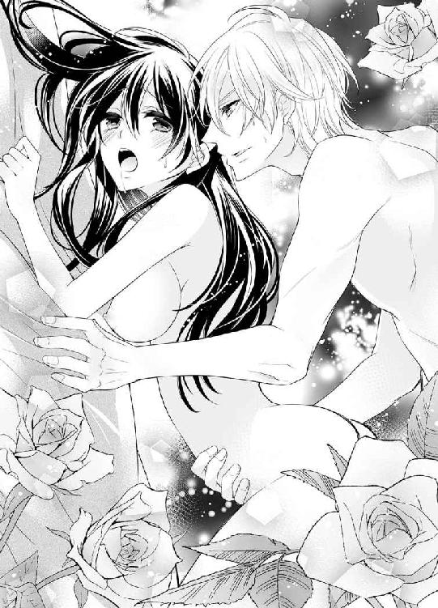

| 理系王子と拾われた花嫁【SS付】【イラスト付】 (チュールキス文庫) | |
| 上主沙夜 | |
| 株式会社ジュリアンパブリッシング (2016) | |
この物語はフィクションであり、実在の人物・団体・事件等とは、いっさい関係ありません。
イラスト・青井レミ
「開けろ！」
ダンッと激しく扉が振動する。向こう側にいる男が激怒して拳で殴っているのだ。青筋をたてて目を血走らせている様までありありと想像できて、真理奈はぶるっと身震いした。恐怖ではなく、嫌悪から。
「──やっぱり間違ってたわ」
式場から逃げた花嫁を連れ戻そうと、男は力任せに扉を叩き、蹴っている。その異常な激昂ぶりにますます嫌悪がつのり、真理奈は唇をゆがめた。どうせならパーではなくグーで殴ってやればよかった。気絶するぐらいに全力で。誓いの言葉に『いいえ』と答えたときの唖然とした顔で胸がすいたのか、若干手加減してしまったかもしれない。
「開けろ──!! 俺と結婚しなけりゃおまえが後生大事にしてる町工場がどうなるか、わかってんのか!? すぐにもぶっ潰してやるからな！ いいか、俺は本気だぞ！」
「結婚したって潰す気でしょうがっ」
それがわかったからこそ厳かな婚姻の誓いをきっぱり拒否し、新郎にビンタを浴びせて式場から逃げ出したのだ。真理奈は窓枠に乗って財布とスマホの入った小さなポーチを下に放った。さらに靴も脱いで放り投げる。残念ながら着替えているひまはない。
あんな男と結婚したって解決するわけがなかったのだ。あいつはあたしをズタボロに壊したいだけなんだから......！
『必要なのは勇気と想像力、それから、ほんのちょっとのお金だけ』
大好きなチャップリンの言葉が思い浮かんだ。
（そうよ！ 勇気と想像力と、ちょっとのお金。それさえあれば、何とかなるわ......！）
窓の外には大きな楡の木があり、涼しげな陰を作り出している。手を伸ばしても届かないが、跳べばどうにか行けそうだ。ここは結婚式場の三階。飛びつくことができそうな枝は少し低いところにあった。真理奈は思い切って窓枠を蹴った。必死に大木の枝にしがみつく。無我夢中で全身を使い、ドレスが盛大にまくれ上がるのも気にせず枝に四肢を絡めた。
（よ、よしっ。これで幹を伝って降りるのよ！）
ずるずると這うように幹に近づく。子供の頃、庭の柿の木によじ登ったことを思い出して慎重に下りようとしたのだが、焦っていたせいか、つるつるしたストッキングで滑ったのか、足掛かりにした枝を踏み外してしまった。
ぐらっと身体が半回転する。気がつけば真理奈は落下していた。必死に伸ばした手が細い枝を掴み、バキバキと枝の折れる音が派手に重なる。芝生に叩きつけられ、一瞬息が止まった。むしり取られた葉っぱが上からハラハラと降り注いだ。
「......ぅくッ......、ふ......はぁッ......！」
無理やりこじ開けるように呼吸をして、大きく胸を上下させると、さいわいすぐ側に落ちていたポーチを拾ってよろよろと真理奈は立ち上がった。せっかく投げておいた靴を履くことも忘れ、ふらふらと歩きだす。落ちたときに頭を打ったのか、ひどい眩暈がした。
（タクシー......、タクシーを拾おう。確か、こっちへ行けば道路に出られたはず......）
真理奈は建物の裏門から敷地の外へ出た。ぐらぐらする視界のなか、細い路地の向こうに車の行き交う大通りが見える。
（あそこまで......行けば......！）
コンクリートの塀に縋るようにして歩くうちにも眩暈はますますひどくなり、真理奈は前屈みになった。気がつけば地面がやけに近い。いつのまにか自分が膝をついていたことに気付いたときには、もう地面が目の前だった。身を起こそうと手をついても、まるで力が入らない。
歯を食いしばって起き上がろうとすると、視界の隅に黒い革靴が映った。それはどんどん近づいてくる。
（あ......あいつだ......！ 逃げなきゃ......、早く、逃げなきゃ......！）
しかし気ばかり焦って身体が言うことを聞かない。かろうじて視線だけを上向けて、真理奈は唖然とした。見下ろしていたのは逃げ出してきた結婚相手ではなく、何故か金髪碧眼の美青年だったのだ。
（............あたし、もう気絶してたんだ......？）
しかも、とんでもなくおかしな夢を見ている。ここは日本の路地裏よ？ こんなファンタジー映画の王子様みたいなキラッキラの金髪碧眼美青年、いるわけないでしょ......。
外国人青年が膝をつき、ぐっと顔が近くなった。眩暈でぼやけた視界でも、やけに綺麗な顔だなぁと感心する。美青年はエメラルドのごとく澄んだ翠の瞳をきらめかせて真理奈を見つめ、それはそれは嬉しそうな笑顔になった。
「わぁ。お嫁さん拾っちゃった」
（は......？ なに......それ............!?）
満面の笑みを湛える青年の顔が急速にぼやけてゆく。真理奈は眉根を寄せて呻いた。
（な......、なんであたし、こんな変な夢見てるの......!?）
逃げなきゃ。
早く逃げなきゃ。
捕まっちゃう──。
「拾ったからには僕のものだよね？」
金髪青年が嬉々として真理奈を抱き起こす。同時に意識は完全にブラックアウトした。
「大丈夫なんですよね？」
不安げな若い男の声が聞こえた。落ち着いた年嵩の男性の声がそれに答える。
「軽い脳震盪を起こしたようです。しばらく安静にしていれば回復するでしょう。眩暈や耳鳴り、頭痛などが続くようでしたら、すぐにご連絡ください」
「わかりました」
瞼を薄く開くと、ふたりの男性の後ろ姿がぼんやり見えた。背の高いほうの男が、もうひとりの男をドアから送り出して戻ってくる。彼は真理奈が薄目を開けていることに気付き、顔をほころばせたようだ。だがその表情は霧を透かして見るようにおぼろげだった。
彼は枕元に座り、真理奈の額を指の背でそっと撫でた。
「......安心して。大丈夫だから、もう少し休むといい」
親しみのこもった囁き。聞き覚えはないのに何故だか懐かしい気がした。真理奈はかすかに唇を震わせた。
『あなたは誰......？』
尋ねたいのに声が出ない。まるで夢のなかで声を上げようとしているみたい。それともこれは夢なのかしら......？
「そうだ、子守歌を歌ってあげる」
彼はにこりと微笑んで、真理奈もよく知っている歌を口ずさみ始めた。
「まいごのまいごの......」
────それ、子守歌ちがう......。
真理奈は夢うつつにも脱力し、ふたたび眠りの淵へと急激に引き込まれていった。
どこか遠くで誰かが『いぬのおまわりさん』を歌っているのがずっと聞こえていた。
ふ......っと視界が開けた。頭のなかから残響が消え去り、真理奈は瞬きをした。真っ白な天井にはクラシカルな縁取りがなされ、間接照明で淡く照らされている。左右を眺め、真理奈は顔をしかめた。ベッドの端がやけに遠い。遠近感がおかしくなったのだろうか。
手をついて上体を起こし、自分が寝ていたのが呆れるほど巨大なベッドであることに気付いた。広々とした室内は、そんな巨大なベッドを置いてもまったく狭苦しく見えない。インテリアは北欧風のすっきりしたデザインかつ高級感あふれる造りのものばかりだ。
「ど......、どこなのここっ......!?」
こんな、ＴＶでしか見たことのない高級ホテルのラグジュアリースイートみたいな部屋、自分ごとき庶民が暢気に寝ていていい場所ではない。早く退散しようと上掛けを撥ねのけ、真理奈は絶句した。何故か真理奈は素っ裸で、寝間着どころかパンティすら穿いていなかった。
「────いやぁあああっ、何これ!? なんでぇぇっ」
混乱して悲鳴を上げると、いきなりバタンとドアが開いて誰かが駆け込んで来た。
「どうした、マリナ!? 何があった!?」
飛び込んできたのは金髪の若い男だった。真理奈はいよいよ混乱して叫んだ。
「きゃああああっ、痴漢！ 痴漢よーっ」
「何!? どこだ!?」
血相を変えてきょろきょろする男に、真理奈は枕を投げつけた。
「いやーっ、近寄らないでっ」
「ま、待ってくれ、マリナ。誤解だ、僕はけっしてそのような者では......」
「いや！ いや！ 近づかないで！ 誰か！ 誰か助けてーっ」
「マリナ！ 僕はきみを助けにきたんだよっ」
「やだぁっ、変態！ いやぁあああっ」
「お願いだから話を聞いてくれーっ」
そこへ、黒スーツにサングラスといういかにも怪しげな風体の男たちがなだれ込んでくる。
「Eure Hoheit!」
耳慣れぬ外国語を叫び、男たちは一斉に懐から拳銃を取り出して真理奈に狙いを定めた。枕を振り上げたまま固まる真理奈を慌てて背後に隠し、青年は男たちに怒鳴った。
「マリナに銃なんか向けるな！ ちょっとした誤解なんだ、大丈夫だから出てってくれ」
「申し訳ありません」
日本語で言って、男たちはそそくさと出て行った。ホッと肩を下ろし、青年は振り向いた。
「いやぁ、ごめんごめん。びっくりさせちゃって────ほぐ!?」
顔面に枕を叩きつけられ、青年がよろける。
「こっち向かないでーっ」
「頼む、話を聞いて......」
「あたしの服を返してよ！ 痴漢！ 変態ーっ」
「ち、ちが......」
「────確かにその方は変人ですが、痴漢ではありませんよ」
ふいに落ち着いた女性の声が響いた。目を向けるとドアのところに洒落たスーツ姿の女性が佇んでいた。すらりとした体型で、膝丈のスカートから覗くほっそりした脚にエレガントなピンヒールがよく似合う。シンプルに髪をまとめ、リムレス眼鏡をかけた知性漂うクールな美女だ。我に返った真理奈は急に恥ずかしくなって、枕をぎゅっと抱え込んだ。
知的美女は軽く溜息をつき、おろおろしている青年に呼びかけた。
「殿下、とりあえず出ていってもらえます？ あなたがいると混乱が収まりません」
「う、うん......」
青年は叱られた犬みたいに悄気返って、とぼとぼと部屋を出て行った。
美女はドアを閉め、真理奈に一礼した。
「驚かせて申し訳ありません。あなたを心配するあまりのことで、あの方に悪気はなかったと思います。ここはひとつ大目に見てやっていただけませんか」
「......あなた、どなたですか」
「申し遅れました。友松香穂と申します」
女性は微笑んで名刺を差し出した。
「弁護士さん......？」
「はい。さっきのあの方の、顧問をしております。まぁ実態は尻拭いですけどね」
真理奈は苦笑する女性弁護士を睨んだ。
「あのひと誰なんですか。ここはどこ？ っていうか、なんであたし裸なの!?」
矢継ぎ早の詰問にも友松弁護士は泰然とした態度を崩さない。
「きちんと説明しますから、まぁ落ち着いて。着替えを用意するあいだ、ゆっくりお風呂にでも入ってはいかがですか」
「けっこうです。すぐに帰りますんで服を返してください！」
「ウェディングドレスを着て出て行かれるつもりですか？ さぞかし目立つでしょうね」
うっ、と真理奈は詰まった。そういえばウェディングドレスのまま式場から逃げ出してきたのだった。黙り込む真理奈に、友松弁護士はにこりと笑いかけた。
「不安なのは当然ですが、わたくしどもはあなたに危害を加えるつもりは毛頭ございません。どうぞ安心してください」
「......さっきのあのひとが、あたしを助けてくれたんですか」
「そうです。倒れていたあなたをここに運び、医者に見せました。裸にしたのはドレスでは寝づらいですし、怪我がないか確かめる必要もあったものですから。ちなみに脱がせたのはわたくしです」
「あたし、何にもされてませんよね!?」
「もちろんです。わたくしと医師以外、誰もあなたに指一本触れてはいませんからご安心を」
それを聞いて真理奈はようやく落ち着きを取り戻した。今すぐ帰ると言い張ったところで、確かにウェディングドレスで出歩きたくはない。切羽詰まっていたからこそ、そんなこともできたのだ。すでにその勢いは失われてしまっている。
「それじゃ......、お風呂をお借りします」
「バスルームはこちらです」
友松弁護士の後に従った真理奈は、開かれたドアの前でぽかんとした。
そこは風呂場と言うにはあまりにも広い空間だった。壁や床を覆う上品なマーブル模様は本物の大理石か。シャワーブースは三人くらい余裕で入れそうだ。トイレのスペースもたっぷり取られ、天井まで届く鏡の前の洗面台は大きなボウルがふたつ、ゆったりとした間隔で並んでいる。金色の蛇口は白鳥を象った優美なものだ。
一番奥には楕円形の浴槽が据え付けられ、その向こうの壁はガラス張り......というか巨大な窓だった。遠く高層ビルが立ち並ぶ風景がひどく非現実的で眩暈を覚える。
「あ、大丈夫ですよ。ＵＶカットになってますから日焼けする心配はありません」
「いや、そうじゃなくて......、外から丸見えじゃないですか」
「隣の建物はここより低いので覗かれる心配はありません。同じ高さのあるビルは五百メートル先ですし、外からは見えにくい加工が施されていますから、夜でも大丈夫です」
「はぁ......」
「アメニティはどれでもお好きなものをお使いください。化粧道具も揃えておきましたので、どうぞご自由に」
「......ありがとう......ございます......」
友松弁護士が出て行った後も、しばし真理奈は呆然と立ち尽くしていた。
夢かもしれないと、自分の頬をむにっと引っぱってみる。
（あんまり痛くない......。やっぱり夢かも）
夢なら夢で堪能してしまえ。腹を括り、真理奈は抱え込んでいた枕をぽいと放り投げた。
浴槽に湯を張る間に、がっちりとセットされていた髪をシャワーブースで丹念に洗った。備え付けのシャンプーやコンディショナー、ボディソープはすべてオーガニック天然素材をうたう高級品で、ハーブの清々しい香りがする。
思いっきり脚を伸ばしても全然余裕のバスタブはジェットバスになっていて、ミネラルたっぷりのバスソルトを入れた適温の湯に浸かりながら真理奈はうっとりした。ブクブクと勢いよく噴き出す気泡に包まれる心地よさは天国みたいだ。
「はぁ～......、気持ちいい～」
木から落ちたせいでちょっと痛かった背中の筋肉も優しくほぐされて気分爽快だ。
風呂から上がるとふかふかのバスローブに身を包み、用意されていた基礎化粧品を使った。知らないメーカーだが、こっちも無添加オーガニック天然素材もので、つけ心地はすこぶるよい。お高いんだろうな～と思いつつ、この際遠慮なく使わせてもらう。
「ドライヤーは、と......。これかな？」
キャメル色の革のケースを開け、真理奈は目を瞠った。
「こっ、これはダイソンのスーパーソニック......！」
確か五万円くらいしたはず。しかも限定モデルっぽいからもっと高いだろう。
「あぁ～......、やっぱりいいわぁ......。お給料ためて買おうかな」
髪を乾かしながら真剣に思案してしまい、ハタと我に返って真理奈は顔をしかめた。
「もうっ、それどころじゃないでしょ！」
自分を叱りつけたが、あまりに現実感がなくて警戒心が維持できない。新郎にビンタを食らわせて式場から逃げ出した自分が、超高級ホテルのスイートでのんびりくつろいでるなんて、どう考えてもありえないシチュエーションだ。絶対怪しい。怪しすぎる。あの女性弁護士は危害を加えないと請け合ってくれたけど、言葉どおりに信用するのもどうかと思う。
とはいえ──。
真理奈は可愛い籠にずらりと並んだ化粧品を横目で眺めた。クリスタル風の透明アクリルを使ったおしゃれなコスメは、いつもデパートの化粧品売り場で眺めつつ、高くて手が出なかったものだ。すでにパッケージから出されているが、どれもまったくの未使用品だ。
（なんだか悪いみたい。でも自由に使っていいって言われたし......、えぇい、使っちゃえ！）
真理奈は思い切って下地クリームのキャップを取った。
ファンデーションを薄く載せ、眉を描く。何色もあるアイシャドーを見比べてしばし迷ったが、暢気に化粧してる場合じゃなかったわと思い出して無難なブラウン系にした。
シアーピンクのルージュを塗っていると、バスルーム備え付けの電話が上品に鳴った。
「......はい」
『友松です。着替えを用意しましたので、ベッドの上に置いておきますね』
「あ、ありがとうございます」
『急がなくていいですから、どうぞごゆっくり』
バスルームから出ると、すでに友松弁護士の姿はなかった。キングサイズのベッドの上には大小様々な箱や紙袋が置かれている。気後れしつつ開けてみて真理奈は絶句した。
「な、何これぇっ......!?」
下着、服、靴など、必要なものはすべて揃っている。が、そのどれもが贅沢に縁のない真理奈にすらわかる高級品ばかりだったのだ。ブラジャーとパンティはレースを多用した手の込んだデザインのセットもの。足首にしゃれた模様がさりげなく入った光沢のあるストッキング。シンプルなデザインながら絶妙なカッティングでスタイルよく見える上品なワンピース。華奢で優美なデザインでも安定感があるピンヒールの可愛い靴。
さらに、ティファニーやらカルティエやらのロゴが入ったショッパーまである。とてもではないが恐ろしくて開けられない。ルブタンの靴だってできれば遠慮したかったのだが、裸足でいるわけにもいかないのでおそるおそる履いてみた。
とりあえず服と靴を身につけ、鏡の前に立って真理奈はまじまじと己の恰好を眺めた。髪はさらっと流しているだけだし、メイクも地味めだが、なかなかどうして、悪くないような気がする。派手めのアクセサリーを着ければパーティーにだって行けるかも。
「......ま、馬子にも衣装ってやつかなっ......」
嬉しいような気恥ずかしいような気分でいると、コンコンとドアが鳴った。
「は、はい」
思わず上擦った声を上げると、顔を出した友松弁護士が真理奈を見て眉を上げた。
「まぁ。よくお似合いですわ」
「あ、ありがとうございます......」
「あら？ アクセサリーも合わせてご用意したはずですけど」
「あっ、いえ。服だけお借りできれば充分ですので！」
焦って両手を振ると、友松は不思議そうな面持ちで真理奈を見つめ、くすっと笑った。
「では、こちらへどうぞ。殿下がお待ちかねです」
促されて歩き出したのはやけに幅の広い廊下だった。あまりに幅があり、毛足の長い絨毯が敷きつめられているので一瞬部屋かと思った。
上品な照明器具が据え付けられた壁には、額縁がやたらと大きい、ハガキサイズのスケッチ風の絵画が飾られている。優美な曲線を描く花台の上には九谷焼の壺。生けられたカサブランカやマルコポーロといった大輪のユリが馥郁たる香りを放つ。またもや異世界に迷い込んだ闖入者の気分になって真理奈は眩暈に襲われた。
「あ、あの......友松さん。殿下って、さっきの人のことですよね？ あの金髪の......」
「はい」
「殿下ということは......、どこかの王族......ってことですか......!?」
「そうなりますね」
溜息混じりに肩をすくめ、友松弁護士はドアをノックした。
「──真理奈さんをお連れしました」
「入りたまえ！」
打てば響くように弾んだ声が返って来る。ドアを開けた友松が「どうぞ」と促す。おずおずと部屋に足を踏み入れ、真理奈はふたたび呆然とした。そこは真理奈が目を覚ました部屋よりもさらに広く、さらにゴージャスな部屋だった。イタリア製と思しき優美な家具調度、革張りのソファ。小振りながらクリスタルがきらめくシャンデリア──。
そしてその下に、王子様が立っていた。
本当に王族かどうかは、この際関係ない。上品かつしなやかな色気を醸しだす仕立てのよいスーツに身を包み、落ち着いた色合いのネクタイを締めている。ふわりとした巻き毛はまさしく黄金の色で、それ自体がまるで王冠のようだ。
端整な顔いっぱいに喜びの笑みを浮かべ、青年は真理奈の手をぎゅっと握り締めた。
「ああ、やっと会えた......！ あまりに待ち遠しくて、ろくろ首になっちゃうかと思ったよ」
「..................はぁ？」
青年は真理奈の手を口許に持っていき、触れるか触れないかというくらいの軽いキスをした。そしていかにも嬉しそうな顔で真理奈をうっとりと見つめた。大粒のエメラルドのような美しく澄んだ翠の瞳だ。思わず見とれてしまい、ハタと我に返って手を引っ込めると、たちまち青年はしょんぼりとなった。犬なら耳と尻尾を垂れてきゅーんと鼻を鳴らすところだ。
「あの......。あなたがわたしを助けてくださったんですよね？ ありがとうございました」
気を取り直して礼を述べると青年はたちまち大輪の笑顔に戻った。
「どういたしまして！ 落ちてたから拾ったんだ」
そんな、人をモノみたいに言わないでほしい。しかし外国人ゆえ日本語が怪しいのだろうとここは流しておくことにした。
「どうもお世話になっちゃって......。服まで用意していただいてすみません」
「とってもよく似合ってるよ！ 気に入ってもらえたかな」
「はぁ、あの、すぐにクリーニングして返しますので」
「何言ってるの、あげるよ。シンプルなデザインだし、着回し利くから持ってると便利だよ」
ブティックの店員みたいなことを言われ、真理奈は顔を引き攣らせた。
「そ、それはそうなんですけどっ......、こんな高そうな服......」
「値段なんか関係ないよ。マリナに似合いそうなものを選んだだけなんだから」
「そういうわけにはいきませんっ」
「あれっ？ ペンダントは気に入らなかった？ ピアスと腕時計も用意したはずだけど」
「い、いえ、けっこうです。服だけお借りできれば！」
「だからあげるって。返されても僕が着るわけにもいかないでしょ」
にっこりと笑顔で押し切られ、おずおずと真理奈は頷いた。
「す、すみません。それじゃ、お言葉に甘えて......、服だけはいただきます」
「そんな遠慮しないで、全部もらってよ」
「そういうわけにはいきません！ 大体あなたがどこの誰かも知らないのにっ」
「えっ、僕のことわからないの？」
「会った覚えはありません」
きっぱり言い切ると、青年はいかにも物哀しげに眉を下げた。
「そんなぁ......。ひどいよ、マリナ。さっき会ったばかりじゃないか」
「そういう意味じゃなくて！」
「──ちょっと。ともかくお座りになってはいかがですか」
友松弁護士になだめられ、真理奈はしぶしぶソファに腰を下ろした。まったく腹立たしいくらいに座り心地のよいソファである。青年も向かいのソファにゆったりと座った。そのしぐさはごく自然で洗練されていて、いかにもハイソな別世界の住人らしい。
「殿下。一度きちんと自己紹介なさってはいかがですか。このままでは真理奈さんが混乱する一方です」
「名乗ってなかったっけ？」
「聞いてません！」
「ごめんごめん。マリナがあんまり可愛くて忘れてたみたいだ」
さらっと言って青年はにっこりと微笑んだ。
「僕はレオンハルト・ディートヘルム・フォン・ファーレンハイト。長くて面倒だろうから、レオンって呼んでね」
確かに舌を噛みそうな長たらしい名前だ。
「......殿下と呼ばれてるってことは、どこかの王子様なんですか」
「うん、そうだよ」
半分厭味で訊いたのだが、こともなげに彼は頷いた。
「バウムガルテン王国の第二王子なんだ。全然気にしなくていいからね」
「気にしますよ！ なんでその、バウムクーヘン王国の王子様が日本にいるんですかっ」
「バウムガルテン。バウムクーヘンは僕も好きだけどさ。──そういえば小腹が減ったな。どうせならバウムクーヘンでお茶しながら話そうか」
「けっこうです！」
怒鳴った途端ググーッとお腹が鳴る。赤面する真理奈に王子はにっこりと微笑みかけた。
「バウムクーヘンはまた今度にして軽食を取ろう。ちょうど頃合いだし、アフタヌーンティーなんかどうかな？」
「な、なんでもいいです......」
「それじゃ、アフタヌーンティーセットを二人前、いや三人前。友松くんも食べるよね？」
「そうですね。お昼を食べ損ねましたので、いただくことにします」
「じゃあ三人前、頼むよ」
「かしこまりました」
王子に指示された執事が一礼して退出する。今まで気付かなかったが、入り口近くの壁際に燕尾服に蝶ネクタイというクラシカルな恰好の執事（四十代と思しき東洋人）が控えていた。
レオンハルト王子はにっこりと真理奈に微笑みかけた。
「このホテルのアフタヌーンティーは、とっても人気があるんだ。美味しいよ」
「......なんで外国の王子様のあなたが日本に来てるのか、まだ聞いてないんですけど」
「んー。視察ってとこかな」
「視察？ 何の」
「いろいろ。日本は伝統工芸から最先端技術まで、視察すべきところが山ほどあるからねぇ」
「......日本語お上手ですね」
「ありがとう。日本大好きだから一生懸命練習したんだ。マリナは外国語はできる？」
「英語なら......。短大で英語学科だったんで」
「それじゃ、マリナの前では日本語か英語で話すね」
「バウムガルテンって......ドイツ語ですか」
「うん。公用語はドイツ語だけど英語も通じるよ。英語ができれば全然大丈夫！」
何が大丈夫なんだかわからないが、とりあえず相槌を打っておく。
「あの......、どうしてあたしの名前を知ってるんですか？」
「そりゃあ──」
得意顔で言いかけて、ふと思い直したように悪戯っぽく笑い、王子は内ポケットからカード様のものを取り出した。
「あーっ、あたしの免許証！ 返してっ」
「そう焦らなくてもちゃんと返すよ」
はい、とテーブルに免許証を置く。王子の合図で黒服が真理奈のポーチを持ってきて、うやうやしく手渡した。中を見ると財布とスマホがきちんと収まっている。二つ折りの財布がやけに膨らんでいるような気がして、真理奈は眉をひそめた。
「あ、勝手に免許証とか見ちゃったお詫びにお札足しといたから」
「なっ......、余計なことしないでください！」
慌てて財布を開くと、札入れ部分に万札がぎっちり詰め込まれていた。
「もっと入れたかったんだけど、財布が閉まらなくなっちゃって」
「じょ、冗談じゃないわ。お金なんていただくわけにはいきません！」
急いで札を抜いて叩き返す。全部ピン札だったが、二つ折り財布に入れられていたせいでＵ字型に曲がってしまっていた。
「ほんのお詫びなんだけどな～」
「お詫びなら服だけで充分ですっ。裸を見られたのも帳消しにしてあげますからっ」
「ハダカ......」
ふと王子は眉をひそめた。
「そういえば、僕はマリナのハダカを見ただろうか。見たはずだ。だが、全然思い出せない。視界に入っていたはずなのに何故だ......」
「思い出さなくていいですから！」
悔しそうにぶつぶつ呟く王子を、真理奈は真っ赤になって怒鳴りつけた。
「脳がハダカを認識する前に枕で攻撃されて、そっちに気を取られてしまったんだな。くっ、惜しいことをした」
真理奈はクッションを投げつけそうになる衝動をどうにか抑えた。仮にも相手は一国の王子だ。門地出生に貴賎はないと憲法でうたわれていても、無礼を働くのは気が引ける。
「──あっ、もしかしてスマホも覗いたとか!?」
「そんな失礼なことはしないよ」
「財布を覗くだけでも充分失礼よ！」
「そうだね。ゴメンナサイ」
やけに素直に謝られ、怒りが空中分解してしまう。真理奈は無理やり難癖をつけた。
「だ、大体あなたが王族というのも本当かどうか怪しいもんだわ。詐欺師じゃないの!?」
「うむ。マリナの言い分はもっともだ」
しかつめらしく頷いて、王子は席を立った。重厚な造りのライティングデスクからタブレットを取り上げ、何やら操作して真理奈に渡した。最新の超薄型デバイスだ。
「これなんかどうかな。各国の主な王族が紹介されてるんだけど──、ほら、ここにいるの僕でしょう？」
示された箇所には確かに今目の前にいる青年の写真があった。レオンハルト・ディートヘルム・フォン・ファーレンハイト。さっき名乗ったとおりの名前が書かれている。バウムガルテン王国第二王子、年齢は二十四歳......。
念のため他のページも見てみたが、怪しげなところはない。世界の王侯貴族を紹介している、紳士録のようなサイトだ。詳細についてはリンクになっていて、思わずタップしそうになったが、さっと取り上げられてしまった。
「後でゆっくり見るといいよ。目の前で見られるのも照れくさいし。──とにかくこれで、僕がバウムガルテンの第二王子レオンハルト本人であることは納得してくれたかな？ 何ならパスポートも見せようか？」
「......もういいです。失礼しました」
赤くなってぽそりと呟くと、大きな盆を持った執事が入ってきた。ウェッジウッドの皿にサンドイッチやスコーン、小さなケーキが品よく並んでいる。さらに、ハムやテリーヌ、ゼリー寄せなどの冷菜を盛りつけた皿もあった。銀製のティーポット、ミルクと差し湯のジャグなどを手際よく並べて執事が下がると、王子がにこにこしながらポットを手にした。
「さ、食べよう。足りなかったらお代わりを持って来させるから、遠慮なく言ってね」
トポトポと濃い琥珀色の紅茶を真理奈のカップに注ぎ、王子は微笑んだ。
薫り高い紅茶を含むと、爽やかな香気が口の中にふわりと広がる。
（あ、美味しい......）
思わず真理奈は口許をゆるめた。そんな真理奈の様子をレオンハルト王子はニコニコしながら優しいまなざしで見つめている。勧められるままサンドイッチに手を伸ばした。シャキシャキのきゅうりを茶色のパンで挟んだものと、トマトと卵を挟んだ白いパンのサンドイッチが交互に並んでいる。どちらもすごく美味しくてぺろりと平らげてしまった。
「こっちもどうぞ」
王子が手ずから冷菜類を小皿に載せてくれる。しっとりしたハム、なめらかでこくのあるテリーヌ、コンソメ味の小エビのジュレなどを次々に口に運んだ。
考えてみれば昨夜からろくに食事をしていない。これでみんなとお別れかと思うと寂しくて、実家での最後の夕食はほとんど喉を通らなかったし、朝もインスタントコーヒーを飲んでゆで卵をひとつ食べただけだ。
披露宴では豪華なコース料理が出されるはずだったが、挙式の最中に逃亡したから当然すべてキャンセルだろう。予定どおりに進んだとしても、あの男の隣で美味しく食べられたとは思えないが......。
真理奈は上品に紅茶を飲んでいるレオンハルト王子をちらっと窺った。目が合うと、たちまち王子は嬉しそうな笑顔になって、熱っぽい視線を返してくる。真理奈は赤くなって手にしたスコーンを呑み込んだ。紅茶をお代わりしようとすると、すかさず王子がポットを手にした。
「ありがとうございます......」
「気に入ってくれた？」
「は、はい。とっても美味しいです」
「やっぱりスコーンにはクロテッドクリームですわね。生クリームなんて邪道ですわ」
真理奈の隣では、友松弁護士が澄ました顔でスコーンにクロテッドクリームと大粒イチゴのジャムを塗り付け、口に運んでいる。カロリーが気になるところだが誘惑には抗えず、真理奈も同じことをした。適度な酸味を残したイチゴジャムと濃厚なクリーム、ほろほろとした口溶けのスコーンとが合わさって口中で絶妙なハーモニーを奏でる。
「マリナはとっても美味しそうに食べるよね。見ていて気持ちいいよ」
王子はニコニコしながらダークチョコレートのムースを口に運んだ。
美味しいもので警戒心がゆるんだのか、真理奈は王子に訊かれたことに深く考えることなく答えてしまった。友松弁護士は聞いているのかいないのか、マイペースで食べ続けている。結局一番食べたのは彼女だった。すらりとした体型のわりに意外と大食いだ。
やがて空いた皿が片づけられ、新しいティーポットが運ばれてきた。濃いめのアッサムにミルクを少しだけ入れて、真理奈は満足の溜息をついた。
カップをソーサーに戻した王子が、長い脚を優雅に組んでおもむろに口を開いた。
「──さて、お腹も落ち着いたところで今後のことを話し合っておこうか」
いつのまにかすっかりくつろいでしまっていた真理奈は、王子の一声ではっと我に返った。視察の計画だろうか。自分のような部外者がいては邪魔になる。
「あ、わたしそろそろ失礼します。いろいろとすみません、ごちそうさまでした」
立ち上がってぺこりとお辞儀をすると、王子は面食らった顔になった。
「何言ってるの。きみがいなけりゃ話にならないよ。マリナの話をするんだから、本人にいてもらわなきゃ」
「あたしの......？」
まぁ座ってと促され、仕方なくソファに座り直す。王子は手にしていたティーカップをテーブルに置き、組んでいた脚を解いて身を乗り出した。
「確認しておきたいんだが、友松くん。拾ったからには三か月経てば僕のものだよね？」
真理奈はぽかんとし、友松弁護士はしくりと眉間に皺を刻んだ。
「......何を拾ったかお訊きしてもよろしいでしょうか、殿下」
「もちろんマリナに決まってる」
「へっ、あたし!?」
何の話だろうと首を傾げていた真理奈は素っ頓狂な声を上げた。王子は笑顔で頷いた。
「うん。可愛いお嫁さんが落ちてたんで拾った。大事にするから心配しないで」
「ちょっと待ってください！ 落ちてたって何ですか!? あたしはモノじゃありませんっ」
「落ちてたじゃないか～～～」
むぅぅと王子は口を尖らせた。日本語ペラペラかと思えば、とんでもない勘違いをしている。
「落ちてたんじゃなくて、倒れてたんですっ」
「拾ったのは僕だぞ」
「それはそうでしょうけど、落ちてたんじゃなくて眩暈がして倒れてたの！」
「日本の遺失物法によれば、三か月以内に所有者が判明しないときは拾った者が所有権を取得できるはずだ。そうだろう、友松くん」
弁護士が口を開く前に真理奈は怒鳴った。
「所有者って何よ!? あたしの所有者はあたしに決まってるわっ」
「そうかな？ きみの所有権を主張する男がどこぞにいるみたいだけど？」
真理奈はぐっと王子を睨んだ。
「......なんでそんなこと知ってるんですか」
「道端にお嫁さんが倒れてたんだ。それくらい調べるさ」
それまでの優しく無邪気な表情が一変し、真理奈は青ざめた。
（やだ......、ひょっとして危ない人......!?）
真理奈の脅えを察した王子は、たちまちふにゃっと笑み崩れた。
「マリナはここにいたほうがいいと思うな～。ここなら安全だよ？ 無理やりきみを妻にしようとする男は手を出せない」
一瞬ぐらりと来たが、さっき出会ったばかりの、しかもよその国の王子に頼るのはどう考えても筋違いだ。
「──ご厚意はありがたいんですけど、自分の問題は自分でどうにかします」
真理奈はすっくと立ち上がり、一礼して踵を返した。
「どうにかできるの？ きみひとりで」
王子の声に、拳が震える。真理奈はぐっと奥歯を噛みしめ、毅然と振り向いた。
「どうにかします！ 必要なのは勇気と想像力、ほんのちょっとのお金だけだものっ......」
王子はエメラルド色の瞳をキラキラと輝かせた。
「チャップリンだね！ 僕も大好きな言葉だ。やっぱりマリナとは気が合うなぁ。だけど、そうは言ってもひとりじゃ心許ないでしょう？」
「あ、あたしはひとりじゃないですっ。家族もいるし......」
王子の表情が寂しげに曇る。
「僕は、いらない......？」
そうは言ってない、と返しそうになるのをぐっと呑み込んだ。変に期待させてはいけない。
「......あなたには感謝してます。見ず知らずのわたしに、こんなに良くしてくれて......、おかげでがんばれそうです。ありがとう、でもやっぱり頼るわけにはいきません」
ごめんなさい、と頭を下げ、ドアへ向かう。指先がノブに触れると同時に、ドアがバンッと鳴った。びくっと顔を上げると、王子がドアに手をついて押さえ込んでいた。
「だめだよ、マリナ。きみはここにいるんだ。僕がきみの所有権を手に入れるまでは、ね」
甘美で恐ろしい囁き声にぞくりと皮膚が粟立つ。真理奈はありったけの勇気を奮い起こして王子を睨みつけた。
「言ったでしょう!? あたしはモノじゃありません！」
「きみは僕のものだよ。誰が何と言おうと、僕が拾ったからには僕のものだ」
「だからっ......、──!?」
いきなり身体が浮き上がる。レオンハルト王子は真理奈を抱え上げると大股で引き返し、元のソファにどっかりと座った。逃れようと真理奈は遮二無二暴れ、王子の端整な顔を力任せにぐいぐい押しやった。
「ちょっと！ 放してよ！ この変態っっ」
「さて友松くん。話の続きをしようか」
押されまくる顔をぐぐっと正面に向け、王子は抗う真理奈を拘束しながら言い張った。友松弁護士は呆れたように嘆息した。
「殿下。拾ったものをネコババすると日本の刑法二五四条により遺失物横領罪に問われます。一年以下の懲役または十万円以下の罰金もしくは千円以上一万円未満の科料」
「友松さんまで!? あたしはモノじゃありませんってばー！」
「所有者に届け出れば一割もらえるんだよね」
「正確には五パーセントから二十パーセントに相当する額の報労金です」
「あたしの所有者はあたしよーっ」
真理奈は怒鳴ったが、王子は意にも介さず続けた。
「ふむ。ではこうしよう。今すぐマリナを解放して、報労金として彼女の一割をもらう。もしくは三か月保管して僕が全部もらう。──どっちがいい？ マリナ」
「その選択肢はどう考えてもおかしいわっ。だいたい一割って何よ!?」
「きみの人生の一割をもらうってこと。そうだな、マリナの余命が百年として......」
「あたしは二十一よ!? あと百年も生きないからっ」
「人間の生物学的な寿命の限界は、今のところおよそ百二十年と言われている。今後延びる可能性も大いにあることだし、マリナがあと百年生きても全然おかしくない」
王子は大真面目に言い切った。
「余命百年ということは一割は十年だ。マリナ、拾ったお礼に僕に十年くれる？ それとも三か月後に僕と結婚してくれる？」
「何言ってんの!? 王子様と結婚なんかできるわけないでしょ!?」
「どっちか選んでよ、マリナ。でないと今すぐきみを僕のものにしちゃうよ」
凄艶な笑顔で迫られ、真理奈は顔を引き攣らせた。
（いくらイケメンでもこんな変態いやぁあああっ）
「......殿下。今の発言は人権上大変に問題があると言わざるを得ません」
リムレス眼鏡をクイと押し上げ、友松弁護士がしかつめらしい顔で言い出した。ここぞとばかりに真理奈も断固として主張する。
「そうよそうよ人権侵害だわっ。結婚を強要するなんて時代錯誤もいいとこよっ」
「きみだって一時は強要されて折れたじゃないか」
真理奈は赤くなって眉を吊り上げた。
「──っ、だから間違いに気付いてやめたのよっ」
「そう、人は誰しも過ちを犯すものだ。だからね、マリナ。きみが僕の求婚を撥ねつけるのも間違っている可能性が大いにあるとは思わないか？」
「はぁあ!?」
「どうだろう。三か月間僕と一緒に暮らしてみるというのは」
「何でそうなるのっ」
「きみに僕のことをよく知ってもらいたいんだ。もちろん僕もきみのことをもっとよく知りたい。三か月一緒に暮らしてみて、どうしても僕を好きになれなかったら、きみのことはすっぱり諦めよう。きみをきみ自身に返してあげる。だからそれまでの三か月、僕に保管されてくれないだろうか」
「............言葉の使い方がものすごく間違ってると思うんですけど」
「ニホンゴ、ムズカシーネ」
「わざとやってるでしょ!?」
「断るというなら報労金として十年要求する。つまり今すぐ結婚だ。子どももすぐに作っちゃうぞ。そうなれば別れづらくなるだろうから、結果的にマリナは一生僕のもの。──ああ、僕としてはそのほうがいいな！ 友松くん、さっそく婚姻届を用意してくれたまえ」
「すでに取り寄せてあります」
ぴらっと婚姻届の用紙を差し出され、真理奈は仰天した。友松は味方ではなかったのか!?
「ちょっと待って！ 一国の王子様が道端で拾った女と結婚なんてありえないわっ」
「問題ない。きみの身元は調べた。椚真理奈。両親はすでに亡く、叔父夫婦と同居。叔父の椚佳生は祖父が興したクヌギ製作所を経営。きみも経理及び渉外担当者として同社で働いている。叔母の浩子、その息子の高生の他、従業員が十名」
「そうよ、うちはちっちゃな町工場なのよ!? 王子様とはとても釣り合わないわっ」
「職業に貴賎はないし、今どき身分や階級に拘るのはそれこそ時代錯誤というものだ。しかしあえて言うならきみの亡くなった母親は戦前からの旧財閥系のご令嬢だね」
「駆け落ち同然に結婚して、そっちとは絶縁状態よ。っていうか、いつのまにそんなことまで調べたのよ!?」
「調べられることは全部調査済みだ。先祖血縁から好きな食べもの、よく読む本、好みのタイプ、スリーサイズも」
「ストーカー!?」
「僕はマリナのタイプだよね？ もしも金髪が嫌いなら好みの色に染めるよ。気に入らないなら祖国も友だちもみんな裏切ってみせよう」
「そんな、『愛の讃歌』みたいなこと言われてもっ......」
「選んでよ、マリナ。三か月同居して結論を出すのと、今すぐ僕と結婚して子作りに励むのと、どっちがいい？」
「選択肢、変わってません!?」
「マリナが選ばないなら僕が選ばせてもらうよ。もちろん今すぐ子づく──」
「三か月同居！」
切羽詰まって叫ぶと、王子がニヤリとした。はっ、と口を押さえたがもう遅い。
「決まりだね」
「......っ、あの、でもやっぱり叔父さんたちに相談してからでないとっ......」
「マリナは成人してるんだから、保護者の許可は不用だよ」
「で、でも、あたしがいなくなって心配してると思うし......、捜索願とか出されたら困るのはあなたのほうじゃないですか？ 王子様が拉致監禁に問われたりしたらバウムクーヘンの恥になりますよっ」
「バウムガルテン。大丈夫、捜索願なんか出さないよ。叔父さんたちはきみが僕と一緒だって知ってるもの」
にっこりと笑う王子を真理奈は唖然と眺めた。
「なんで......!?」
「きみが眠っているあいだに電話しといた。『お嬢さんは預かっている。身の安全は保証するから騒ぎ立てないように』ってね」
「それじゃまるで誘拐よーっ。警察沙汰になっちゃうわっ」
「すぐに菓子折りを持たせて使いを出したし、納得してくれたんじゃないかなぁ。なんなら電話してみれば？」
「......電話していいんですか？」
「もちろん、どうぞご自由に」
意外に思いながら真理奈はポーチからスマホを取り出した。
「......あの、下ろしてもらえません？」
「契約書を交わすまではだめ」
甘い声で囁かれ、頬にチュッとキスされて真理奈は真っ赤になった。急いでスマホを操作し、王子の膝の上から実家に電話する。呼び出し音が二回ほど鳴って繋がると、息せき切った叔父、佳生の声が聞こえてきた。
『真理奈かっ!? よかった、無事なんだな!?』
「叔父さん......」
ふいに鼻の奥が痛くなって真理奈は歯を食いしばった。
『真理奈、大丈夫か？ 怪我してないか』
「......うん、大丈夫......。ごめんなさい、勝手なことしちゃって......」
『いや、いいんだ。真理奈があの野郎を殴ったのを見て、俺もスカッとした。工場のことは心配するな』
「でも、仕事がますますなくなっちゃうんじゃ......。あいつ、絶対手を回してくるはずよ」
『大丈夫、もう新しい取引先を紹介してもらった』
「え？ 紹介って......誰から!?」
『もちろん真理奈が世話になってる洋菓子屋の若旦那さ。そんな知り合いがいたとはなぁ。いやぁ、どっから仕事が来るかわからんもんだ』
ガッハッハと叔父は笑い、真理奈は目が点になった。
「よ、洋菓子屋の若旦那？」
『バウムクーヘンを作ってるんだろ？ いい人みたいじゃないか』
バウムクーヘン......？ ハッ、と真理奈は目を上げた。レオンハルト王子がにっこりする。
「あ、あのね、叔父さん......」
『ちょっとあんた、違うわよ。洋菓子じゃなくて和菓子屋よ。とらやの羊羹と榮太郎の金鍔を持ってきたのよ？』
叔母の浩子の声だ。
『ばかやろう、和菓子屋ならてめぇんとこの菓子持ってくるだろうが』
『それもそうねぇ』
「叔父さん、叔母さん。あの、そうじゃなくてね......」
『おい、真理奈。おまえまた変な男に引っかかったのか!?』
いきなり若い男の怒鳴り声が聞こえてくる。従兄弟の高生だ。
「た、たかちゃん？ またって何よ。変な言い方しないでくれる!?」
『そいつヤクザじゃねぇだろうな!? ベンツ乗って高そうなスーツ着た野郎がいきなり高級和菓子持って挨拶に来るなんて尋常じゃねぇぞ』
「うん......そうだよね......」
『真理奈ちゃん、あんた本当に無事なんだろうねぇ？』
心配そうな叔母の声が割り込んだ。
「う、うん、大丈夫よ、叔母さん」
『お菓子いただいちゃってもいいかしら』
「え。うん、いいと思う......」
『代われよ、おふくろ！ 菓子ごときで買収されるな！』
『なによ、高生だってあんこ好きじゃないの』
『そういう問題じゃねぇっ』
『なぁ、真理奈。そこのバウムクーヘンはどうなんだ？ 美味しかったらついでのときに持ってきて──』
『親父っ』
ああ、変わんないな......と真理奈が遠い目になっていると、別の男の声が聞こえてきた。
『真理奈ちゃん！ 工場のことは心配いらないからなっ』
『あの野郎をぶっ飛ばして式場から飛び出したって聞いて、みんな拍手喝采したんだぜ。真理奈ちゃんひとりで背負いこむなんてやっぱおかしいよ。力を合わせてがんばろうぜ！』
クヌギ製作所で働く従業員たちが代わる代わるエールを送ってくる。真理奈は熱くなる目頭を押さえた。
「ありがとう......！ 本当はすぐに帰りたいんだけど」
『いや、だめだ、真理奈』
真剣な叔父の声が聞こえた。
『あの野郎、さっき怒鳴り込んで来やがった。何が何でもおまえを見つけ出すって息巻いてたぞ。こっちは知らぬ存ぜぬで通したが......、正直あいつはヤバい』
そうよ、目がイっちゃってるわ、と向こうで叔母が声高に言っている。
『この際だ、ほとぼりが冷めるまで若旦那に匿ってもらうといい。仕事も紹介してもらったし、礼を言っといてくれよな』
「う......、うん......」
引っ掛かりつつも、叔父の言葉に真理奈は頷いた。そこへまた高生が割り込む。
『いいか、何かあったらすぐ電話しろ。どういう知り合いだか知らねぇが、気前が良すぎる。絶対下心があるに違いねぇ』
うん......、下心ありあり。
ハハ、と真理奈は引き攣った笑い声を上げた。結婚式から逃げ出したばかりだというのに、よりにもよって会ったばかりの外国の王子様に求婚されているとは言いづらい。言ったところで余計に混乱するだけだ。そもそも真理奈自身が混乱の極みである。
また電話するから、と言って通話を切り、真理奈はジトッと王子を睨んだ。
「......王子様、菓子屋の若旦那にされてますけど」
「レオンって呼んでよ。でもいいね、それ。いっそバウムクーヘンの店でも開こうかな。どう思う？ 友松くん」
「いいんじゃないですか。そうだわ、どうせなら当ホテルのパティスリーで新規の目玉商品として売り出してはいかがでしょう。現在バウムクーヘンは扱ってなかったと思いますので、担当者に伝えておきますね」
「うむ。商品名は『マリナ姫のお気に入り 愛のバウムクーヘン』で頼む」
「はぁ!? なんであたし......っていうか、このホテル、王子様のものなんですかっ!?」
こともなげに王子は頷いた。
「うん、オーナーなんだ。この最上階フロアは僕専用だから気兼ねしないでいいからね。まぁ、日本における自宅みたいなものかな。和洋中のレストランにティールーム、プールやフィットネス設備もあるし、ここだけでも生活に不自由はしないと思うよ」
にっこりと笑う王子をマリナは呆気に取られて見返した。
「さて、と。それじゃ家族の了解も得られたことだし、さっそく契約を結ぼうか」
「正式な契約書はこれから作成しますので、とりあえず今日はこちらに署名願います」
事務的な口調で言って友松弁護士が差し出した用紙を見るなり真理奈は眉を吊り上げた。
「婚姻届じゃないですかっ。結婚するかどうか決めるのは三か月後じゃなかったの!?」
「日付は三か月後にします」
「それだって三か月後に結婚の一択じゃないのっ、話が違うわ」
「三か月経ってもマリナがどうしても僕と結婚する気になれなかったら、僕がこの手でこれを破くよ。それでどう？ 正式な契約書にはきちんとその旨明記する。ね？ 友松くん」
「当然です」
クリップボードに挟んだ書類に王子はサラサラとサインをした。マリナも書いてとペンを握らされ、逡巡していると、友松弁護士がなだめ口調で言い添えた。
「大丈夫ですよ、今持っていっても書き直さないと受け付けてもらえません」
真理奈は覚悟を決めて署名した。用紙を書類鞄にしまい、友松が尋ねた。
「何か他にご要望は？」
「うーん。三か月後に求婚を拒否された場合、やっぱり慰謝料を払わないといけないよね」
「い、慰謝料!?」
ぎょっとして真理奈は王子を見上げた。
「マリナの日給が五万円として......、三か月分に精神的・肉体的苦痛に対する補償を加味すると。──うん、十倍でどうかな？」
「五千万くらいですかね」
さらっと友松が言い、真理奈は慌てた。
「ちょ、ちょっと待って！ あたしのお給料、日給五万円になんかならないわよ!? 五千万なんて払えるわけないでしょ!?」
「何言ってるんだ、僕がマリナに払うんだよ」
「はぁ!?」
「三か月も拘束された挙げ句、僕にひとつも好意を持てなかったとしたら大変な苦痛だ。きみに精神的・肉体的苦痛を与えた責任は取らねばならない」
大真面目な顔で、きっぱりと王子は言い切った。
「......あの......、精神的はともかく、肉体的苦痛って何ですか」
「あ、誤解しないで。セックスが合わないのも苦痛だよねってこと」
さらっと言われ、固まっていた真理奈はかーっと赤くなった。
「あっ......、あたしはあなたとセッ......クスなんてしないわよっ......！」
「僕はしたい。すごくしたい」
相変わらず大真面目に王子は言い切る。真理奈はますます赤面した。
「あたしはしたくありませんッ。好きでもない人とできるわけないでしょ!?」
「殿下、レイプは犯罪ですからね」
友松弁護士に釘を刺され、王子は重々しく頷いた。
「そんな卑劣なまねは絶対しないよ。要はマリナをその気にさせればいいんだろう？」
「念のため言っておきますが、怪しげな薬を使うのもだめですよ」
王子は心外そうに眉を上げた。
「トド松くん！ きみは僕がデートドラッグを用いるような男だと思ってるのか!?」
「友松！」
「そんなことしたら訴えますよ!? 泣き寝入りなんて絶対しませんからねっ」
真っ赤になって憤激する真理奈に、王子は真剣な顔で訴えた。
「マリナ、信用してくれ。けっして無理強いなんてしない。ただ、きみの気を惹くために僕が努力することは認めてもらえないだろうか。動物だってメスの気を惹くためにオスは死に物狂いで努力するんだ。力を振り絞って長い尾羽根を広げたり、おかしなダンスを踊ったり、せっせと新居を作ったり、綺麗な小石を集めて展示したりするじゃないか」
（そういう鳥がいるのはＴＶで見たことあるけど～～～）
真理奈は顔を引き攣らせた。全体として言っていることは真面目で紳士的なような気もしないではないが、いかんせん例えが斜め上だ。
「頼む、マリナ。僕の求愛行動を拒絶しないでくれ」
間近から真剣そのもののまなざしで迫られ、気押された真理奈はつい頷いてしまった。とたんに王子はぱぁっと顔を輝かせる。
「ありがとう！ マリナにその気になってもらえるよう全力でがんばるよ！ だから僕を好きになってねっ」
「お、お約束はできません」
逃げ口上にも王子は笑みを崩さない。
「でも、僕がマリナに求愛するのは受け入れてくれるよね？」
「う......」
「努力すら受け付けてもらえないなら今すぐ実質的婚姻関係に持ち込むしかない」
「それは犯罪ーっ」
「僕に犯罪者になってほしくはないでしょ？」
「あたりまえですよっ。あたしだって犯罪被害者になんてなりたくありません！」
「だったら歩み寄ろう。三か月かけて僕はきみの愛と信頼を勝ち取るつもりだ。僕にその機会を与えてほしい」
じっ......と瞳を覗き込まれ、その真剣さに真理奈はどきっとした。彼は本気だ。真理奈のどこがそんなに気に入ったのか謎だが、とにかく彼がふざけてなどいないことだけは確かだ。
「わ、わかりました。あなたの努力を撥ねつけはしません。......でも、イヤなことはイヤだって言いますからね」
「もちろんそうして。アプローチを変えなきゃいけない。でも、三か月一緒に暮らして、僕のことが好きになったら......結婚だよ？」
「あくまで好きになったら、です！」
「ふふ......。きっときみは僕を好きになるよ。三か月もしないうちにね」
王子は無邪気な笑みを浮かべた。その翠の瞳にどこか不穏な気配が潜んでいるような気がして、真理奈は思わず身震いした。
数日後、友松弁護士が正式な契約書を持って訪ねてきた。じっくりと目を通し、疑問点は納得いくまで説明してもらったうえで、真理奈は意を決して署名した。契約内容は先日口頭で交わした条件と変わらない。
これから三カ月間、真理奈はレオンハルト王子が所有するこのホテルで同居する。ホテルの建物内は自由に歩き回ってかまわないが、建物の外に出る場合は必ず事前に王子に申し出て許可を取り、一人以上の護衛を伴うこと。
行動の自由に関する束縛はそれくらいだ。電話はいつどこに掛けてもよいが、自分の居場所は家族を含め誰にも言ってはいけない。
これは王子が真理奈の行動を制限しようというのではなく（それも大いにありそうだが）、真理奈の身の安全のためだ。結婚相手の間ノ瀬厚樹は挙式の最中に花嫁に逃げられ、大恥をかかされたと激怒して真理奈を捜し回っている。当然の反応ではあろうが、もし見つかれば無事では済むまい。
実家は見張られているので危なくて帰れない。友人を頼れば迷惑をかけてしまいそうだし、王子のところに居候させてもらうのが結局一番安全なのだった。王族だけあって何人も護衛官が付いているし、セキュリティも万全だ。
（仕事も紹介してもらっちゃったしなぁ......）
真理奈はパソコンの画面を覗いて嘆息した。薄くてお洒落で高機能なこのパソコンは王子が真理奈に気前よくプレゼントしてくれたものだ。
真理奈は会社の経理や渉外の事務を行っている。ギリギリの人員で何とかやっているのだから、自分だけ遊んでいるわけにはいかない。ネット経由でデータをやりとりすれば工場の事務室にいるのと同様に仕事ができる。
事務室にある自分のノートパソコンを取りに行きたいと訴えたのだが却下され、代わりに最新型のものをポンと与えられた。受け取れませんと固辞すると捨て犬みたいに悄気るので、やむをえずここにいるあいだ借りているだけだと自分に言い聞かせた。
一時は廃業寸前まで追い詰められたクヌギ製作所は、王子が紹介してくれた仕事でどうにか持ち直した。厚樹の妨害によってそれまでの取引先とは契約が打ち切られたままだが、新しい取引先に出来映えを認められれば次の仕事につながるはず。
王子の紹介先は間ノ瀬の影響力が及ばない相手で、厚樹は地団駄踏んで悔しがっていると、従兄弟の高生が小気味よさげに笑って教えてくれた。
仕事が一段落したところで、真理奈はキッチンでコーヒーを淹れた。
ハイパーラグジュアリースイートとでも言うべき王子の居室は、ちょっとしたお屋敷並の設備が整っている。寝室は三つ、お風呂は二つ、広々とした居間に書斎、控えの間、ホームバーにキッチン。料理道具や食器もひととおり揃っている。好きに使っていいよと言われたので、レオンハルトがいないときは気分転換に自分で食事を作った。
視察に来ていると言ったとおり、レオンハルトは留守にすることが多かった。大学の研究室や大小様々な規模の工場などの見学で日本全国を飛び回っているらしい。
紳士録サイトで知ったのだが、レオンハルトは工学博士の学位を持っていた。欧米の錚々たる大学に留学し、特許もいくつか所有している。スマートフォンやタブレットに欠かせない技術も含まれていて、その特許使用料がレオンハルト個人だけでなくバウムガルテン王国にも多大な貢献をしているらしい。
真理奈はコーヒーを飲みながらパソコン画面を睨んだ。
映し出されているのはレオンハルト王子のFacebookページだ。視察してるところやプライベートっぽい写真なんかが闊達な短文（英語）と共に載せられており、フォロワーが十万人以上いる。むろん書いているのは本人ではなく専属スタッフだ。掲載前にチェックはしているようだが、彼自身はＳＮＳにさして興味がないらしい。そのわりに、ねだり倒して真理奈とLINEを繋げると、しょっちゅうラブラブなスタンプを送ってくるのだから鬱陶しい。
外泊の夜は会食の予定でも入っていない限り、電話かSkypeを入れてくる。そして真理奈の反応の薄さにめげることなく楽しそうにその日の報告をし、『愛してるよ』とか『今すぐきみを抱きしめたい』などと衒いもなく囁くのだった。
はいはいと適当に聞き流しながら、連絡がなければないで、どうしたんだろうと気になってしまう。いつのまにか彼の術中に嵌まってしまったようで、腹立たしくなった。
「マリナーっ、ただいまー！」
いきなりバンと扉が開き、顔を紅潮させた王子が駆け込んできた。ぎょっとして、飲んでいたコーヒーを噴きそうになる。
「か、帰りは夜じゃなかったんですか!?」
王子は一昨日から九州に行っていたのだ。有無を言わさずぎゅうと抱きしめ、彼は愛しげに真理奈の髪を撫でた。
「ああ、マリナのこのサラサラヘアー。一日でも触らずにいると禁断症状が出てしまう。早く逢いたいから、新幹線はやめて飛行機にしたんだ。おみやげに明太子買って来たから後で一緒にお茶漬け食べようね！」
「はぁ......」
金髪碧眼の美形王子がお茶漬けを啜る様はなかなかシュールである。彼は和食が好きで、サシミ、スキヤキ、テンプラなどより庶民的なお茶漬けがお気に入りだ。お茶漬けは奥が深いんだよ！ と小一時間講釈を聞かされたこともあった。味噌も大好きで、真理奈が作ったサバの味噌煮や豚汁を、それは美味しそうに至福の表情で平らげた。
「おかえりなさいのチューは？」
ニコニコと無邪気にレオンハルトがねだる。溜息をついて、そっと王子の頬にキスすると、不満そうに彼は口を尖らせた。
「そろそろ唇にしてくれてもよくない？」
「いやです」
「ちゃんと歯磨きしてるよ？」
「そういうんじゃなくて！」
真理奈は眉を吊り上げ、ぷいっとそっぽを向いた。
「もー、マリナは照れ屋さんだなぁ」
「あなたはもう少し慎みを知ってください！」
「ツツシミ。日本の美徳だね。でもそれって残念ながら世界レベルではあんまり通用しないんだなぁ。特に欧米は宗教的に初めに言葉ありきの世界だからさ。言葉に出して言わないと、何も意見を持ってないってことになっちゃうんだ。何とも即物的で潤いに欠けるけど、キリスト教は元々砂漠の宗教だから仕方ないか」
にっ、とレオンハルトが笑う。彼は時折こんな含みのある笑顔を覗かせる。そのたびに、本当はどういう人なんだろうかと考え込んでしまう。ニコニコしているのも愛想がいいのも、やたら真理奈をかまうのも、Facebookに載せてる写真みたいなものなのだろうか。嘘ではないが本質を晒してもいない......。
（──っ、どうでもいいわ、そんなこと。三か月経ったらお断りして家に戻るんだから）
真理奈はじりじり迫ってくる王子の端整な顔をぐいと押しやった。
「夕食はどうします？ お帰りは夜遅くだと思ってたから、何の用意もしてませんよ」
「んー......、出かけるの面倒だから、シェフ呼んで作らせよっかなー。マリナとふたりでまったり過ごしたいし」
「じゃあ永井さんに伝えます。ご希望は？」
「魚介がいいな。ペスカトーレとか。あと生ハム」
「イタリアンですね」
てきぱきと内線で執事の永井に王子の希望を伝える。その間も彼はおんぶおばけのごとくマリナにくっついて離れようとしない。抱え込むようにお腹に手を回し、猫みたいにすりすりと頬をすり寄せてくる。最初はあまりの近さに硬直したものだが、鳥肌立つような嫌悪は感じなかったし、胸を触ったりはしないので、とりあえず辛抱することにした。
「ねー、マリナ。ビジネスライクな口調はやめてくれない？ マリナは僕の恋人であって秘書じゃないんだから」
「恋人じゃありません！」
「じゃあ何？」
じっ、と王子が瞳を覗き込んでくる。どきっとして反射的に腕を振りほどこうとすると、逆にぎゅっと抱え込まれた。
「マリナは自分のこと、僕の何だと思ってるの？」
「......っ、ひ」
「ひ？ あっ、ヒロイン？」
「ひまつぶし！」
王子は眉を下げ、はぁぁ～とせつなげに嘆息した。
「潰すような暇、僕にはないんだけどなぁ」
「だったらいつまでもあたしなんかにかまってないで、お仕事でも何でもしてください！」
「マリナをかまうのは暇だからじゃないよ。楽しいし、なごむから。ねぇ、マリナ。一緒にお風呂入ろ？」
「いきなり何言い出すんですかっ、いやですよ！」
赤面して力任せに腕を振りほどき、壁に背を貼り付けて睨む。王子はかまわず壁に両手をついて真理奈を囲い込んだ。青ざめて硬直する真理奈を王子は翠の瞳でしげしげと見つめた。
「ねぇ、マリナ、名前呼んで？」
「レ、レオン」
「『おかえりなさい、レオン』って言ってみて？」
「お、おかえりなさい、レオン......」
完全に棒読みだったにもかかわらず、王子は幸せいっぱいの笑顔になった。真理奈の頬を愛しげに撫でた彼の顔が近づいてくる。反射的に目をつぶると、額にやわらかな感触がそっと押しつけられた。目を開けると、レオンハルトが優しく微笑んでいた。
彼は身を起こし、ネクタイをゆるめながら歩きだした。
「シャワー浴びてくるね。その気になったらマリナもおいで」
「なりませんからっ。おひとりでどうぞごゆっくり！」
真っ赤になって目を怒らせる真理奈に笑いかけ、レオンハルトは廊下に消えた。
「わ......、わけわかんないんだからっ......！」
八つ当たりのようにひとり怒鳴ってみたものの、動悸はいつまでも収まらなかった。
夕食後、場所を移してワインを飲んだ。大きな窓いっぱいに、星屑を散りばめたような夜景が広がっている。音量を抑えたクラシック音楽が流れる室内は間接照明にほんのりと照らされ、どこか広々とした夜の海を思わせた。
（......星空のなかに浮かんでいるみたい）
ワイングラスを手に、ぼんやりと真理奈は思った。自分などには贅沢すぎる光景だ。空調の効いた快適な室内で、イタリアの高級ワインのグラスを片手に、きらびやかな夜景を眺めているなんて......。雰囲気だけで酔ってしまいそうだ。
そしてもうひとつ、非現実感を否応なしに深める原因がすぐそこにあった。真理奈を膝に載せ、上機嫌ですっかりくつろいだ態のレオンハルト王子である。
まったく、見れば見るほど無駄にゴージャスな美青年だ。ほのかに輝く金の髪。夜ともなれば闇が溶け込んだように色合いを深める翠の瞳。肩幅が広く、すらりと引き締まった筋肉質の体躯。充分に離れて鑑賞できれば、こんな落ち着かない気分にならずともすむだろうに。
王子は手を伸ばしてボトルを取り、真理奈と自分のグラスに白ワインを継ぎ足した。
「......酔わせて何かしようとしたって無駄ですよ。これでもあたし、けっこう強いですから」
警戒心もあらわに予防線を張ると、王子はくすくす笑った。
「何かするなら素面じゃなきゃつまんないよ。ほろ酔いのマリナも色っぽくて可愛いけどさ」
なでなで、と猫でも撫でるみたいに頭を撫でられ、真理奈は赤くなった。
「あの、そろそろ下りてもいいですか」
「だーめ。マリナの定位置は僕の膝の上なんだから」
「あたし、猫じゃないんですけど......。っていうか、脚痺れません？」
「全然。ちょうどいい重みだよ。軽すぎず、重すぎず、抱っこするには最適」
「は、恥ずかしいんですけどっ......」
「いいじゃない。ふたりっきりのときくらい、人目を気にせずべたべたしてようよ」
「だからあたし恋人じゃありませんってば！」
「じゃあ猫だと思って」
「無茶苦茶言わないでくださいっ」
睨んでも王子はニコニコしているだけ。まさに暖簾に腕押し、糠に釘だ。
「......もうっ、あたしのどこがそんなにいいんですか」
「全部」
ちゅう、と頬にキスされて真理奈は赤面した。
「そ、そんなの変ですよ！ あたし、全然普通だし、何の取り柄もないし」
「普通のどこが悪いの？ マリナはマリナであるというだけで、僕にとってかけがえのない価値があるんだ。それでいいじゃないか」
「で、でも、レオンみたいな人には、誰が見ても価値のある人のほうがふさわしいですよ！」
「......僕みたいな人？」
ふ、とレオンの目つきが鋭くなる。
「え、っと、その......、レオンは王子様だし、頭がよくて、ハンサムだし......」
「マリナにとって、僕は『そういう人』なのかな」
見つめてくる彼の瞳は何だかひどく寂しそうで、思わずマリナはふるっと首を振っていた。
「それは......、確かに王子様で、頭がよくて、ハンサムだけど......、変すぎると思います」
目を瞬いたレオンハルトが弾かれたように笑いだす。
「マリナのそういう正直なところ、好きだな！ 変すぎてどう？ 呆れた？」
「......だいぶん呆れたかも」
くすくすと楽しげにレオンハルトは笑い続ける。
「正直でいいなぁ。それで、呆れて嫌いになっちゃったかな？」
「嫌いでは......ないですけど......」
「本当？」
瞳に笑いをにじませて、レオンハルトが顔を覗き込んでくる。急に胸がドキドキしてきて、真理奈はうつむいた。その顎をそっと掬って彼が囁く。
「言ってよ、マリナ。僕のこと......嫌いじゃないよね？」
「............嫌いじゃない、です」
「よかった」
彼は真理奈をぎゅっと抱きしめた。グラスのなかでワインが揺れる。ほっ、と耳元で王子が溜息をついた。
「マリナに嫌われたら、悲しくて死んじゃうよ」
「そんな大げさな......。あたしよりいい人なんて、いっぱいいるでしょ」
焦って口走ると、レオンハルトは傷ついた瞳で真理奈を見た。
「どうしてそんなこと言うの？ 僕にはマリナじゃなきゃ意味がない。たとえ世界中の人に嫌われても、マリナが僕を好きでいてくれたらそれでいいのに」
「だからっ......、なんであたしなんですか!? いくら好き好き言われたって、あたしじゃレオンと釣り合わない......っ」
「釣り合ってなきゃそもそも出会わないよ」
「どこがっ。一般庶民のあたしと王族のあなたが釣り合ってるわけないわ」
「釣り合ってるさ。遺伝子レベルでね」
力説され、真理奈はぽかんとした。
「────は？」
「だからこそ僕たちはこんなにも惹かれあってるんじゃないか。磁石のごとく」
「惹かれあってません」
にべもなく否定したが、王子は聞いていない。
「僕らは完璧な組み合わせなんだ。だからこそ出会い、恋に落ちた」
「落ちてませんてば！」
「この世に偶然などない。すべては必然。僕たちは出会うべくして出会ったんだ。マリナ、結婚は勢いだよ。流れに逆らってはいけない」
「酔ってるんですか!? 言ってることが滅茶苦茶だわ......、ちょ、ワインがこぼれちゃう！」
レオンハルトは奪い取ったグラスを乱暴に置き、体重をかけてのしかかった。ソファに押し倒されて真理奈は竦み上がった。肩を押え込み、レオンハルトが顔を近づける。真理奈の脳裏に不快な出来事がよみがえり、この世でもっとも嫌悪する男とレオンハルトが重なった。
「......いやぁあああっ」
悲鳴とともに涙が噴きこぼれる。力任せに彼を押しやり、真理奈はソファから飛び下りた。
「マリナ！」
無我夢中で自室に駆け戻り、毛布を頭から引っ被って身体を丸める。堰を切ったようにぽろぽろと涙がこぼれた。やがて遠慮がちなノックの音が聞こえてきた。
「──マリナ。僕だよ。入ってもいい......？」
答えずにいると、「開けるよ」と遠慮がちな声がした。しばらく戸口に佇んでいた王子がベッドに歩み寄り、端にそっと腰を下ろした。真理奈は背を向けたままさらにきつく毛布を巻き付け、ぎゅっと目を閉じた。
「ごめんね。いやなことはしないって約束したのに、つい焦ってしまった」
「......乱暴なのは、いや」
「うん。ごめんね」
沈んだ声に、また涙が出そうになる。
「ねぇ、マリナ。言いたくなかったら答えなくていいけど......、何かいやなことされたの？ きみと結婚しようとしてた──間ノ瀬厚樹に」
唇を噛み、膝を抱え込む。
「誤解しないで。何もないわ。ただ......無理やりキスされただけ」
「そうか......。いやなこと思い出させて、ごめん」
「もういいわ......」
「マリナ。僕はきみが──好きだ」
ひっそりとして、それでいて決意のこもった囁きに息を呑む。
「信じてもらえないかもしれないけど、本当にきみが好きなんだ......。ずっと一緒にいたい。僕は本気だよ。いろいろと疑問はあるだろうけど、そこだけは疑わないでほしい」
「......わかったわ」
なんでわたしなんだろうと疑問はまだ渦巻いていたけれど、真理奈はコクリと頷いた。
「約束する。僕はマリナを大切にするよ。マリナの大切なものも、大切にする。......だから、僕を嫌いにならないで」
「嫌いじゃないって、言ったでしょ......」
「許してくれる？」
「......許すわ」
「ありがと、マリナ。愛してるよ」
さらっと言われて頬が赤らむ。まるで呼吸をするみたいに、彼は愛の言葉を口にする。たぶん接尾語みたいなものなのだろうけど、そういうやりとりに慣れない真理奈はいちいち意識してしまう。そんなに愛される価値が自分のどこにあるのだろうかと自問してしまうのだ。
「ねぇ、マリナ。いやな思いをさせたお詫びに、僕にしてあげられること何かない？」
「............ココア」
「ん？」
「ココアが飲みたい。......作って」
「喜んで！」
ぱぁっと笑顔になるのが見えるような声でレオンハルトは応じた。
「待ってて、すぐに持ってくるから」
「いい！ ──あたしがキッチンに行くから......、ゆっくり、作って」
「......わかった。それじゃ、マリナへの愛をたっぷり込めて作るよ」
毛布の上から真理奈の頭のてっぺんにキスをして、レオンハルトは寝室を出ていった。
しばらくうずくまっていた真理奈はのろのろと身を起こし、バスルームに入った。目許をティッシュで押さえ、髪にブラシをかける。
（急に泣きだしたりして......馬鹿みたい）
レオンハルトは悪くない。ちょっと強引だったけど、いつものようにふざけていただけなのだ。本気で怯えて泣きだすなんて、あまりに子どもじみていた。その後の彼の対応がすごく誠実で紳士的だっただけに、ますます自分が彼にふさわしい相手とは思えなくてへこんでしまう。
パンパンと頬を叩いて気持ちを切り換え、キッチンに行くと、湯気のたつ白いマグカップを手にレオンハルトが振り向いた。
「マリナ。ちょうどできたところだよ」
カフェのギャルソン風のエプロン姿でにっこりする彼にドキッとして真理奈は顔を赤らめた。
（ちょっと......いいかも......）
調理台を兼ねた広いテーブルで、ステンレスと木を組み合わせたしゃれたスツールに並んで座ってココアを飲んだ。こくのあるミルクを使ったココアはほんのりと甘くて、不穏にざわついていた心を優しく静めてくれた。
「......美味しい」
レオンハルトはにっこりして自分もココアを飲み、『うん、悪くないね』と頷いた。
「あの......、さっきはごめんなさい」
「どうしてマリナが謝るの？」
「ふざけてただけなのに、しらけるようなことしちゃって」
「僕はふざけてないし、しらけてもいない」
しかつめらしくレオンハルトは答えた。
「本気でマリナにキスしようとしたんだから、マリナが本気で怖がったのはむしろ喜ぶべきことだ。いや、怖がらせたりしちゃいけないけどね！」
くす、と真理奈は小さく笑った。
「......レオンってほんと、変な人」
「それって褒めてるんだよね!? ねっ」
「まぁ、そうかも......」
「やった！ マリナに褒められたー！」
無邪気に喜ぶ王子に呆れつつ、本当に変な人......とは口に出さないでおく。
いろいろとズレてるし、勘違いもしてるし、完璧な見た目とのギャップに驚き呆れもした。それでも彼は──まっすぐだ。ひたむきに真理奈の愛を求めている。
ふと、昔飼っていた柴犬を思い出した。名前を呼ぶとダーッと走ってきて、ちぎれそうなほど勢いよく尻尾を振って、黒い瞳をキラキラさせながら飛びついて顔じゅう舐めまくった。たじろぐくらいに猪突猛進な愛情表現をする犬だった。
「......レオンだったら、よかったな」
「ん？ 何が？」
「初めての......キスの相手がレオンだったら。きっといい思い出になったのにね......」
泣き笑いにゆがんだ顔を隠すようにカップに口をつける。レオンハルトが腕を伸ばし、そっと肩を抱き寄せた。体温が近くなって頬が赤らむ。彼は考え深そうな声音で尋ねた。
「ねぇ、マリナ。マリナは転んだことある？」
「そ、そりゃもちろん、あるわよ」
「転んだときに、土が口に入っちゃったりとかしなかった？」
「たぶん、あると思うけど......？」
何が言いたいんだろうかと眉をひそめる。レオンハルトは小難しげな顔で頷いた。
「だからね、そういうことだと思えばいいんだよ。うっかり転んで地面にキスしてしまったんだ。そんなのキスのうちに入らないだろう？ だからマリナはまだ誰ともキスしていない」
きっぱりと宣言したかと思うと、レオンハルトはニッと小悪魔めいた笑みを浮かべて真理奈の顎を取った。
「さぁ、これで心置きなく僕と初めてのキスができるね？」
「べ、別にあなたとキスしたいって言ったわけじゃ......っ」
「僕はしたい。マリナの最初のキス、欲しい」
囁いて目を細めたレオンハルトから、何とも言えない妖しい色香が漂う。まるで心臓が耳元にあるみたいにドキドキと激しく鳴っていた。
「あ......、あたし、ココア飲んでるし......っ」
「僕も飲んでる。ココアは好きだよ？ あったかくて優しい味がする。ミントよりもココアのほうが、ずっと思い出深いと思わない？」
「わ、わか、んな......ッ」
「じゃあ、気に入るかどうか試してみよう」
囁いた彼の唇が真理奈の唇に重なった。
「......ッ!?」
それは押しつけるでもなく、ただふわっと優しく重なっていた。
（あ──。雪が唇に落ちたみたい）
子どもの頃......ふわふわと舞い落ちる雪が珍しくて、振り仰いで眺めていたら、淡雪が唇に落ちた。それは体温ですぐに融け、不思議な感触を残して消えた。
ほんのわずか圧力が増したかと思うと、次の瞬間唇が離れた。それが惜しいように感じられて、真理奈は顔を赤らめた。にこっ、とレオンハルトが笑った。
「どう？ 悪くなかったでしょ？」
「ぅ......ん、悪くは......なかった......」
「じゃ、もう一回」
「へっ......!?」
瞬きする暇もなく、ふたたび唇をふさがれてしまう。レオンハルトの腕が背中に回り、広い懐に抱き寄せられて真理奈は硬直した。だが、束縛する腕の力とは裏腹に、重なった唇の感触は優しかった。
（......あったかい......）
ほろ苦いココアの香りがする。それはまるで寒い冬の日に寄り添っているような、じんわりと温かな感触だった。
ちゅぅ、と小さな音をたてて唇を吸われる。舌先が唇の裏側の粘膜をかすめ、真理奈はぞくっと身震いした。だが、それはけっしていやな感触ではなかった。嫌悪ではなく、うっすらと肌が粟立つような感覚に瞳が潤む。
「......マリナ。口、開けてみて」
甘い囁きにぞくぞくして、言われるままに真理奈はおずおずと唇を開いた。優しく舌が絡み、唇を吸いながらそっとこすり合わされる。
「ン......」
鼻から抜けるような溜息を洩らすと、なだめるように背中を撫でられた。静かなキッチンに、唇を吸いあう音と熱い吐息が淫靡に流れる。いつのまにか真理奈は縋りつくようにレオンハルトのシャツを握り締めていた。
「マリナ......」
熱っぽく囁いてレオンハルトは真理奈の頬を撫でた。
「もっとしたいけど、今日はこの辺にしておこう。でないとまた泣かせてしまいそうだ」
真理奈は赤くなってうつむいた。彼に抱きつくような恰好になっていたのが今さらながらひどく恥ずかしい。
「そ、それじゃ、あの......、あたしもう休みます......ね」
「うん、おやすみ」
にこりと笑う王子から逃げるように出て行こうとすると、手首を掴んで引き止められた。
「マリナ。言っておくけど、僕は綺麗な思い出で終わる気はないからね」
頬を染める真理奈を愛しげに見つめ、レオンハルトは掴んだ手を口許に持っていった。指先にくちづけられ、妖しい色香漂う視線を向けられて、真理奈は慌てて手を振りほどいた。
「お、おやすみなさいっ」
慌ただしく出ていく真理奈を見送り、レオンハルトはくすっと笑った。彼女が飲んでいたカップを取り上げ、口をつけた箇所をぺろりと舐める。
「本当にマリナは可愛いな......。できることならこの調理台に押し倒して今すぐ食べてしまいたかったけど」
カップを洗って水切りかごに置き、レオンハルトは唇に少しゆがんだ笑みを浮かべた。
そういうお楽しみは後に取っておこう。まずはそれと覚られずに囲い込み、丹念に外堀から埋めてゆくのだ。
「......逃がさないよ、マリナ。きみは僕のものだ」
そっと見守るつもりが、思いがけず腕のなかに飛び込んできた可愛い仔猫。懐いてもらえるなら何だってする。優しくして、甘やかして、気持ちよくしてあげたら......、きっと好きになってくれるよね？
いや......、どうだろう？
レオンハルトは首を傾げた。人の気持ちは計算通りに行かない。だから不安になる。焦って傷つけそうになる。
スツールに腰掛け、テーブルにうつ伏せて、昔彼女が歌ってくれた童謡を口ずさむ。
「......いーぬーのー......」
『──ねぇ、どうして泣いてるの？』
小さな手で頭を撫で、ぎゅっと抱きしめてくれて。
『だいじょうぶ。うちにおいでよ』
手を繋いで歩いた、知らない町。怖くなんてなかった。彼女が一緒だったから。
ふたりして声を合わせて『いぬのおまわりさん』を歌った。
「......マリナ。きみは覚えていないんだね」
それでも僕は、きみが。
好きなんだ──。
（また......）
メールの受信ボックスをチェックして、マリナはうんざりと顔をしかめた。厚樹からの脅迫めいたメールが何通も入っている。
読まずに全部削除した。自動で削除するようフィルターをかけても、しょっちゅうアドレスや件名を変えて送りつけてくるのだ。こっちのアドレスは仕事用だから変更するわけにもいかず、振り分けられなかった分は手動で削除するしかない。仕事のメールを装っていることも多々あって、気付かず開いてしまって気分が悪くなることも一度や二度ではなかった。
コンコンとドアが鳴り、振り向くとくつろいだ恰好のレオンハルトがにっこりと笑っていた。ドアは彼の要望で開けてある。閉じこもってするような仕事でもないので、真理奈は素直に従っていた。レオンハルトの書斎も同様に開けっ放しだ。いつでも入ってきていいからね、とむしろいつでも入ってきてほしそうな顔で言われたが、用がなければ行かない。うっかり近づこうものなら早速膝に載せられてしまう。
「マーリナ。休憩しない？ コージーコーナーのシュークリームがあるよ」
本日オフの王子はコットンシャツにチノパン姿で、いつものスーツとはまた違った魅力にあふれている。
「あ、はい。今行きます」
パソコンを閉じようとすると、ポロンと音が鳴って新着メールが表示された。従兄弟の高生の名前が表示されていたので何気に開くと、またもや厚樹のなりすましメールだった。
「──っ、この暇人......！」
反射的に毒づいてしまう。訝しげに近づいてきたレオンハルトが画面を覗き込んだ。
「どうしたの？」
「別に何でも」
急いで削除しようとした手をそっと押さえ、表示されたメールを眺めて彼は顔をしかめた。
「......ひどいな。仮にも結婚しようという女性をこんなふうに中傷するなんて」
「別に、好きで結婚したがってたわけじゃないですから」
レオンハルトは不思議そうな顔で真理奈を眺めた。
「アツキはマリナが好きなんじゃないの？」
「好きじゃありませんよ。むしろ恨んでるんだと思います」
「わかんないな」
王子はますます首を傾げる。真理奈は溜息をついた。
「あたし、シュークリーム食べたいです」
「うん、そうだね」
にこっとレオンハルトは笑った。キッチンのテーブルで、王子が淹れてくれたコーヒーを飲みながら大きなシュークリームを黙々と口に運ぶ。唇についたカスタードクリームがこぼれそうになり、反射的に舐め取ろうとするといきなり王子が顔を近づけて唇を舐めた。
「......!?」
「ん、美味し」
ぺろっと自分の唇を舐めてレオンハルトは悪戯っぽく笑った。
真理奈は赤くなって王子を睨んだ。先日、〝ファーストキス〟を許して（奪われて？）以来、彼は隙を突いてはこんな戯れを仕掛けてくるようになった。ちょっと腹立たしくもあるけれど、本気で怒る気になれないのが我ながら悔しい。
顔を赤らめる真理奈を愛しげに見つめ、指先にくちづけて彼は囁いた。
「ねぇ、マリナ。僕はきみが大好きだ。好きだから一緒にいたいし、ずっと一緒にいたいから結婚したい。それが結婚の理由でしょ？ なのにアツキはマリナのことが好きじゃないの？ 好きじゃないならどうして結婚したがるんだろう？ 僕には理解できないよ」
「......仕返しよ。プライドを傷つけられた、仕返し」
「それって、結婚式の途中で逃げ出したこと......だけじゃない、みたいだね」
レオンハルトは親指で真理奈の薬指の付け根をそっと撫でながら呟いた。そこに指輪は嵌まっていない。結婚指輪を嵌める前に式場を後にしたし、婚約指輪は控室に置いてきた。
「......あいつがあたしと結婚しようとしたのは、踏みにじるためだから」
「マリナを？」
「あたしと、あたしの大切なもの、全部」
レオンハルトは真摯な表情で真理奈の顔を覗き込んだ。
「アツキと何があったの？ 話してくれない？」
そっと手を包まれる。あたたかくて優しい手。厚樹とは全然違う。彼は握りつぶそうとするかのように真理奈の手を締めつけた。ただ拘束するためだけに掴んだ。レオンハルトは違う。凍えた手に息を吹きかけるように包み込んでくれる。
「......高校の先輩だったの。あたし......、卒業したのは公立だけど、その前にちょっとだけ私立の学校に行ってたんです。お金持ちのお坊っちゃまやお嬢様が通ってるとこで......、死んだお母さんもそこの卒業生。知ってるんでしょ？ あたしのお母さん、ちょっといいとこのお嬢様だったって」
「......御倉一族に連なるご令嬢だね」
「お父さんとの結婚を反対されて家を出たから、そっちの人とは全然会ったことはないんだけど。......お葬式にも来なかったし」
雨のそぼ降る葬儀の日を思い出して、真理奈はぶるっと震えた。いたわるように真理奈の手を握ったレオンハルトの指先に力がこもる。真理奈は赤くなった。
「──そ、それはともかく、お母さんはその学校にすごくいい思い出があったみたいなの。とっても楽しかったんだって」
「だからきみも行かせたいと？」
「あたしが小学生のときに両親は死んじゃったけど、叔父さんたちがそこ行けば、って......。その頃はうちの工場もけっこう景気よくて。あたしは別に公立でよかったんだけど、死んだお母さんやお父さんが喜ぶよって叔父さんたちに勧められたら、そうかなって思って......」
入ってみれば意外と楽しかった。友だちもできた。町工場の娘と馬鹿にする生徒もいたが、気にはならなかった。うちの工場は宇宙ステーションで使われる部品だって作っているのだ。間違いなく日本の最先端技術の一翼を担っている。そんなことも知らず、古くさいイメージだけで馬鹿にするような奴などいちいち相手にすることはない。なのに、間ノ瀬厚樹はどういうわけかしつこく絡んできたのだ。
「付き合えって、言われたの」
「付き合ってほしいとか、付き合ってくださいとかじゃなくて？」
「むしろ、付き合ってやるからありがたく思え、って口調だったかな」
「アツキってそんなにモテたの？」
「モテてたよ。金持ちだし、客観的に見ればけっこうハンサムだし......。何人も取り巻きの女の子を引き連れてた。全然あたしのタイプじゃないけど」
「マリナのタイプは僕だよねー」
自分を指してレオンハルトはにっこりした。
「......ともかくお付き合いは遠慮させてもらったの」
「そこ流さないでよ！ アツキより僕のほうがずっとイイオトコでしょ!?」
「まぁ......、客観的には？」
「大事なのはマリナの主観だよ！ 僕のほうが断然いいよね!?」
「それはまぁ......、あいつよりずっとマシ、だけど......」
どっちか選べと迫られたら間違いなく即決でレオンハルトを選ぶだろう。しかしそれは別に彼が好きだからというわけでは......ない......し......。
真理奈は赤らむ頬を意識しながら眉を吊り上げた。
「と、とにかく相手は先輩なんで、あたしとしてはできるかぎり丁重にお断りしたの！ そしたらあいつ、異様に粘着してきて」
「でも、それって高校のときの話でしょ？ 今までずっと付きまとわれてたの？」
腑に落ちない表情で王子が尋ねた。
「......絡まれたのは一か月くらい。断られてすごくプライドが傷ついたらしいわ。いくら迫っても埒があかないと悟ったら、今度は嫌がらせをするようになって......。結局学校にいられなくなって公立に転校した」
レオンハルトは絶句した。はぐらかすように視線を逸らし、真理奈は呟いた。
「かえってよかったんですよ。もともと行きたくて行ったわけじゃないし......、あたしには合ってなかったのよね。公立で無事卒業できたし、短大行って英語やって、うちの工場の海外取引を任されるようになって仕事もおもしろかった。あいつのことなんかすっかり忘れてたわ。......そんなとき、短大の友だちに合コンに誘われたの。あんまり興味なかったけど、人数合わせに顔出すだけでいいからって言われて、すぐ帰るつもりで行ったら──」
「......アツキも来てたんだね」
「とっくに忘れてると思ったのに、また付きまとってきて......。今度は前よりひどかった。高校のときは個人的に中傷されただけだから、あたしが我慢すればよかった。でも、今度はうちの工場まで狙ってきたの。根も葉もない悪評を流したり、取引を妨害したり、銀行に手を回して融資を引き上げさせたり......。あいつ、大手の電子機器メーカーの息子で、母親も銀行の頭取の一族だから、いろいろとコネがあるのよ」
レオンハルトは不快げに顔をしかめた。
「で、妨害をやめてほしかったら結婚しろ、と？」
「あたしと結婚したってあいつには何のメリットもない。なのにこうまで結婚を迫るからには、よっぽどあたしに執着してるってことでしょ？ あたしは大嫌いだけど......、結婚すれば工場への妨害をやめるって言ったし、絶対に潰したくなかった。職人だったおじいちゃんが独立して立ち上げて、お父さんと叔父さんが受け継いだ大事な工場だもの。お母さんも、駆け落ち同然にお父さんと結婚して、工場を守ってきた。従業員だって付き合いの長い人たちばかりで、みんな家族みたいなものだし、腕のいい職人さんも揃ってる......。みんなの夢と思い出が詰まった大切な場所なの。それが、あたしのせいで理不尽に追い詰められて苦労してる。そんなのとても耐えられなかった......」
「それでアツキのプロポーズを受け入れたってわけだね」
「みんなには反対されたけどね。あたしひとり我慢してうまく行くなら安いものでしょ」
レオンハルトは何か言いたげに開きかけた口を閉じ、少し苛ついた様子で髪を掻き上げた。
「だったらどうして逃げ出したの？ 大嫌いな男と結婚しても、工場を守りたかったんじゃないの？」
「......守れないって、わかったから」
真理奈は顔を上げ、憮然とした表情のレオンハルトを見つめて自嘲ぎみに唇をゆがめた。
「あいつ、約束を守る気なんて端からなかったのよ。ただ、恥をかかされた仕返しをしたかっただけ。二回も拒否られて、よっぽど頭に来てたのね。──偶然聞いちゃったの。結婚式の直前......、あいつが招待客のひとりと喋ってた。結婚したらすぐに工場を廃業に追い込んで、あたしのことも飽きるまで弄んだら、誰かに......襲わせて見物してやるんだって」
「......何だって？」
レオンハルトが唖然とした顔になる。
「あたしが浮気してたってことにして、離婚で高額の慰謝料要求して、工場の土地も取り上げて更地にして......、あたしを借金まみれにして風俗に突っ込んでやるって笑ってた。──あんまり頭に来るじゃない？ 舐めんな、って言うのよ......っ」
立ち聞きしたときの怒りが込み上げ、わなわなと震える拳を真理奈はぐっと握り込んだ。
「......やっぱりグーで殴るべきだったわ！ 顎をかち割ってやるんだった！」
「それは痛快だけど、やめておいてよかったんじゃないかな。これまでの言動を聞く限り、彼は顎を割られたら間違いなくきみを傷害罪で訴えて賠償請求しただろうからね」
真理奈は拳をゆるめ、肩をすくめた。
「それもそうね。あいつ、工場に怒鳴り込んできたときもまだ顔にくっきり手形が残ってたそうだから、まぁいいわ」
レオンハルトは翠の瞳を感嘆でキラキラさせて真理奈の手を握った。
「マリナは逞しいなぁ。案外アツキも惚れ直してきみを捜してるのかもしれないね」
「そ、そんなわけないでしょ。挙式中に花嫁にビンタくらって逃げられたのよ？ そりゃもう激怒しまくりだわ」
「ま、どっちにしたってマリナは絶対渡さないよ」
ちゅ、と額にキスされて真理奈は顔を赤らめた。
「あいつもだけど......、レオンも相当おかしいわよ。なんでそんなにあたしに拘るの？ 付き合う相手には事欠かないでしょ。あいつだって、そもそもなんであたしに声かけてきたんだか、わけわかんないし......」
「そりゃあ、マリナが可愛いからに決まってるじゃないか」
さも当然そうに言い切られ、真理奈は呆れた。
「あたしより可愛い女の子なんて掃いて捨てるほどいるわよ。レオンは目がどうかしてるわ。それか、変なバイアスがかかってるのね」
「いいや、きみは誰より可愛い！ マリナはむしろ自分にもっと自信を持つべきだ！ ──ちょっとこっちへ来て」
手を引いて連れ込まれたのは彼のベッドルームだった。ぎょっとしたが、レオンハルトは入り口近くの壁の前で立ち止まった。そこは一面鏡になっていて、寝室を出る前に身だしなみのチェックができるようになっている。
「ほら、見て。すっごく可愛いって自分でも思うでしょう？」
後ろからレオンハルトに抱き込まれるような恰好で自分の姿が鏡に映っている。身につけているのは彼から贈られたワンピースだ。清楚な紺色のパフスリーブで、襟元と袖口に黒のレースとリボンがあしらわれている。丈は膝の少し上。光沢のあるストッキングのせいか、脚がすらりとして見えた。
「ふ、普通よ......」
「よく似合ってるよ。マリナに似合いそうなものだけ選んだんだからね」
耳元でくすりと王子が笑う。
真理奈が着ているものは上から下まですべて彼が揃えたものだ。実家から着替えを取ってきたいと頼むと、必要なものはこちらで用意すると言われ、下着や寝間着などの室内着からブラウスにカットソー、長さや形の異なるスカートにワンピースなどが、あっという間に届けられた。値札がついてなくても一見して仕立ての良さがわかる高級品ばかりだ。しかもそれらが日々増え続けているのだから恐ろしい。
事務方とはいえ工場の職人たちと同じような作業服で仕事をし、休日は大抵Ｔシャツにジーンズというラフな恰好で過ごしていた真理奈にすれば、毎日がお呼ばれみたいだ。
足りないものがあれば何でも言ってと言われたので、正直にジーパンくださいと頼んだら、すげなく却下された。女はスカートしか穿いちゃいけないなんてアナクロだわ！ と抗議すると、スカートのほうが百万倍魅力的だよと大真面目な顔で断言され、言い張る気力が萎えた。
「マリナはスタイルがいいからワンピースがよく似合う。脚がすらっとしてて、スキニータイプのジーンズもすごく似合うだろうけど......、脚やお尻の形がはっきりわかるのはちょっと刺激が強すぎるな。見るたびにムラムラしそうだ。......それでも穿きたい？」
「は、穿かなくていいですっ」
「いい子だね」
焦って叫ぶと頭を撫でられ、チュッと頬にキスされた。
「すごくよく似合ってるよ。襟ぐりがもっと開いてたらさらにいいのに」
冗談じゃない。それでは胸が半分見えてしまう。真理奈がこれを選んだのは、紺と黒でお固く見えそうだったからだ。
「胸の谷間が覗くのもそそられるよね」
「谷間なんてありませんっ」
「そんなこと言って、マリナ、Ｄカップでしょ」
真理奈は真っ赤になって抗った。
「は、離してくださいっ」
「似合ってるって認めるまではだめ」
「よく似合ってます！ さっすが王子、お目が高ーい！」
「そんな、どこかの商人みたいなこと言われてもねぇ......。ほら、ちゃんと見て。似合ってるでしょ？」
「............悪くは......ないです......」
「もっとよく見て」
そそのかすように耳元で囁かれ、ぞくぞくしながら真理奈は鏡に映る自分の姿を見た。確かに脚はすらっとして見えるし、ウエストは引き締まり、胸はほどよく盛り上がっている。似合わなくはない......と思う。
「ふ、服がいいから......っ」
「うん、上等な服なのは否定しないよ。でも、マリナが着こなしてるから素敵に見えるんだ。認めないとかえって服に失礼だと思わない？」
真理奈は唇を震わせ、こくりと頷いた。
「素敵だよ、マリナ」
「ん......」
甘い囁き声に眩暈がする。広い胸にもたれるような恰好になると、彼の手がそっと胸に触れた。ただ触れているだけだったので、気付くのに少し時間がかかった。
「......。──!?」
ぎょっとして身じろぐと、ふわん、と掬いあげるように軽く押し揉まれた。
「ちょっ......、どこ触ってるんですかっ」
「マリナの可愛い胸」
ちゅっ、と首筋にキスが落ちる。びくりと身を震わせて真理奈はもがいた。
「やっ......、だ、だめっ、離してっ」
「ねぇ、マリナ。生涯を共にするなら、身体の相性も大事だよね？」
突然熱っぽく囁かれて真理奈は慌てた。
「そ、それはそうかもしれませんけどっ」
「大事なことは、やっぱり結婚前に確かめておくべきじゃないかな」
鏡のなかで視線が絡む。王子は青ざめて硬直する真理奈の腹部を優しく撫でながら囁いた。
「試してみようよ」
「いやですっ」
「僕の求愛を拒絶しないって約束じゃなかった？」
「で、でもそんな、いきなり......しようとか言われても......っ」
「マリナは、結婚してからじゃないとセックスしちゃだめとか思ってるのかな？ だったら今すぐ結婚したってかまわないんだよ」
「そ、そんなことありませんッ」
「だったら試してみてもいいじゃないか。気に入らなかったら......改善すればいいんだし」
「えっ、やめるんじゃないの!?」
王子はにんまりと笑みを浮かべた。
「努力もしないでやめるなんてありえないでしょ。マリナに気持ちよくなってもらえるよう、がんばるからね」
「がんばらなくていいから離してー！」
もがいても、レオンハルトは長い腕を巻き付けて巧みに拘束してくる。背中に密着する懐の広さや体温、耳元で聞こえる息遣いを意識するとドキドキして、浮き上がりそうな心地すらして足が踏ん張れなくなる。くすりと耳元でレオンハルトが含み笑った。
「マリナだって気持ちいいことに興味くらいあるよね？ あ、ひょっとして処女なの？」
「ノーコメント！」
「ふふ、処女なんだ......。嬉しいな。マリナの初めてがもらえるなんて」
「あげるなんて言ってないわっ」
「じゃあ、あげてもいいって思わせないと」
レオンハルトは含み笑い、ワンピースの上から腰骨の辺りをそっと撫でた。それだけでぞくぞくっとして、内腿が引き攣るような感覚に襲われる。
「ねぇ、マリナ。マリナもひとりえっちするでしょ？」
真っ赤になって睨んだが、レオンハルトはしれっとした顔で微笑んでいる。
「恥ずかしがることないよ。誰だってすることだもの。僕もマリナのこと思い浮かべながら何度も──」
「わーーーっ」
聞きたくなくて耳をふさいで叫ぶ。
「......だから僕が代わりにしてあげる」
するりと指先が腿のあいだに滑り込み、真理奈は仰天した。さす......と優しく撫でられて、お腹の奥がきゅっと引き攣る感覚に悲鳴を噛み殺す。
「や......！ だめっ、あ......ッ、んん！」
薄い皮膚の上を手が滑り、産毛が逆立つような感触にびくりと肩をすくめると、背後でレオンハルトが甘く囁いた。
「大丈夫。ただ気持ちよくしてあげるだけだから。これはただの......味見だよ」
「あじ......み......？」
「そう。僕がマリナにどんな快感を与えられるか、ちょっとだけ知ってもらえればいい。......今日のところはね」
含み笑う声は甘くてどこか恐ろしい。彼の指は太腿の付け根で一旦止まり、ストッキングとパンティのあいだの肌をそっと撫でた。真理奈が穿いているのはパンストではなくガーターに吊るすタイプのストッキングだ。別に真理奈の好みというわけではなく、用意されたのがそれしかなかった。羞恥をこらえて普通のパンストがいいんですけど、と申し出ると、ガーターのほうが色っぽくていいじゃないかと真顔で言われ、危うく殴りつけそうになった。
どんなに頼んでも寝間着以外のズボンとパンストだけは用意してもらえなかったので、仕方なくガーターを使用した。素足では靴が履きづらい。ガーターベルトに留めるのが面倒だが、一度穿いてしまえばかえって楽なような気もするし、この頃ではだいぶ慣れてきた。
しかし、ストッキングと剥き出しの皮膚の境目をゆるゆると撫で回す手つきからすると、確信犯的に卑猥な意図があったと思えてくる。罵ってやろうとした瞬間、彼の指先がパンティのクロッチ部分に触れて真理奈はびくりと大きく身体を揺らした。
「んッ......！」
「ふふ、感じやすいんだね、マリナ。可愛い」
シルクの薄い生地の上からくぼみを撫でられ、ぞくんっと肩をすぼめる。もう片方の手は腿やお尻をやわやわとまさぐっている。内股になって震えていると、なだめるように耳殻を甘く食まれた。さらにぞくぞくして、声が洩れそうになる。
「ん、湿ってきた......。気持ちよさそう」
嬉しげな声に頬が熱くなり、唇を噛んで深くうつむく。レオンハルトはゆるりとお腹を撫で回すと、下着のなかに手を入れてきた。やわらかな茂みを梳かすように優しく撫で、ぴたりと合わさった秘裂にそっと指を潜り込ませる。くちゅりとぬめる感触とともに指が沈み、真理奈は赤面した。レオンハルトの呼吸がかすかに荒くなった。
「......ああ、こんなに濡れてる。嬉しいよ、マリナ。感じてくれてるんだね」
くちゅくちゅと指を前後させながらレオンハルトは熱っぽく囁いた。真理奈はうつむいたまま口許を押さえた。そうしていないと変な声が出てしまいそうだ。それでも甘えるような鼻声が洩れてしまうのは防げない。
「ん......ッ」
「気持ちいいなら声出して。恥ずかしがらなくていいんだよ」
そんなこと言われたって、恥ずかしいに決まってる！ 恋人でもない男性に秘め処を探られて感じてしまっているのだ。彼の指が蠢くたびにお腹の奥がきゅんきゅんと引き攣って腿が震える。膝に力が入らなくなり、後ろからレオンハルトが支えてくれなければ床に崩れてしまいそうだ。羞恥でじわりと瞳が潤む。
（あたし......何してるんだろ......）
こんなの変。レオンのこと、嫌いじゃないけど......、特別に好きってわけじゃ......ないのに......。ただ......厚樹と結婚したくなくて、何か勘違いしてる王子様に匿ってもらって、三か月やり過ごしたらサヨナラするつもり、だったのに。
でもそれって、すごく──ずるい考え。新規の仕事先まで融通してもらって。何から何まで面倒みてもらって。好きだって......たぶん本気で言ってくれて......。
（あたし、レオンを利用してる......）
「......ッあ！」
指先でクリトリスを突つかれ、びくんとのけぞった拍子に喘ぎ声が洩れた。背後でレオンハルトが嬉しそうに笑う。
「やっと声聞かせてくれた。もっと啼いて、マリナ。気持ちよくしてあげる」
「だ......め......ッ」
やめさせようと手首を掴んだものの、ろくに力が入らない。かえって花芽を刺激され、背骨を貫くような快感に真理奈は顎を反らした。
「......っ！」
視線が上がった拍子に淫らな自分の鏡像が目に入って息を詰める。気付いたレオンハルトが愉しげにくすくす笑った。
「えっちな恰好だね、マリナ。すごく可愛いよ」
ワンピースの裾を捲り上げられ、レースのガーターベルトとパンティが露出している。パンティは半分ずり落ちて、レオンハルトの大きな手が陰部を覆っていた。
「やっ......！」
真っ赤になって顔をそむけると、やんわりと顎を掴んで前を向かされた。
「だめだよ、ちゃんと見て。僕に弄られて気持ちよくなってるのを認めてもらわないとね」
「や......、やだ......！ やめて、レオン......っ」
「やめないよ。だってマリナ、すごく気持ちよさそうだもの。今やめたら困るのはマリナのほうでしょ」
こり、と耳の軟骨を甘噛みされて真理奈は竦み上がった。
「ひッ......あ......」
節高な指がくちゅくちゅと蕩けた蜜を掻き混ぜる。淫靡なその音が耳について、ますます真理奈は赤面した。
「あ......！ やぁ......ッ」
「ふふ。腰が揺れてるよ。とっても気持ちよさそう」
縋るようにレオンハルトのシャツを掴み、がくがくと真理奈は震えた。粘膜が不穏に引き攣って、お腹の奥から快感が迫り上がってくる。
「んん──......ッ！」
レオンハルトの胸にすっかり預けた背中をしならせ、真理奈は絶頂に達した。びくんびくんと粘膜が戦慄き、淫蜜がどっとあふれる。痙攣を繰り返す柔襞を優しく愛撫しながらレオンハルトが囁いた。
「気持ちよかった、ね？ マリナ」
うつむいて喘いでいた真理奈は、充血したクリトリスを褒めるように撫でられる快感に逆らえず、こくっと頷いた。
「いい子だね。可愛かったよ。もっとしたいけど......、マリナは初めてだから、今日はこの辺にしておこう」
名残惜しげに囁いて、彼の指が秘処から抜かれる。ホッとすると同時に、寂しいような物足りないような気がしてしまって真理奈はぎゅっと目を閉じた。
レオンハルトは真理奈の下着を直すと正面を向かせ、とろけそうに甘いキスをした。快楽の余韻でぼうっとしていた真理奈は、されるがままに唇をねぶられ、舌を吸われた。
「......愛してるよ、マリナ。きみの初めては僕がもらう。そう......近いうちにね」
覚悟して、と囁かれて耳まで赤くなりながら、抱きしめる腕の力があまりに心地よくて......、真理奈はどうしても彼を突き放せないでいた。
ぱしゃん、と桜色の湯が揺れる。片方の爪先を浴槽の縁に載せ、真理奈は剥き出しの胸をふるりと震わせた。脚のあわいで蠢く舌の巧みな動きに唇が戦慄き、切れ切れの吐息が洩れる。
じゅるっと愛液を啜る音がして、真理奈はすでに赤らんでいた頬をますます紅潮させた。湯船に半分身体を浸したレオンハルトは、真理奈を浴槽の縁に座らせて、飽きもせず秘裂を舐め続けている。すでに何度も達してしまった真理奈の意識は恍惚にぼうっとするばかりで、抗う気力ももはや起こらない。
（なんで、こんなことに......なっちゃったのかな......？）
たぶん──キスを許してしまったのが間違いだったのだ。優しいキスが思いがけず心地よくて、秘め処に触れられたときも強く抗えなかった。恥ずかしかったし、焦りはしたものの嫌悪感はなかったから......、つい好奇心に負けてしまったのかもしれない。従兄弟の高生に『干物かよ』と揶揄されるくらい恋愛とは無縁だったけれど、興味がなかったわけではないのだ。
ただ、高校のときの痛すぎる経験のせいで、恋愛対象として見られることに恐怖を感じるようになってしまっていた。当然、誰かを好きになることも避けるようになり、自然と内に籠もるようになった。それでもどこかに恋愛に対する漠然とした憧れはあった。好きな人と手をつないだり、キスしたり......、それ以上のことだってきっと気持ちいいんだろうなと想像しつつ、どうしても積極的になれなかった。
合コンに行ったのは、友人に頼み込まれたからというだけでなく、心のどこかで恋愛に怖じ気づいている自分を変えたいと思っていたのかもしれない。だが、そこでよりにもよって真理奈に恋愛アレルギーを植えつけた張本人、間ノ瀬厚樹と再会してしまった。おかげでますます真理奈は誰かに好かれるのが怖いと思い込むようになった。
なのにレオンは怖くない。ものすごく押しが強いのに、どうしてだろう。
（強引だけど......優しいから......？）
彼は厚樹のように支配しようとはしない。脅して言うことを聞かせたりすることも。ただ一途に愛を差し出してくる。そう、昔飼ってた柴犬みたいに。まっすぐ過ぎて時に鬱陶しいけれど、レオンハルトは真理奈がまるで世界一のお姫様であるかのように接してくる。何かにつけて褒めまくり、好きだと繰り返し、ちょっとしたことでも賛美のまなざしで見つめる。
同居を初めてそろそろ一か月、彼の態度はまるで変わらなかった。ことあるごとに『結婚しようよ』と甘く誘い、外出から帰れば抱きしめて顔じゅうキスの雨を降らす。隙をついては愛撫して快感を与え、少しずつ真理奈の心と身体を手なずけていった。
流されてる......そう自覚したところで、彼に触れられる心地よさを覚えてしまった今ではもう拒否するのは難しかった。あまりに気持ちよくて、すべてを委ねてしまいたくなる。
そして気がつけば、一緒にお風呂にまで入っていた。たまたまレオンハルトが帰宅したときちょうど真理奈が風呂に入りかけていて、僕も入るっと子どもみたいに目を輝かせたレオンハルトが、ぱぱぱっと服を脱ぎ、鼻唄混じりに浴室に連れ込まれてしまったのだ。
そのときは本当に一緒に入浴しただけで何もなかったのだが、うっかり全裸の彼を見てしまい、それだけで真理奈はのぼせそうになった。
以来、当然のような顔で『お風呂に入ろう』と誘ってくる。日本通のレオンハルトはむろん温泉も大好きで、結婚したら真理奈と一緒に露天風呂に入るんだ、と目を輝かせて、早くも計画を練っているのだから呆れてしまう。
無邪気ではあっても彼は実際にはいい大人で、しかも真理奈に異様なほど恋着している。当然ながら、一緒に入浴するだけで済んだのは最初だけだった。
二回目は洗面台の鏡の前でいつかのように身体をまさぐって達かされた後、服を剥ぎ取られてシャワーブースに連れ込まれ、掌で全身を隈なく洗われた。さらに、並べたスプーンのように背後からぴったりと重なって蜜孔に指を挿入され、掻き回された。そのまま素股までしてしまい、腿に情欲を吐き出されて呆然とした。
そして今日は執拗に秘処を舐められている。背中をすっかり壁に預け、真理奈は王子の濡れた金髪に指を差し入れた。執拗に舐めしゃぶられた秘裂はとろとろに蕩け、愛蜜と彼の唾液とでいやらしくぐちゅぐちゅになっている。何度も恍惚を強いられたお腹はじんわりと痺れ、些細な刺激にも過敏に反応してしまうのが恥ずかしい。
「んッ......」
もう何度目かわからない絶頂感に襲われ、真理奈はびくびくと身体を引き攣らせた。顔を上げたレオンハルトは愛しげに真理奈の乳房をぐにぐにと揉みしだき、伸び上がってくちづけてくる。絡みつく舌の淫靡さに瞳が熱く潤んだ。
「......マリナ。そろそろしても......いいかな」
誘惑の声音にぞくんとしながら、真理奈はかろうじてぶるりと首を振った。
「まだいや？ 気持ちよくない？」
「きもちぃ......けど......、だめ......」
「ちゃんと避妊するよ？」
「......ごめ......なさ......ッ」
困ったように眉を下げ、レオンハルトは吐息で笑った。
「仕方ないな......。マリナがいやがることはしないって約束だし。でも、マリナのことすごく欲しいって僕が思ってるのは......わかるよね？」
彼は立ち上がって壁に手を付いた。猛々しく隆起した男性器が目の前で揺れ、真理奈は赤面した。真理奈の身体を弄りながらレオンハルトが欲情していたことはわかっていた、つもりだ。それでも実際に欲望の証を見せつけられると、好奇や昂奮よりも恐れのほうが先立ってしまう。察したようにレオンハルトは優しく頬を撫でた。
「怖がらないで。受け入れてくれたら、きっと気持ちいいと思うよ......」
迷いながらも真理奈は頷けない。彼の言葉が信じられないのではなく──、踏み出してしまうのが、どうしても......怖くて。破瓜の痛みとか、処女でなくなることへのためらいとかではなく、レオンハルトとそういう関係になってもいいと思い切れないのだ。今ならまだ恋愛ごっこで済まされる。セックスのまねごとをして戯れているだけならば、まだ......。
でも、一度彼を受け入れてしまったら、どうなるんだろう......？ きっと歯止めが利かなくなる。本当に......好きになってしまう。
（よその国の王子様なのに......）
いくら彼が好きだと言ってくれても、真理奈は彼のようには素直になれない。どうしても、住む世界が違うという考えを振り切れないのだ。
レオンハルトは困ったように苦笑した。
「──そんな顔しないで。無理強いするつもりはないよ。ただ......、もしもいやじゃなかったら......キスしてくれると、嬉しいな......」
照れくさそうに笑う彼が急に愛しく思えて、真理奈は請われるままに彼の欲望にくちづけた。手を添えてそっと摩り、舌を出して先端を舐める。
「マリナ......。銜えて、しゃぶってみて」
うっとりした声音で促され、真理奈は肉棹を口に含んだ。ぬるりと奥まで入り込まれ、軽く噎せると慌ててレオンハルトは腰を引いた。
「ごめん」
「だいじょ、ぶ......」
こほっと咳をして、真理奈はふたたび彼の雄根をそっと銜えた。ぎこちなく舌を絡め、露の滲む先端や張り出したえらをぐるりと舐める。うっとりした溜息が頭上から聞こえ、気持ちいいのだと理解した真理奈は添えた指で根元からしごきながら舌を絡めて舐めしゃぶった。
「ん......ッ。いいよ、マリナ。すごく気持ちいい......」
熱い囁きを洩らして、レオンハルトは腰を振った。先走りと唾液が入り交じり、泡立って唇の端からこぼれる。彼は真理奈の顔を両手で挟み、軽く突き込むようにじゅぽじゅぽと肉棒を前後させた。
みっしりした質感が口蓋をこすり、真理奈は息苦しさに瞳を潤ませながら歯を立てないようにできるだけ大きく口を開けた。ぐちゅ、じゅぷといやらしい水音が上がり、腰の動きが次第に切迫してゆく。
「ぅ......ッ、出そうだ。いいかい、マリナ......。出すよ......！」
ぐっと押し込まれた淫楔が唾液の糸を引いてちゅぽんと抜き出され、同時に精が弾けた。白濁が半開きの真理奈の唇と胸元に注がれる。レオンハルトは息を荒らげながら自らに手を添え、欲望を余さず吐き出した。生温かな乳白色の粘液が唇を伝い、乳房や腹部を淫靡に汚している様を真理奈はぼんやりと眺めた。
放心する真理奈を食い入るように見つめていたレオンハルトが、唇についた白濁を拭った指を押しつける。何も考えられず、真理奈は促されるまま指を銜えた。舌先で舐め取ると青臭い香りが痺れるように口中に広がる。こくりと喉を動かすとレオンハルトは軽く目を見開いた。
「......飲んだの？ マリナ......」
「ん......」
熱い溜息をこぼして小さく口を開くと、彼はむしゃぶりつくように唇をふさいだ。飢えた妖しい生きもののように舌が絡む。口腔を激しく犯しながらレオンハルトは真理奈の乳房を鷲掴んだ。放たれた精をまといつかせた指で、つんとそばだった乳首を紙縒り、捏ね回す。
ふたりは絡み合うように浴槽に沈んだ。ばしゃんと湯が跳ね、真理奈を抱きしめるレオンハルトの背中に降り注ぐ。
「マリナ......」
唇を吸いねぶりながら狂おしくレオンハルトは囁いた。
「可愛いマリナ。どうやったらきみを僕のものにできる？ 僕のものになってよ、マリナ。僕だけのものに......」
譫言のような懇願を繰り返すレオンハルトの頬に、真理奈はそっと手を添えた。
あたしが本当に持ち主不明の落とし物だったら、あなたの所有物になれたでしょうに。そう......、たとえばギリシア神話のピュグマリオンのように。
でも、あたしは彫像じゃないから。どんなにあなたがあたしを愛してくれても、お伽話のようにはいかないの。好きになったら破滅する。ごめんなさい。傷つくことがわかっていて恋ができるほど、あたしは強くない......。
『──なんかおまえ、顔色悪くね？』
高生の言葉に真理奈は目をぱちぱちさせた。両手で自分の頬に触れ、首を傾げる。
「そぉ？ 画面越しだからじゃない？」
真理奈は彼とSkypeで仕事のやりとりをした後、互いの近況などを喋っていた。
『まさかバウムクーヘンの王子に変なことされてるんじゃねぇだろな』
「バウムガルテンだってば。......別に何も」
真理奈は口ごもった。心配してくれる相手に嘘をつくのは気が引けるが、さりとて本当のことも言いづらい。高生は大きく息を吐き、がりがりと頭を掻いた。
『......ま、ガキじゃねぇんだしな。監禁されて手込めにされてるとかじゃなきゃいいけどよ』
真理奈は顔を赤らめた。
「別にそんなんじゃ......。誰かと一緒じゃないとだめだけど、外出だって自由だよ。昨日も友松さんと外でお茶したの」
『弁護士の姉ちゃんか？ 俺もこないだ会った。時々こっちの様子を見に来るんだ』
「......もしかして、まだ嫌がらせ続いてるの？」
『いや、大丈夫だ。土地の抵当権を笠にねじ込んできたが、王子のほうで手を回したらしい』
「え......。それじゃうちの土地、今はレオンが押さえてるの？」
「そうなるな。聞いてないか？」
「ううん、何にも......」
工場に対する厚樹の嫌がらせには手を打ったから安心して、とは言われたが、具体的に何をしたのかは聞きそびれていた。というか、何となく怖い気がして尋ねるのがためらわれた。
『間ノ瀬の野郎、今でも迷惑メール寄越すのか？』
「ここんとこ来てない。契約不履行で訴えるって脅されて、気になってたんだけど」
『それは大丈夫みたいだ。友松サンが向こうの弁護士と話して取りやめさせたって。本人はともかく、親のほうはよその国の王族と揉め事なんぞ起こしたくねぇんだろ。ま、当然だがな』
「このまま諦めてくれるかな......」
『だといいが、どうだろうな。あの野郎、しつっけぇから』
高生は不機嫌そうに鼻を鳴らした。真理奈が高校時代に厚樹に付きまとわれたとき、やめさせようとした高生と厚樹が揉めてかなり深刻なトラブルになったのだ。
『しかしおまえ、よく粘着質の男に好かれるよなぁ。難儀な体質だな』
「何それ!? 変なこと言わないで」
『だってよー、あの王子だって俺から見たら間ノ瀬とあんま変わんないぜ？』
「比較にならないよ！ ちょっと変わってるけど、レオンはいい人だよ」
『まぁ、あの野郎に較べりゃよっぽど礼儀は心得てるし、本気でおまえに惚れてるらしいが』
「な、何をっ......」
ボッと赤くなる真理奈をしげしげと眺め、高生は真顔で言い出した。
『流されちゃいかんぞ。少なくともナマでは絶対ヤらせるな』
「だから、してないって言ってるでしょ!? たかちゃんはやらしいんだからっ。もう切るよ、じゃあねっ」
一方的に通話を叩き切って真理奈は憤然と肩を上下させた。
「......ったくもう！ うちの家族、絶対なんか変！」
高生はともかく、叔父叔母はどういうわけかいずれ真理奈がレオンハルトと結婚するものと決めつけている。先日も心配そうな顔で『王子様とできちゃった婚なんて外聞が悪くないかしら』と言い出した叔母に『できてないから！』と小一時間力説するはめになった。
厚樹との結婚を決めたときは猛反対したくせに、レオンハルトにはやけに好意的だ。
（仕事とお菓子で釣られた......なんてことはないよね、いくらなんでも）
いや、どうだろう。厚樹に散々な目に合わされた反動で、レオンハルトが神様みたいに思えるのかもしれない。実際クヌギ製作所は彼のおかげで息を吹き返したようなものだ。
ネットを通じてとはいえ、毎日のように顔を合わせて以前と同じように仕事をしている。気心の知れた者同士、喋っていれば真理奈が悲惨な境遇に置かれているわけではないことくらい察せられるはず。実際、厚樹との結婚を控えていた頃よりずっといい顔をしていると叔父にも言われた。だからこそ叔父たちも安心したのだろう。真理奈が守られて安全でいることは、きちんと伝わっている。
叔父夫婦も高生も、人間を肩書や外見だけで拙速に判断する人たちではない。最初に訪問した王子の代理人や友松弁護士とも納得行くまでとことん話したはずだ。
友松は週に一度は真理奈の様子を確かめに来るし、困ったことがあれば遠慮なくいつでも電話してと言ってくれた。男性には頼みにくい買い物にも快く付き合ってくれた。
（......レオンに拾われなかったら、あたし......どうなってたんだろう......）
逃げ出したのはいいが、たとえば道に倒れているところを厚樹に見つかったとしたら。当然連れ戻されて無理やり式を続行させられ、そのまま婚姻届を提出させられていたに違いない。
つくづく、式の前に婚姻届を出されなくてよかった。厚樹がそうしたがるのを母親が渋って止めたのだ。厚樹を溺愛する母親はそもそも真理奈との結婚に反対だった。どうせなら母親の反対で結婚を諦めてくれればよかったのに、どう説得したのか厚樹は我を押し通した。
あのまま厚樹と結婚していたら、本当の監禁生活が待っていたことだろう。想像しただけでぞっとして、真理奈は身震いした。
ふいにレオンハルトの顔が見たくなった。だが彼は留守だ。二泊三日で東北地方に視察に行っている。電話しようかとスマホを取り出しかけて思い直した。ちょうど大事な話をしているところかもしれないし、邪魔したくない。それに予定では今夜には戻ってくるはずだ。
真理奈はレオンハルトが書斎として使っている部屋に行き、デスクの前に座った。大型モニターを備えたパソコンの他に、英語、ドイツ語、日本語の書籍、科学系の学術誌などが積み重なって雑然としている。
彼は視察に出るとき以外はここで仕事や研究をしている。レオンハルトは母国の大学の特別研究員で、いくつかの団体や企業の代表でもある。本当は好きな研究だけしていたいのだが、王族という立場上そうもいかないらしい。
（......あたしにかまってる暇なんて、本当にないのにね）
潰すような暇はない、といつだったか言っていたのは単なる軽口ではなかった。実際、真理奈を膝に載せてすりすりと頬擦りしながらずっと計算式と睨めっこしていたこともあった。
邪魔だろうからと下りようとすると『こうしてるほうが閃く』と言われて引き止められ、時々うーんと唸りながら髪を撫でたり、画面を睨んでぶつぶつと母国語で呟きながら胸をふにふに揉んだりするので困惑した。たぶん頭の中は難解な数式とか複雑な図面とかでいっぱいだろうから、肘鉄を食らわすのはとりあえず我慢しておいたが。
かと思うといきなり『休憩』と称してディープキスを始めたり、危うい悪戯をしかけてくるから油断ならない。
（......本当に変な人）
最初はただとまどい、当惑するばかりだったのに、いつのまにかそんな変なところも含めて彼の存在が真理奈の心の中で一定の割合を占めるようになっていた。それも、日に日に割合が大きくなっているようで、正直怖い。
結婚してよ、と無邪気に彼は求婚する。まるで小さな子どものおままごとみたいに、無邪気に、純粋に。レオンハルトが金髪碧眼の美形王子（本物）という、これまでの真理奈の日常からは隔絶した存在だけに、未だに非現実感を拭い去れない。同居を始めてそろそろ二か月近いのに、時々ふっとこれは夢かしらと思うこともあった。
（せめてレオンが王子様じゃなかったら、な......）
彼が本物の王族でさえなければ、もう少し素直に彼の求愛を受け入れられるのかも......？
真理奈は机に臥せって目を閉じた。
（......レオンの匂いがする）
控えめなコロンの香りが彼の肌で温められると、かすかに翳りをおびた色香に変わる。それを思い出すと抱きしめられたときの何とも言えない高揚感と安堵までよみがえってきて、真理奈はきゅっと唇を噛んだ。脚のあいだにじわりと熱が溜まり、頬が赤らむ。
（やだ......っ、あたし、変......！）
無意識に腿を擦り合わせ、真理奈はますます赤くなった。レオンハルトの匂いを思い出しただけで不穏にうずうずしてしまうなんて、これでは何かにつけて触れてくる彼を変態と詰ることもできない。
（ぅぅ......、レオンがやたら触るから......っ）
脳裏に浮かんだレオンハルトを八つ当たりのようにポカポカ殴ってみたが、疼きは収まるどころかますます熱をおびて、真理奈は内股になってもじもじと腿を擦り合わせた。
情けない......。しかし、このままそわそわと彼の帰りを待つのもいやだ。それではまるで何かしてもらえるのを期待してるようではないか。
真理奈はおずおずと内腿に指先を忍ばせた。下着のくぼみをそっと撫でると、お腹にぞくんと刺激が走った。真理奈は熱い吐息をこぼし、空いた手をデスクについて身を屈めた。
ためらいながら指先をくぼみに沿ってさまよわせ、下着の脇から指を差し入れる。ふっくらと盛り上がった陰唇のすぐ向こうは、もう熱い蜜溜まりだった。
真理奈は真っ赤になって唇を噛んだ。
（や......、もうこんなに......!?）
自分が凄い淫乱に思えて身が縮む。だが、過敏になった花芽の先端に指先が触れると、ぞくぞくしてやめられなくなった。ぬめる蜜がくちゅりと指先を包み、そのまま淫熱に分け入ろうとした瞬間──、罪作りなほど能天気な声が響きわたった。
「マリナー！ ただいまーっ」
ぎくっと肩を震わせ、急いで指を引き抜く。立ち上がると同時に、開けっ放しの戸口からレオンハルトが顔を覗かせた。彼は自分の仕事机の前に真理奈がいても不審そうな顔もせず、主人を見つけた犬みたいにぱぁぁっと顔を輝かせて飛びついてきた。
「ここにいたの。ただいま、マリナ。逢いたかったよー」
「お、おかえりなさい」
ぎゅうぎゅう抱きしめられ、んーっと熱いキスで唇をふさがれる。レオンハルトは棒立ちのマリナをふたたびぎゅっと抱きしめ、はぁ～と幸せそうな溜息をついた。
「ああ、マリナの匂いだ。これをかぐと生き返る心地がする」
変態くさい台詞を吐きながらくんくんと匂いをかがれ、真理奈は真っ赤になった。
「や、やめてよ、恥ずかしい」
「んー、いい匂い。マリナはいつもいい匂いがするなぁ。ほんのりハーブの」
「それはシャンプーとかボディソープとかの......っ」
「マリナ自身の匂いと混ざるとたまんない。本当にいい匂いだ」
何だかさっき自分がレオンハルトについて思い浮かべたのと同じようなことを言われてますます羞恥で顔が熱くなる。ふと真理奈の顔を覗き込み、レオンハルトは眉根を寄せた。
「マリナ、顔が赤いよ。風邪でもひいたんじゃない？」
「べ、別に何とも。レオンがくっついてくるからよっ」
「熱はないみたいだけど......」
額に手を当てて首を傾げる。真理奈はその手をぐいと押しやった。
「何ともないですから！」
「ふぅん？ ──あ、ひょっとして、えっちなこと考えてたんでしょー」
ひやかすように囁かれ、真理奈はカーッと赤くなった。
「......あれ。本当にそうなの？」
「まさか！ レオンじゃあるまいしっ」
「ひどいなー。僕はただしょっちゅう可愛いマリナのことを考えてるだけだよ。そうすると自然とえっちな気分になっちゃうんだ」
「～～～っ、お茶でも淹れます！」
突き放してダーッと逃げると、くすくす笑いながらレオンハルトが背後から呼びかけた。
「おみやげに真理奈の言ってたずんだ餅買って来たよ」
「じゃあ日本茶ねっ。すぐ用意するわ！」
書斎を飛び出し、そそくさとキッチンへ向かう。キッチンには日本茶も何種類か用意されている。ケトルを火にかけて茶器の準備をしていると、上着を脱いでネクタイを外したレオンハルトがやってきた。彼は慣れたしぐさで背後からそっと真理奈を抱きしめた。
「......マリナが僕のこと考えてえっちな気分になってくれたら、すごく嬉しいんだけどな」
「なってないからっ」
赤らむ頬を隠すようにうつむき、わざとぶっきらぼうに呟く。レオンハルトはくすりと笑い、揶揄するように真理奈の腰骨をそっと撫でた。
「マリナは意地っ張りで可愛いね。......でも、こっちのお口はすごく正直なんだ。きっと素直に答えてくれるはず」
するりと王子の指が腿を滑る。止める暇もなく下着のなかに手が潜り込んできて、反射的に顎が上がった。
「あッ......！」
「ふふ。やっぱりね。すごく濡れてる。マリナ、絶対えっちなこと考えてたでしょ」
「ちが......ッ」
「恥ずかしくないから、本当のこと言ってよ。僕のこと考えて濡らしてたんだよね？ もしも他の男のこと考えてたんなら......、お仕置きしちゃうよ？」
恫喝めいた囁きさえ、なぜかひどく甘くて......、ぞくりと肌が粟立つ。ふくらんだ花芽をきゅっと摘まれ、裏返った嬌声が唇を突いた。
「ひぁん、あっ、やぁあっ」
「どうなの？ マリナ。誰のこと考えてたの？」
ぐちゅぐちゅと淫溝を掻き回され、腰が跳ねる。真理奈は潤んだ瞳を脆く見開いた。
「あ......！ レオ、ン......っ」
「僕？ 僕のこと考えてたらどうなったの？ ちゃんと答えて、マリナ」
蜜孔の浅瀬をぐるりと撫でられ、真理奈はびくびくと震えた。教え込まれた快楽を欲して淫らに身体が疼く。
「レオンのこと......っ、考えてたら......」
「考えてたら？」
「ぬ......、濡れちゃっ、た、の......っ」
くす、と頭上から満足げな笑みがこぼれる。
「......本当、マリナは可愛いなぁ。ご褒美をあげなくちゃね」
ちゅっと首筋にキスしたレオンハルトの指がつぷりと蜜溜まりに沈む。蕩けきった襞は抵抗なく節高な長い指を呑み込んだ。
「くひゅ......ッ」
引き攣った喘ぎを洩らすと、レオンハルトがぺろりと耳殻を舐めた。
「すごいね......。付け根までするっと入っちゃったよ。マリナ、すっかりぐちゃぐちゃだ」
恥ずかしさに声もなく震えていると、なだめるようにレオンハルトがくちづけてきた。舌が絡みつき、唇をじゅっと吸い上げられる。
「マリナの中、凄く熱い......。きゅうきゅう締めつけてくるよ。とっても気持ちよさそう」
「あ......あ......！」
がくがくと腰が揺れる。言われるまでもなく、自分の襞が彼の指をいやらしく食い締めているのを感じた。挿入した指を前後されると、合わせるように腰が揺れてしまい、心地よさと情けなさとで泣きたくなる。
「こっちも一緒にすると、もっとイイんだよね」
レオンハルトはもう一方の手も下着の中に差し入れて花芯を弄り始めた。じゅぷじゅぷと隘路を抜き差しされ、同時にクリトリスも刺激されて、真理奈は切羽詰まった悲鳴を上げた。
「やぁっ、だめぇ！ 一緒......いやぁっ......！」
「好きでしょ、これ？」
「んんッ」
がくがくとかぶりを振ったのは否定なのか肯定なのか、自分でもわからない。レオンハルトはうっすらと上気した真理奈の首筋を甘噛みし、ねっとりと舐め上げた。押し寄せる絶頂の予感にぎゅっと目を閉じる。
「ん......！ はぁッ......、はぁ、ン......、んぅ......！ ......ッ！」
びぃんと突っ張った脚の付け根から、どっと快楽が噴き上がる。びくびくと蜜襞を痙攣させて力なく喘いでいると、レオンハルトは耳の付け根にチュッとキスした。
「可愛かったよ、マリナ」
嬉しそうな声音に、カーッと怒りが込み上げる。真理奈は捲れ上がったスカートを荒々しく引き下ろし、どんとレオンハルトの胸を突いた。
「レオンの馬鹿っ、嫌いよ！」
準備中だったお茶の支度を放り出し、真理奈は寝室に逃げ込んだ。レオンハルトは途中まで追いかけてきたが、ケトルがピーピー鳴り出して慌てて引き返した。頭から毛布を被って枕に突っ伏していると、やがて彼が入ってくる気配がした。
「マーリナ。機嫌直して。謝るから」
ベッドに腰を下ろしたレオンハルトが毛布の上から頭を撫でる。
「帰ってくるなり......ひどいわ」
「ごめん。発情してるマリナを見たら歯止めが利かなくなった」
「発情とか言わないでっ......」
がばっと毛布を撥ねのけて睨むと、レオンハルトは犬が耳を垂れるみたいにしゅーんとした。
「ゴメンナサイ」
真理奈は赤くなって口をぱくぱくさせた。恥ずかしいが、自分がちょっと変な気分になっていたのは事実だ。レオンハルトばかりを責められない......かもしれない。認めたくはないが。
「マリナ、この頃ますます色っぽくなってきたし......。僕がいろいろと弄ってあげた成果が出てきたのかなって思ったら、嬉しくて、つい」
「～～～っ、だから真面目な顔でそういう変態発言するのやめてくれない......!?」
レオンハルトは不満そうに口を尖らせた。
「なんでさ？ マリナだって、僕とのセックスが気に入ったら結婚してもいいかなって考えてくれるでしょ？」
「結婚ってのはそれだけじゃないわよ！」
「そりゃそうかもしれないけど、離婚の原因なんて結局、性格が合わないか性生活が合わないかのどっちかだよ。身体の相性がバッチリなら、多少性格が合わなくても離れられないよね」
「さらっと不穏なこと言わないでくれる......!?」
「それじゃ、性格はぴったりだけど身体の相性が最悪だったら？ どうしたって不満が溜まるんじゃない？ そして浮気に走り、結婚生活は破綻する。──そう、所詮人間は生きている限り肉体の桎梏から逃れられない」
いきなり哲学じみたことを言い出され、真理奈はぽかんとした。気を取り直し、ベッドの上で座り直す。
「この際はっきり言うけど、あたしたち、結婚なんて無理よ。とてもやっていけないわ」
「生活費の心配ならしなくていい。僕、それなりにお金は持ってるし、特許があるからかなり長期にわたって収入も見込めるよ」
「や、そういうんじゃなくて！ 由緒正しい王子様と平民のあたしじゃ、どう考えても釣り合わないでしょ」
真剣に訴えたが、レオンハルトはけろりとした顔で応じた。
「うちの祖先は山賊だったらしいよ？ 戦争のどさくさまぎれに貴族の称号を得て、さらにどさくさまぎれに主君を陥れて国を興したんだ。普通の平民よりよっぽど悪辣だよね」
「それって何百年も前の話でしょ!? ──大体ね、あなたがよくても周りの人が認めないわよ。ご両親とか、お兄さんとかっ」
「両親は好きな相手と結婚していいって言ってくれた。僕の母は町のパン屋の娘で、父は皇太子だった頃に店に通いつめて口説き落としたんだ。マリナとの結婚に反対できるわけがない」
「が、外国人だし！」
「どこの国も昔から普通に国際結婚してたじゃないか」
「どっちも王族でしょー！」
はぁ、と溜息をつき、レオンハルトはわしわしとマリナの頭を揉み始めた。
「ちょっ......、いきなり何するのよー!?」
「マリナは頭が固いなぁ。よく揉みほぐさなくちゃ」
「やめてよ、もうっ。レオンは絶対どこかおかしいわ！ あたしのどこがそんなにいいの!?」
「全部。一目惚れって言ったじゃないか」
「あなた工学博士でしょ!? 科学者のくせに一目惚れなんて非科学的なことを信じるわけ!?」
「何しろ僕の実体験だからね。それに一目惚れには科学的根拠だってちゃーんとあるんだよ」
「え......、そうなの？」
うっかりつられて問い返すと、真面目くさった顔でレオンハルトは頷いた。
「一番わかりやすいのは匂い、つまり体臭かな。動物と同じく、人間も無意識のうちに相手の体臭で自分と合うかどうかを判断してる。人間にはヒト白血球型抗原という遺伝子複合体があってね」
「は!? 何それ」
「んー、白血球の血液型とでも言えばいいかな」
「Ａ型とかＢ型とかいう？」
「それはＡＢＯ型。赤血球の血液型だよ。ＨＬＡは白血球の血液型で、尿とか汗、母乳などでわかるものだ。これは鋤鼻器官──鼻の奥で感知される」
「はぁ......」
鼻の付け根をつんと押され、真理奈は目をぱちぱちさせた。
「赤血球の血液型を元にした性格判断は日本だけで流行ってる現象だけど、ＨＬＡには確固たる科学的根拠があるんだ。ＨＬＡは細菌やウィルスに対抗するための免疫情報を受け持っていてね。要するに、ＨＬＡが異なる相手との間に生まれた子どもは病原体に対する免疫力や環境への適応能力が先天的に高くなる」
「な、なるほど」
「よって人間は本能的に自分とはＨＬＡが異なる異性を求める。ＨＬＡの違いはすなわち体臭の違いとなるから、相手の匂いが心地よいと感じるか、臭いと感じるかで相性が決まってくるんだよ。わかるかな？」
「なんとなく......」
「つまりね、相手の体臭をいい匂いだと感じればＨＬＡが遠いということになるわけ。逆に、ＨＬＡが近い相手、ということは弱い子どもが生まれる可能性が高い相手ほど、臭い、不快だと感じる。僕らは匂いを通じて先天的な相性を感知しているんだ。──ところでマリナ、僕は臭いかな？」
「そ、そんなことないけど......っ」
むしろいい匂いだと思うが、正直にそう言うのはためらわれる。しかしレオンハルトは躊躇のかけらもなく言い切った。
「マリナはすっごくいい匂いがする！ いつまでもかいでいたいくらいだ」
「だからそういう言い方やめてってばー！」
「マリナは僕にぴったりだ。匂いだけじゃない。五感のすべてで心地よさを感じる。見た目も声も触り心地も味も、そりゃもう最高だよ！」
「あ、味......!?」
「ほら、聞こえるだろう？ きみの遺伝子が囁いてる。レオンハルトと結婚しなさいと」
「んなもん聞こえないわよっ」
「マリナ。運命に逆らってはいけない。流れに身を任せればすべてが上手く行くんだ。さぁ、僕と結婚して、健康で可愛い子どもを山ほどこしらえようじゃないか！」
がばぁっと抱きつかれ、ベッドに押し倒されて真理奈は悲鳴を上げた。
「何するのよーっ、離して！ 離してってばこの変態王子ーっ」
拳を握ってボカボカと肩口を叩く。レオンハルトの身体が揺れた。彼が声を殺して笑っていることに気付き、真理奈は眉を吊り上げた。
「ふっ、ふざけてるのね!? なんて人なのっ」
レオンハルトは仰向けにベッドに寝転がり、声を上げて笑い始めた。真理奈は真っ赤になって彼の胸や腹に枕をバシバシ叩きつけた。
「ばかっ、きらいよ！ 遺伝子なんか、知ったこっちゃないわよーっ」
「ごめんごめん。マリナがあんまり可愛くてさ」
起き上がったレオンハルトは笑いすぎてにじんだ涙をぬぐった。
「──でも、ふざけてるわけじゃないよ。ＨＬＡの話は事実だし、マリナは僕にとって最高のパートナーだと思ってる。......マリナがいれば、僕は迷子にならない」
憤然と枕を抱え込む真理奈に彼はそっと手を伸ばした。頬に触れようとして思い直したように髪をさらりと梳く。思いがけず真面目な顔に胸を衝かれ、真理奈は彼を見つめた。
「迷子......？ レオン、方向音痴なの？」
軽く目を瞠った彼が、くすりと笑う。レオンハルトは真理奈の手を取って囁いた。
「実はそうなんだ。だからマリナにナビゲーターになってほしい。......ねぇ、マリナ。僕の人生のナビゲーターになってよ。きみとなら、どんなに遠いところへだって行ける。誰も知らない、美しい景色が見られる、最高の場所へ......」
真摯な瞳でじっと見つめられ、思わず頷いてしまいそうになる。唇を噛み、眉を垂れてうつむくと、額に優しくくちづけられた。
「......今はいいよ。まだ時間はあるからね。もう少しだけ、待つことにしよう」
彼はにこっと笑った。
「ね、マリナ。おみやげのずんだ餅、一緒に食べよ？ 僕がお茶淹れるからさ」
真理奈は赤くなってこくりと頷いた。キッチンに並んで座ってお茶を飲み、ずんだ餅を口に運びながら、真理奈の頭の中では何故か『いぬのおまわりさん』が流れていた。
（迷子って......何のことだろ......？）
......あたし、レオンをどこかで『拾った』のかな......？
レオンがあたしを『拾う』前に──。
ちら、と横目を向けると彼は幸せいっぱいといった面持ちでずんだ餅を食べ、熱いお茶を啜っている。
──まさか、ね。
もしも以前に会っていたのなら覚えていないわけがない。こんな目立つ人......。
真理奈はごくりとお茶を飲み、もうひとつずんだ餅を口に放り込んだ。
宿泊客専用のジムで軽く運動して汗を流し、上層階のラウンジでフレッシュジュースを飲みながら真理奈はぼんやりと街並みを眺めた。
レオンハルトがオーナーなので、その身内であることを示す特別なカードキーを見せればホテル内の設備はすべて無料で使える。もうすっかりスタッフにも覚えられて顔パスだ。
地階にあるカフェレストランはいつも大勢の人で賑わっているが、このラウンジが満席になることはない。コーヒー一杯で三千円も取るようなところに来る人は限られる。
宿泊客は半額とはいえ、最初は気が引けて地階のカフェを利用していたのだが、真理奈が人の出入りの激しい場所で過ごすことにレオンハルトはいい顔をしなかった。厚樹に見つかって連れ去られることを警戒する以上に、真理奈が出ていってしまうのではないかと気にしているらしい。
勝手に出ていったりしないと約束し、わかってくれたと思っていたのに、気がつけばさりげなく護衛に見張られていた。何度言っても同じことの繰り返しなので、面倒になってカフェには行かなくなった。
王子専用の居住フロアも広々として居心地いいが、引きこもってばかりでは気がふさぐ。かといって快適ではあるがあまり人のいないラウンジにいたところで気分は上向かなかった。
（──なんか、高いところにずっといると、現実感がなくなってくるみたい......）
家族経営の町工場で働いていた真理奈は、いろいろな雑音のなかで暮らしていた。機械の操作音や加工時の金属音、振動。休憩時に職人たちと交わす他愛のないお喋り......。
仕事自体は同じでも、環境が違いすぎる。自分ひとりが馴染んだ音や匂いと切り離され、隔絶した場所にいる。電話やSkypeで話すことはできても、工場の空気は伝わってこない。
まるで透明な壁のなかに閉じ込められているみたい。それか、自分が透明人間か幽霊になって、誰とも触れ合えずにいるような......？ もどかしくて、どうにもモヤモヤする。
だが、それを適切な言葉で言い表せず、レオンハルトに訴えてもうまく伝わらないのだ。そして結局、愛の囁きと悦楽の行為でうやむやにされてしまう。
一方的に愉悦を与えられるだけであることも、真理奈の心をじわじわと傷つけた。あっさり陥落して快楽で容易に誤魔化される、さもしい人間に思えてくる。自分がこんなにも肉体の誘惑に弱いなんて考えもしなかった。自尊心が揺らぎ、自分に軽蔑すら覚え始めた。
「────やっぱ、すげぇ変な顔してんな」
憮然とした声に顔を上げ、真理奈は目を見開いた。
「た、たかちゃん!?」
従兄弟の高生が不機嫌そうな顔で立っている。真理奈は混乱した。
「えっ......!? ど、どうしてたかちゃんがここにいるの!? どこにいるか、あたし言わなかったよね!?」
「友松サンに頼んで連れてきてもらった」
「あ......、そうなの......？」
ラウンジを見回しても友松弁護士の姿はない。
「今、王子と話してる。そのあいだおまえと話してていいって」
高生は手に提げていた風呂敷包みをテーブルに置いた。
「何？」
「おふくろが作ったおはぎ。真理奈、好きだろ」
ぶっきらぼうだけど温かな言葉に胸が詰まる。
「うんっ......」
高生は手を挙げてウェイターを呼ぶと、「お茶ください」と真顔で頼んだ。蝶ネクタイのウェイターは一瞬面食らったものの、超ＶＩＰ待遇の真理奈の連れということで、うやうやしく一礼して引き下がった。すぐに蓋つきの茶碗で美味しい日本茶が運ばれてくる。漆塗りの取り皿と箸まで抜かりなく用意されていた。
「......美味し。叔母さんのおはぎは御飯にちょっと塩気があるんだよね」
「王子にも食わせてやれってさ。おはぎなんて食うのかね」
「食べると思うよ。レオン、あんこ好きだし。日本の食べものは大体何でも好きみたい。納豆とか塩辛も平気で食べてる」
「変わってんな」
「そうだね......」
肩をすくめる高生に真理奈は小さく笑った。いつのまにか、レオンハルトの好みをすっかり覚えてしまっていた。それでも彼のことを理解できたとは思えない。むしろますますわからなくなったような気がする。
「......おまえさ。本当に大丈夫なんか？」
無意識に箸を噛んでいると低声で問いかけられ、真理奈はハッと顔を上げた。真剣な顔つきでじーっと視線を注がれると気まずくなって、ふいと目を逸らす。
「大丈夫だよ。ひどいことされてるわけじゃないし」
「閉じ込められてるじゃねぇか」
「別に閉じ込められてるわけじゃないって。言ったでしょ、外出も好きにできるよ」
「見張り付きで、だろ？ それがうざくて外出ないんじゃねぇの？ 間ノ瀬の野郎のときもそうだったじゃねぇか。付きまとわれるのがいやで、家にこもりっきりだったろ。おまえ、トラブルに見舞われるとひたすら逃げ回るクチだから」
身内の気安さでずけずけ言われ、真理奈はムッと眉を逆立てた。
「なるべく波風立てたくないだけだよ。何が悪いの」
「俺たちに遠慮して、変な我慢すんじゃねぇって言ってんだよ。王子と一緒にいるのがいやならうちに帰ろうぜ。間ノ瀬の野郎も工場も何とかするから」
「そうはいかないよ。三か月同居するって契約しちゃったもの。勝手に出ていったりなんかしたら......」
「何だよ？ 違約金でも取られんのか」
「婚姻届を出されちゃう」
高生は目を丸くした。
「何だ、それ......。おまえ、そんなアホな契約書にサインしちまったのかよ？ 契約書の重要性くらい、わかってんだろーが」
「わ、わかってるけど、三か月我慢すればいいと思って......」
はぁあと高生は顔を覆って嘆息した。
「おまえなぁ......」
「だって、三か月同居して、それでも結婚したくないって断れば諦めるからって言われたんだもん！ 三か月も一緒にいれば粗も見えてくるでしょ？ 絶対向こうから断ってくるだろうと思って。どうせ何か勘違いして、一時的に熱を上げてるだけだと思ったから......っ」
焦って言いつのる真理奈をつくづくと眺め、高生はしくりと眉根を寄せた。
「──んで？ 王子はおまえに興ざめしてきたのかよ？」
「............でもない、みたい」
だろうなぁ、と高生は嘆息した。
「友松サンが言ってたけど、王子は未だにおまえと結婚する気満々だってよ。おまえのどこがそんなにいいのかねぇ」
「こっちが知りたいよ。いくら訊いても『全部』とか『一目惚れ』とか言うだけで、全然納得いかない」
「あんだけ顔がよくて頭が切れて、しかも王族なんだろ？ よりどりみどりだろうになぁ。東洋人が入れ込みなのかね。真理奈は一見すると大和撫子風だからな。勘違いした日本好きの外国人が好みそうな顔だよな」
「殴るよ、たかちゃん......！ 外見はともかく中身が大和撫子じゃないのは、向こうもとっくにわかってるから！」
「それでもしつこく求婚してくるようじゃ、そりゃもう本気だな」
「だから困ってるんじゃない......」
「別に困るこたねぇだろ。受け入れるか断るか、どっちか決めればいいだけだ」
あっさりと言われ、真理奈はたじろいだ。
「だ、だから、三か月経ったら......」
「断れんのかよ？」
ふたたびじっと見つめられ、真理奈は黙り込んだ。
「おまえ、気が強いわりにしつこい押しには弱いからな。プレッシャーかけられると、その場のいたたまれない状況から逃げることしか考えられなくなるタイプだ。──あれだな。うっかり家に上げちまった強引なセールスマンに帰ってほしい一心で、後先考えず高級羽毛布団をローンで買っちまうお年寄りみたいなもんか」
「何その例え!?」
フン、と高生は偉そうにそっくり返った。
「言い得て妙だろうが。王子はおまえの心に上がり込んで、あの手この手で誘惑したりプレッシャーをかけまくったりして、なし崩し的に結婚しちまおうという魂胆なんだ。違うか？」
うっ、と真理奈は詰まった。確かに王子の言動からすると高生の推測（邪推？）には説得力があるように思える。
「ま、好みの男に迫られて悪い気はしねぇだろうしな」
「なんで好みだなんてわかるのよ!?」
「おまえの好きなイケメン俳優は大体あんな感じの顔してるだろうが。わかりやすすぎ」
「悪かったね！ たかちゃんこそタラコ唇の巨乳女が好きなくせにっ」
「悪ィかよ」
睨みあい、話がずれたと気付いてそっぽを向く。高生はボリボリと頭を掻いて嘆息した。
「......ともかくな。おまえがそうぐるぐるしてっと俺まで落ち着かねぇんだよ。王子が好きならとっとと結婚しちまえ。イヤになったら別れりゃいいじゃねぇか。今どき離婚なんて珍しくもねぇ。イギリス王室だって離婚しまくりだろ」
「......そんなふうに結婚するのはイヤ」
真理奈はうつむき、スカートをぎゅっと握り締めた。
「結婚するなら、ずっと一緒にいられる人としたいもの......」
「王子とはずっと一緒にいたくないのか」
唇を噛む真理奈を見て、高生は肩をすくめた。
「ずっと一緒にいたいのに結婚はしたくないってか？」
「だって、飽きられそうで怖いよ。あたし、レオンにふさわしいとはどうしたって思えない」
「おまえってさ......、単に今どき珍しく奥ゆかしいのか，異様にアナクロで頭が固いのか、どっちだかよくわかんねぇよな」
似たようなことをレオンハルトにも言われたことを思い出して真理奈は顔を赤らめた。
「常識人なだけだよ......っ」
「ま、向こうはおまえにプロポーズした時点で非常識極まりねぇけどな。なりふり構わねぇっつーか。......でもな。そんなふうに一心に愛情を注いでくれる相手ってのは、そうそう巡り逢えるものじゃないと思うぜ」
真面目な顔で言われ、真理奈はまじまじと従兄弟を見返した。
「たかちゃん......、失恋でもしたの？」
「......何故そうなる」
高生は憮然と眉を上げた。
「ともかくな、俺が言いたいのは相手が本気なら本気で向き合わなきゃ失礼だろってこと。少なくともあいつは間ノ瀬と違って本気でおまえに惚れてるみてぇだからな」
「......うん......」
「言いたいことがあるならはっきり言わなきゃ通じねぇぞ？ ましてや相手は外国人だ。いくら日本通でも以心伝心だのそれとなく察するだの、日本的なぁなぁ文化は通じないと思え」
「う、うん。わかった」
こくりと真理奈は頷いた。そこへ、友松弁護士が颯爽と歩いてくる。メリハリの利いたボディをスタイリッシュなスーツに包み、ピンヒールを危なげなく履きこなす姿はいつ見ても恰好いい。友松はリムレス眼鏡をしなやかな指でツイと押し上げ、優雅に微笑んだ。
「お話は済みまして？」
「あ、はい。──あの、友松さん。たかちゃんに会わせてくれて、ありがとうございます。レオンに怒られませんでした......？」
「おもしろくはなさそうでしたけど、ご家族との面会も許されないなんて、甚だしい人権侵害ですと申し上げておきましたわ。仮にも法治国家の王族として、許される所業ではございませんもの」
にっこり、と友松は笑った。
「それに、高生さんはここがどこだかご存じありません」
「え？ そうなの？」
「家から車で連れて来られて、道中ずっと目隠しされてた。地下駐車場からここまで直行だったし、どこに連れて来られたのかさっぱりわからん。──ま、見る限りすげぇお高そうなホテルだな。彼女を連れてきたら感激するだろうが、残念ながら予算オーバーだ」
「真理奈さんがレオンハルト様と結婚されれば家族割引で格安で泊まれますよ」
「本当か？ よし、真理奈、あいつと結婚しろ」
「たかちゃん！」
「冗談だって。何かあったら電話しろよ」
じゃあなと手を振って、高生は友松弁護士とラウンジを出ていった。真理奈はおはぎの詰められた重箱を風呂敷で包み直し、よしっと気合を入れて立ち上がった。
居住フロアに戻り、いつもどおり開けっ放しのドアから書斎を覗くと王子の姿はなかった。よく見れば高い背もたれのついたデスクチェアの上からわずかに金髪が覗いている。真理奈は一応ドアをノックして中へ入った。
「......失礼します」
ふだんなら仕事中であろうとパッと顔を輝かせて嬉しそうに「マリナ！」と叫ぶのに、今日は振り向きもしない。寝てるのかしらと回り込んでみると、彼はアームレストに片肘を載せ、感心するほど長い脚を組んで窓外を眺めていた。
覗き込むとちらっと視線を上げたが、むっつりしたまま「やぁ」とも言わない。
（機嫌悪そう......）
いつも異様に愛想のよい彼がこんなあからさまに不機嫌な顔を見せるのは初めてだ。
「あの......、おはぎもらったんですけど、食べます......？」
「後でいい」
和菓子に目のないレオンハルトなら飛びついてくると思ったのに、まるで関心を示さない。とまどっていると、彼は拗ねた子どもみたいに上目遣いに真理奈を眺めた。
「タカオとの話は楽しかった？」
「え？ あ......、ええ、まぁ」
どうやら彼は真理奈が許可なく従兄弟と会っていたことがおもしろくないらしい。
（あたしが頼んだわけじゃないんだけどな......）
しかし家族に会えて嬉しかったのは事実だし、気を利かせてくれた友松には感謝している。
（大体、家族と会っちゃいけないなんて言われてないわ）
ちょっと反発したが、そこは大人らしく自制した。
「あの、レオン。たかちゃんはあたしのこと心配して様子を見にきてくれたんです。それだけですよ？ 別にあたしを連れ戻そうとか、そういうんじゃないですから」
「帰ってこいって言われたんじゃない？」
レオンハルトは窓のほうを向いたまま、むすっと呟いた。
「それは......、いやなら戻ってきてもいいんだぞ、とは言われましたけど」
ちらっとまたレオンハルトが視線を上げ、真理奈は急いで言い添えた。
「大丈夫です！ 三カ月間同居するって約束しましたから！ 契約はちゃんと守ります」
請け合ったつもりなのに、何故か王子は安心するどころか、かえって傷ついたような顔になる。当惑する真理奈に向き直り、レオンハルトは咎めるような口調で言い出した。
「契約してなかったら、タカオと一緒に帰りたかったんでしょ」
真理奈はムカッとして眉を吊り上げた。
「帰らないわよ！ 約束は守るわ」
「僕はマリナの気持ちを訊いてるんだ。正直に言ってよ」
真剣な目つきで凝視され、思わず息を呑む。レオンハルトは怒っているわけではない。翠の瞳に浮かんでいるのは怒りではなく不安だった。まるで置いて行かれることを恐れる犬みたいな目で彼は真理奈を見つめていた。
「......帰りたいなんて思わなかったわ。そんなこと全然思ってない」
「本当？」
「本当よ」
真理奈はそっと彼の頬に触れた。レオンハルトの素顔を初めて見たような気がした。いつも陽気すぎる笑顔や冗談や軽口に紛れてしまって見えない、寂しそうな顔。たったひとり取り残され、孤独のなかにぽつんと佇んでいる小さな子どもみたい。
手を引かれ、真理奈は素直に彼の膝に座った。ぎゅっと抱きしめてくる腕は、どこか縋りつくようなせつなさを感じさせ、ひりっと胸が痛んだ。
「......よかった」
真理奈の髪を撫で、ホッと安堵の吐息まじりにレオンハルトは呟いた。
「マリナがタカオと一緒に帰っちゃうんじゃないかと不安でたまらなかったんだ。魚心あれば水心って言うし......」
しばし考え、真理奈は訊き返した。
「──あの。もしかして『里心がつく』って言いたいんじゃ？」
「うん、そう」
あっさりとレオンハルトは頷いた。
「もうっ、全然違いますよ、それ。魚心あれば水心っていうのは、相手が好意を示せばこっちにもそれに応ずる用意があるという意味で......」
解説しているといきなりレオンハルトがガバッと身を起こした。
「まさかマリナはタカオに魚心があるのかっ!?」
「はぁ!? 何言い出すんですか、たかちゃんは従兄弟ですよ」
「従兄弟なら結婚できる！」
「そりゃそうだけど、そんなんじゃありませんってば！ たかちゃんはあたしにとって兄みたいな人なんです。向こうだってあたしのことは妹としか思ってないですよ」
「本当に？ 魚心も水心もないって断言できる？」
「あのね......。何なら本人に訊いてみれば？ 鳥肌たてて、『気持ち悪いこと言うなっ』ってぶっ飛ばされるから、絶対」
「そう......。だったらいい」
安堵の溜息をついてふたたびレオンハルトは真理奈を抱きしめた。首筋に鼻先をすり寄せて深々と息を吸う。
「ちょっ......、何してんですかっ」
「他の男の匂いがしないかどうか確かめなきゃ。従兄弟でもタカオの匂いがしたらいやだ」
「触ってないんだからするわけないでしょ!? 日本の一般家庭にハグの習慣はないわよっ」
「......うん。マリナの匂いだけだ。せっかくだから僕の匂いをつけておこう」
すりすりと頬擦りされて真理奈は赤面した。
「そういう変態じみたことするのやめてー！」
「ふふ。マリナのほっぺ、スベスベだ」
「や、やめて、くすぐった......ッ」
身を縮めると、笑いながらレオンハルトが唇をふさいでくる。反射的に抗ったものの、いつものレオンに戻ってくれたと思うとホッとして、つい従順に身をゆだねてしまった。
「ん......」
ぺちゃ、と舌が鳴って真理奈は顔を赤らめた。もう何度キスしたかわからない。貪るように甘やかすように、彼は真理奈を翻弄する。決断を先送りにしたいという無意識の願望もあいまって、立ち止まって深く考えることなく押し流されてしまう。
この腕の中でひたすら甘やかされているのは、とても心地よいから......。
『相手が本気なら本気で向き合わなきゃ失礼だろ』
高生の言葉が胸に響く。真理奈は意を決し、愛しげにチュッチュとくちづけを繰り返すレオンハルトの顔をぐいと押しやった。
「ちょ、待って、レオン。は、話をしたいのっ......」
「別れ話なら聞く耳持たない」
「違うってば！ ん......ッ、はぁ、ちょっ......、お願いだから話を聞いてってば！」
力一杯顎を押し戻して怒鳴ると、レオンハルトは憮然とした顔になった。
「......何？」
「その......、つ、つまりね！ レオンはあたしのこと......、好き、なのよね......？」
ちろっ、と目を上げると、レオンハルトは盛大に眉を垂れた。
「マリナ～、今更それはないんじゃない？ マリナが好きだって、僕もう千回くらいは言ったと思うよ。まだ疑ってるの？」
「そ、それはわかった！ うん、よくわかったわ。でも......、だったらその、何というか、あたしたち、きちんとすべきことがあるんじゃないかと、思わない......？」
「すべきこと......」
首を傾げたレオンハルトが、急にぱぁっと顔を輝かせる。
「マリナ！ やっと僕とする気になってくれたんだね！」
「え......、ンン!?」
レオンハルトは、ちゅううと真理奈の唇を吸ったかと思うと勢いよく立ち上がった。そのまま真理奈を横抱きにして寝室へ駆け込み、ベッドに飛び乗る。
「嬉しいよ、マリナ......。うんと優しくするからね」
甘ったるく囁かれ、真理奈は真っ赤になって彼の胸をバンバン叩いた。
「違うってば！ そうじゃないの、それは後！ 一番後よ！」
「え......、違うの？」
キョトンとするレオンハルトから真理奈は急いで距離を取った。
「あたしたち、始め方が変だと思わない!? いきなり結婚するのしないので同居だなんて、何かこう、いろいろとすっ飛ばしてるわ！」
「だって僕、マリナと結婚したいんだもん」
レオンハルトは子どもっぽく口を尖らせた。
「したいんだもん、じゃなくて！ たとえそうだとしても、ふ、普通はお互いの好意を確認してから、その、いろいろとお付き合いとかして、それから決めるもんでしょ!?」
「マリナ、僕のこと好きでしょう？」
じっ、とまた捨てられそうな犬みたいな目で見つめられ、ひくりと口許を引き攣らせる。圧力のこもった目でじーっと凝視され、真理奈はやぶれかぶれに叫んだ。
「す、好きだけど！」
「じゃあいいじゃないか！」
「よくなーい！ あたしたち、デートもしてないじゃないのっ」
涙目で叫ぶと、レオンハルトは綺麗な翠の瞳をぽかんと見開いた。
「......デート？」
「してないでしょ!?」
「うん......、そう言われれば、確かにしてないね......」
彼は眉をひそめ、顎を摘んだ。
「そっか......、マリナを拾って、そのまま同棲を始めてしまったからな」
「同居！」
「同棲のほうが淫靡な響きがあってよくない？」
「どうでもいいわよ、もうっ。ともかくデートもしないで結婚なんておかしいわ！ お見合い結婚だって、挙式の前にふたりでお出かけくらいするはずよっ」
「──マリナ、僕とデートしたいの？」
改まった顔で問われ、真理奈は目を泳がせた。にわかに頬が熱くなる。
「そりゃ......したいわよ......。好き......なら、デートくらい......」
「僕のこと、好き？」
身を乗り出して、じっと瞳を覗き込まれる。真理奈はへどもどして視線を逸らしまくったが、レオンハルトは『待て』を命じられた犬みたいにじーーっと見つめてくる。真理奈は目をつぶり、思い切ってこくりと頷いた。とたんにぎゅっと抱きしめられて息が止まる。
「......嬉しい！ やっとマリナに、好きになってもらえた......！」
しみじみと、潤んだ声で囁かれて真理奈は赤くなった。
「こ、根負けしちゃったのよ。レオンが......あんまりしつっこいから......。その、ほだされたというか......」
照れくさいような悔しいような気分でぶつぶつ言い訳すると、レオンハルトはくすっと笑って優しく髪を撫で、真理奈の額にくちづけた。
「もっとほだされてよ。とても放っとけないから側にいてあげなくちゃ、って思うくらい」
懇願するように囁いて、レオンハルトはふたたび真理奈を抱きしめた。真理奈はおずおずと彼の背に腕を回した。しなやかな筋肉を感じさせる手触りにますます顔が赤らむ。ふわりとした金髪に触れると、何故だか急に胸が痛くなった。
昔飼っていた柴犬のことが脳裏に浮かぶ。こんなふうに、ふわふわとやわらかい手触りだった。すごく明るい毛色で、抱きしめるとふんわりといい匂いがして......、日向ぼっこしているような気分になった。キラキラと輝く、まっすぐな──の瞳をしていて......。
────あ、れ......？
一瞬、脳裏に浮かんだ犬の瞳が黒ではなかったような気がして真理奈は当惑した。
（柴犬じゃ......なかったっけ......？）
そういえばあの子の名前はなんだったろう。思い出せない。大好きだったのに。ずっと側にいたかったのに。どうして、名前を思い出せないの......？
広いベッドの上に座り込み、上機嫌で背中を撫でるレオンハルトと抱き合いながら、真理奈の頭の中は昔飼っていた犬のことですっかりいっぱいになっていた。
実際のところ、レオンハルトとデートするのはなかなか大変だった。視察に会談、会食、メディアのインタビュー、撮影など、一国の王子だけあってスケジュールが分刻みで決まっている。さらに彼は母国での研究や仕事もネットを通じてこなしていた。そうでもしないとさすがに三か月も国を空けてはいられない。
忙しそうだな、と漠然と思ってはいたけれど、まさかこれほどとは思わなかった。デートくらいしたい、なんて、自分としてはごくあたりまえのことをねだっただけのつもりが、思わぬ大事になってしまった。
すっかり怖じ気づいた真理奈は、やっぱりやめましょうとおそるおそる申し出たが、今度はレオンハルトのほうが頑として受け付けなかった。
「僕だってマリナとデートしたいんだ。せっかくマリナのほうから誘ってくれたんだから、何がなんでも絶対デートするぞ。取り消しなんかしたら剃髪するからね」
と、わけのわからない脅し方をされてやむなく同意した。
「でもパパラッチに付け回されてるんでしょ？ ゴシップネタにされたらまずいんじゃ......」
「別に困らないよ。不倫してるわけでもなし。僕はマリナに真剣に求婚してるんだからね」
にっこりしたレオンは、ふと閃いた様子でパチンと指を鳴らした。
「そうか、その手があった！ いっそスクープされてしまおう。そうすればマリナもいいかげん諦めがついて結婚に同意してくれるよねっ」
「......やっぱりデートやめます」
「そんなぁ。マリナ、僕が好きなんでしょう？ 好きなら結婚してよ」
「好きと結婚は別物よ」
「うわぁ、悪女っぽい台詞......。ぞくぞくするなぁ」
うっとりする王子を『変態！』と罵りそうになるのをかろうじて堪える。
「もうっ、真面目な話をしてるんだから、ちゃんと聞いてよ。レオンはかまわなくても、お国の人たちは不快に思うかもしれないじゃない。ご両親やお兄さんに嫌われたら困るでしょ」
だからデートはやめましょうよと暗に言ったつもりが、レオンはまるでへこたれなかった。
「いいよ。反対されたら僕、バウムガルテンの王族やめて日本に住むから。マリナのお婿さんになってクヌギ製作所で働く」
「何言ってるの!? そんなわけにはいかないわっ」
「大丈夫さ。僕は皇太子じゃないし、王位継承権なんてマリナに較べたらチリ紙以下だよ。王族じゃなくなっても生きていけるけど、マリナと結婚できなかったら死ぬ」
「死なないわよ！」
「とにかくデートはするよ。どうしてもイヤだって言うなら今すぐ結婚してもらうからね。そして記者会見を開く」
真顔で迫られ、真理奈は顔を引き攣らせた。デートしたいと言い出したのはこちらなのに、いつのまにかレオンハルトのほうが執念を燃やしている。真理奈はがっくりと肩を落とした。
「......わかりました。でも、なるべく離れていましょう」
「何それ、それじゃ全然デートにならないよ。蟻の入り込む隙間もないくらい、ぴったりくっついてなきゃ」
「い、いやですよ！ そんなの、は、恥ずかしい......し......」
「本当にマリナは照れ屋さんだなぁ。だったらせめて手を繋ごうよ」
「......一メートルくらい離れません......？」
「マリナ～」
むぅぅとレオンハルトは口を尖らせる。結局、だだをこねる彼に押し切られ、腕を組んで歩くことに同意させられた。真理奈は何やら墓穴を掘ったような気分になったのだった。
デート当日。レオンハルトはいつもとはだいぶ違うテイストの服を用意して、着てほしいとねだった。彼は普段、真理奈に清楚なワンピースやふんわりしたスカート、レース使いのブラウスなどフェミニンなものを着せたがるが、今日持ってきたのは何故かいわゆるロリータ系のファッションだった。
中にパニエを仕込んだスカートは後ろが段々のフリルになっていて、大きなリボンが付いている。ケミカルレースで縁取りされたパフスリーブの丸襟ブラウス。編み上げ飾りのついたビスチェ。頭にはミニハット付きのヘッドドレス。縞のオーバーニーソックスに厚底のストラップシューズという取り合わせ。
「ああ、やっぱりすごく似合ってる！ とっても可愛いよ、マリナ」
鏡の中でレオンハルトがにっこり笑い、真理奈は頬を染めた。着慣れないせいかちょっと気恥ずかしいけれど、似合ってなくはない、と思う。
一方レオンハルトは、ニット帽に薄く色の入った伊達眼鏡、チェックのコットンシャツにダボッとしたボトムという、ストリート系の服装だ。オフのときでもまずこういう恰好はしないから、ひどく新鮮に感じる。たぶん変装の意味が強いのだろうが、確かにぱっと見ただけでは本人とわからない。
「さて、行こうか」
差し出された手を真理奈はおずおずと握った。手を繋ぐの繋がないのと馬鹿馬鹿しい言い争いをしたものの、デートなんだし、それなりにくっついて歩きたいという願望はあったのだ。
専用エレベーターで地下三階の専用駐車場に下り、黒塗りのベンツに乗って出発した。パパラッチを巻くためにしばらく一般道や高速を走り、何箇所かの駐車場を出たり入ったり、車を乗り換えたりした挙げ句、ようやくとあるホテルのロビーからふたり連れ立って外界へと足を踏み出した。
「──さて、まずは映画を観るんだよね」
ふたりはシネコンの前まで来て、ずらりと並んだポスターを眺めた。
「マリナはどんな映画が好きなんだっけ？」
「面白そうなら何でも観るけど......」
ざっと上映作品を眺める。恋愛ものは端から除外だ。泣けそうなのも駄目。
（アクションものとかなら当たり障りないかな......？）
「──あ、マリナ。これがいい。これ観よう」
レオンハルトが指さしたのは何故かホラー映画だった。
「えぇ!? いやよ、あたし怖いの苦手」
「僕も苦手。だから観よう」
「意味わかんないんですけど!?」
「こういうの観てドキドキすると、吊り橋効果で恋愛感情が盛り上がるんだ。ちょうど時間もいいし、さっ、行こう」
「吊り橋効果......!? ちょっと、勝手に決めないでよ！」
抗議も虚しく強引に押し切られてしまう。結局、偽の幽霊屋敷に殺意を持っておびき寄せられた調査隊が殺人鬼に襲われて逃げまどっているうちにうっかり古代の封印を破ってしまい、蘇った恐るべき悪霊の呪いでゾンビ化して互いに殺しあった挙げ句に全滅するという、まったく救いのないスプラッターホラーを、レオンハルトと腕を組み、汗ばんだ手を握りあって鑑賞するはめになった。
「こ......怖かった......！」
膝がガクガクして否応なくレオンハルトに縋り付き、真理奈は呻いた。レオンハルトも青い顔をして頷いた。
「マリナ、今日は一緒に寝よう。一人じゃ怖くて寝られないよ！ 斧を持った首なしゾンビが暗がりに立ってる気がする！」
ホラーが苦手というのは本当らしい。だったら観なきゃいいのに！ しかし文句を付ける気力もなく、真理奈は溜息をついた。
「と、とにかくお茶でも飲んで落ち着きましょう......」
手近なカフェに入り、明るいテラス席で熱いカフェオレを啜っているうちにようやくゾワゾワする感覚が消え始めた。ホッと吐息をついたレオンハルトがしみじみとした口調で呟く。
「マリナと一緒じゃなかったら、とても最後まで観ていられなかったよ」
こっちはむしろ途中で出たかったわよ、と内心でぼやく。こんなことならロマンチックな恋愛映画のほうがずっとマシだった。
「でも、おかげでマリナがますます好きになったよ」
そっと握ってくる手を、真理奈はべちっと叩いた。
「それこそ吊り橋効果ってやつ！ ただの勘違いよ」
「マリナが好きなのは本当だもん。どうせなら、火に油を注ごうかと」
真理奈はげんなりと眉を下げた。
「レオンの日本語って、ときどき変な具合に間違ってるよね......」
「ふふっ、ますます僕のこと好きになったでしょ？」
無邪気に問われ、真理奈は怯んだ。
「べ、別に変わりませんよ」
「僕と手を握りあってドキドキしなかった？」
「それは映画が怖かったから！ レオンにドキドキしてたわけじゃないわっ」
「ちぇー、マリナは理性的だなぁ。ま、そういうところも好きなんだけどね」
にこっと笑って身を乗り出し、チュッ、と軽く唇にキスされて真理奈は焦った。
「ちょっ......」
「大丈夫。ただのラブラブカップルとしか思われてないよ。ほら、僕ガイジンだからさ。人前でチューとか全然平気なわけ」
真理奈は赤くなってレオンハルトを睨んだ。
「......あたしは純日本人なんで恥ずかしいです......」
「そういうところがますます可愛い」
レオンハルトは真理奈の手を取って唇を押しつけた。薄い色のついた伊達眼鏡の向こうから、愛のこもった瞳で見つめられて、不甲斐なくもドキドキしてしまう。今は居心地のよい平和なカフェに座っているのだから、吊り橋効果と言い訳もできない。
「もぅ......、レオンは......ずるいんだから」
「もっともっとマリナに好きになってもらいたいだけだよ」
衒いもなく囁いて彼は微笑んだ。
カフェを後にして、しばらく街をぶらぶらと歩いた。立ち並ぶ店のショーウィンドウを眺め、ときには店内を見て回った。欲しいものがあれば何でも買ってあげるよと気前よく言われたが、真理奈は首を振った。もう散々いろいろなものを買ってもらった。今日はただ一緒にそぞろ歩ければそれでいい。
歩いているうちにお腹も減ってきた。お昼は何を食べようかと飲食店の入ったビルの表示を眺め、あれこれ品定めをする。そんな他愛もない遣り取りがすごく楽しい。
ふだんあまり食べないものを食べてみようと、エスニック料理を選んだ。ヴェトナム料理の店で生春巻きやフォーを堪能し、コンデンスミルク入りの甘いヴェトナムコーヒーを飲んだ。
食べながら、無駄話をして笑いあった。そうしていると本当に普通の恋人同士のような気がしてくる。
（......こういうのも悪くないな）
くすぐったいような気分で真理奈は思った。レオンハルトが、たとえ富豪だったとしても普通の人だったら、どんなにかいいのに......。
王族と付き合うとなれば必ず他人の目が付きまとう。好奇の目ばかりでなく、警護の人間がつねにどこかに控えている。レオンハルトは生まれたときからのことだから気にならないのかもしれないが、果たして自分はそんな境遇に慣れることができるのだろうか。
（自信ない......）
でも、こうして腕を組んで街を歩くうちに気付いてしまった。自覚していた以上に、自分はレオンハルトのことが好きなのだと......。いつのまにか、自然に彼と寄り添っていた。彼の体温を身近に感じながら外気のなかをそぞろ歩くのが心地よかった。
レオンハルトのことがもっと知りたくなっていろいろなことを尋ねた。彼は喜んで何でも話してくれた。家族のこと、国のこと、好きな研究のこと......。少し休憩しようかとカフェに入り、小さな丸テーブルを挟んでアイスコーヒーを飲みながらお喋りを続けた。
話を聞いていると、彼が本当に天才的な頭脳の持ち主なのだと実感した。小学校のうちから飛び級で学び、十五歳になる頃には国内の大学院で学んでいたと聞いて目を丸くする。レオンハルトの口調は誇らしそうでも自慢げでもなく、淡々としていた。彼にとってはごくあたりまえのことだったのだろう。真理奈の感覚でいえば義務教育は終了したよ、みたいな？
（やっぱり、とんでもなく浮世離れした人物だわ......）
その後、名の知れた欧米の大学や研究室を渡り歩き、画期的な発明をしていくつもの特許を取得したという。主に機械工学、情報工学、精密工学などの研究をしている。冗談か本気かわからないが、究極の目標は永久機関を作り出すことだと言う。
「永久機関って......、確か、外部からのエネルギー入力がなくても動き続ける装置のことだよね。現代の物理学では完全に否定されてるんじゃなかったっけ？」
「うん。エネルギー保存の法則に反してるからね。エネルギーの種類が変わっても、総和はつねに一定だ。つまり、どこからか勝手に湧きだしてきたりしない以上、永久機関は作れないということになる」
「じゃあ、無理なんじゃ......」
「ところがそうでもない。すでに出力値が入力値を上回る効率を持ったモーターは発明されているんだよ。日本人科学者によってね」
「えっ、そうなの？」
「現在の問題点は、こうして生じたエネルギーを入力に戻す方法で──」
熱っぽく話すレオンハルトの顔を、真理奈はぽかんと眺めた。真理奈の実家、クヌギ製作所は主に金属の切削加工、特に精緻な歯車・ギアの製作で定評のある町工場だが、真理奈自身はエンジニアではないので、簡単な機械操作くらいは出来ても理論的なことはよくわからない。とはいえ目をキラキラさせて熱心に語る様子は夢を信じて疑わない少年みたいで、ぐっと惹きつけられてしまった。
「──そもそもエネルギー保存の法則は熱力学の分野で生まれたものなんだ。独自に発達した電磁気学にあてはまらなくてもおかしくはないだろう？ 相対性理論だってニュートリノが光速以上のスピードで飛ぶことが証明されてゆらぎが生じているわけだし......」
真理奈は懸命に聞き入りながら相槌を打った。とても理解が追いつかないが、従来の法則に矛盾するというだけで諦めて可能性を捨てたりしない熱意に引き込まれた。
怒濤の勢いで話していたレオンハルトは、しばらく経って一方的な会話にやっと気付き、照れくさそうな顔になった。
「ごめんごめん。退屈させちゃったね」
「ううん、そんなことない。正直言って、あんまりよく......わかんなかったけど......、レオンが真剣に取り組んでるってことはわかった、......つもり」
にこっ、とレオンハルトは嬉しそうに笑って真理奈の手を握った。
「マリナは優しいなぁ......。大好きだよ」
さらっと甘く囁かれて急に恥ずかしくなる。
「あ、諦めないで夢を追うのは、素敵......だと思うし。たかちゃんも時々そんなふうにワーッと話し出すから......」
「──なんでそこにタカオが出てくるのさ」
レオンハルトはにわかに憮然として口を尖らせた。
「えっ、別に......。たかちゃんも工学部出身でモーターとか詳しいし、うちの工場の主任だから、レオンとも話が合うんじゃないかなぁと思って......」
口ごもる真理奈をレオンハルトは疑り深い目つきでジトッと見つめた。
「マリナ、やっぱりタカオのことが好きなんじゃない？」
「たかちゃんはただの従兄弟だよ！ そりゃ、仲はいいほうだと思うけど、きょうだいみたいなもんだし......。レオンだってお兄さんいるんだからわかるでしょ」
「まぁ、ね」
「レオンのお兄さんってどんな人？ 仲はいいの？」
「悪くはないけど時々鬱陶しいな。やたら細かくて口うるさいんだ。僕は望む結果さえ得られればどんなやり方だろうとあんまり気にしないけど、兄さんは過程重視っていうか、結果以上にやり方にこだわる質で」
（なんか......わかる気がする......）
ひくりと真理奈は口許を引き攣らせた。結果オーライで手段には頓着しないレオンハルトの傍迷惑な性格は、この身をもって体験中だ。
「兄は僕を危険思想の持ち主と見做してる」
「......はぁ？」
レオンハルトの呟きに真理奈は目をぱちくりさせた。
「兄に言わせると、僕は目的のためには手段を選ばない傾向が、ことのほか強いんだそうだ」
（まったくだわ）
アイスコーヒーをストローで啜りながら心のなかで大きく頷く。
「しかし日本同様バウムガルテンでも内心の自由は憲法で保証されている。危険思想傾向があるからといって閉じ込めるわけにはいかない。兄は僕をとても愛しているが、かといって野放しにするのは危険だとも考えている。そこでマリナの出番だ」
「あたし？」
「マリナはちょっと頭が固すぎるくらいの常識人だから、僕たちを足して二で割ればちょうどいいと思わない？」
いい考えでしょ～、とにっこりされて唖然としていると、レオンハルトは真理奈の手を大切そうにきゅっと握り締めた。
「だからさ。僕たち結婚しようよ」
「～～～っ、どさくさまぎれに求婚しないでくれる!?」
赤面して手を振り払うと、レオンハルトは叱られた犬のごとくしょんぼりした。『結婚』という言葉が耳についたのか、周囲の客が一斉にこちらに視線を向ける。真理奈は慌てて立ち上がり、彼の腕をぐいぐい引いた。
「もう出ましょ！」
会計は済ませてあったので、テラス席を突っ切って外に出る。雑踏のなかを歩きながら真理奈はレオンハルトを睨んだ。
「ところかまわずプロポーズするのやめてよね！ 心臓に悪いのよっ」
「せっかくの初デートだし、ここでビシッと決めようと」
「初デートで結婚を決めたりしないの！」
ぷりぷりしながら、レオンハルトの手を掴んで真理奈はずんずん歩いた。おとなしく従いながら彼はぽつんと呟いた。
「マリナ。僕ってやっぱり変なのかな？」
思わず振り返り、悄気た彼の表情に眉を下げる。
「......普通よ、とは言ってあげられない」
正直に真理奈は答えた。
「うん......」
力なく微笑んだ彼の顔は泣いているみたいで。途方にくれて立ちすくむ迷子のよう──。
その手を、真理奈はぎゅっと握り締めて前を向いた。
「──レオンはすごく変だと思うし、困るところを数え上げたらキリがないわ。......でも、そういうレオンが、あたしは......、その、き、嫌いじゃない......からっ......」
レオンハルトの指がぴくりと震え、おずおずと手を握り返した。
「......本当？」
「本当よ。──でも、お兄さんの意見には賛成。もっと過程を重視してほしいわ」
「もちろん結婚したら家庭を大切にするよ？」
「～～～そっちじゃなくて！ いや、それも大事だけど！ そうじゃなくて、結婚結婚言わないで、もっとお互いの気持ちを大切にしましょうっていうか、その、何というか......、結婚に至る過程をね、もうちょっと玩味したいっていうか......」
「ごめん、マリナ。よくわからない」
「だからっ......、男の人は結婚後のことしか頭にないんでしょうけど、女の子にとって結婚に至るまでの時間っていうのは、ちょっと特別なものなのよっ」
「......マリナ、僕と結婚してくれるの？」
期待と不安のこもった声に、真理奈は背を向けたままかぁっと赤くなった。
「そっ......、それはまだ考え中！」
「考えて、くれてるんだ......」
しみじみと感激したような呟きにますます頬が熱くなる。
「......これでも真剣に......考えてるわよ......っ」
「マリナ」
「何よっ」
「ありがとう」
「......ッ」
真理奈はうつむいて足を止めた。並んだレオンハルトが顔を覗き込んでくる。そむけるにも限界があり、ひたすら視線を泳がせていると、彼の唇がそっとこめかみに触れた。
「ねぇ、マリナ。初デートの思い出に何か贈らせてくれないかな」
「い、いいわよ、そんなの。忙しいのにデートしてくれたんだから、それだけで......。レオンからはもういろんなもの、たくさんもらってるから」
「それはみんな僕が勝手に贈ったものでしょ。似合うものを選んだ自信はあるけど、マリナが気に入って選んだものもひとつくらい贈らせてほしいな」
ね？ と甘えるように微笑まれ、おずおずと真理奈は頷いた。
「......あんまり高くないものなら」
「よーし。じゃあ早速選びに行こう」
上機嫌に手を引かれて歩きだす。困惑しながら、嬉しそうな彼の横顔を見れば、まぁいいかという気になってしまう。繋いだ手のぬくもりに今更ながらドキドキした。
連れられて入ったデパート一階のアクセサリー売り場を見て回り、真理奈は以前からひとつ欲しいなと思っていたチェーンリングを選んだ。アジャスターでサイズ調整できるから、どの指にも着けられる。
ゴールドだけのシンプルなもので充分だったのに、こっちのほうが断然可愛いよとレオンハルトに勧められたピンクの石のついたボールチェーンタイプのものを試着してみると、確かにすごく素敵だった。アジャスターの先には金のハートが揺れている。
いいなぁとうっとりしつつ念のため値札を確認して真理奈はギョッとした。予想よりも確実に一桁多い！
「あ、あの、レオン。これはちょっと......」
「これって天然もの？」
レオンハルトはかまわず店員に話しかけている。
「はい、天然のピンクダイヤモンドでございます。チェーンはイエローゴールドになります」
店員は愛想よく微笑んだ。天然のピンクダイヤモンドは希少品だ。
（ひー、ローズクオーツだと思ってた～～～）
急いで外そうとすると、にっこり笑ってレオンハルトが手首を掴んだ。
「これにしたら？ すごく可愛いし、とってもよく似合ってる。ほっそりした指がさらに綺麗に見えるよ」
「大変よくお似合いですわ」
ばっちりメイクを決めた店員も満面の笑顔でお勧めしてくる。
「で、でもこれはちょっと高すぎるわ！」
「全然高くないよ。何、それとも気に入らない？」
「そうじゃないけどっ......」
「気に入ったのならそれにしなよ。大丈夫、全然予算の範囲内だよ」
にっこりと笑顔で押し切られてしまう。気に入らないわけではまったくなかったので強く辞退もできず、結局真理奈はその指輪を買ってもらった。可愛いからそのままつけていけばと言われ、リボン付きの空箱をしゃれたショッパーに入れてもらって店を出る。
真理奈はチェーンリングを眺めて溜息をついた。
「こんな高いもの買ってもらうつもりじゃなかったのに......」
「高くないって。マリナにはカルティエの腕時計だってあげたでしょ？ そういえばあれ、全然つけてくれないね。気に入らなかった？ 絶対似合うと思うんだけどなぁ」
「恐ろしくて、とても箱から出せないわ......」
「ミミックじゃあるまいし、別に噛みつかないよ？」
レオンハルトはきょとんとした。庶民の金銭感覚を解説するのも億劫で真理奈はげんなりと首を振った。
「マリナ、そのリングは気に入ったんだよね」
「え、ええ。すごく可愛いと思うわ」
「だったら値段なんか気にしないで。それ着けてマリナがハッピーな気分になってくれたら、ダイヤモンドだって喜ぶんじゃないかな」
真理奈はリングを眺め、レオンハルトを見上げて微笑んだ。
「......そうね。ありがとう、レオン。大事にするわ」
どういたしまして、と彼は真理奈の頬にキスをした。
「さて、これからどうしようか？ 夕食にはまだ早いし、どこか行きたいところある？」
しばし考え、ふと思いついて真理奈はためらいがちに切り出した。
「あの......、できれば、ちょっと、家に寄りたいんだけど」
案の定レオンハルトは渋い顔になる。真理奈は急いで言い足した。
「誤解しないで。叔父さんや叔母さんの顔が見たくなっただけ」
「ネットでビデオ通話できるじゃないか」
「そうだけど、実際会うのとはやっぱり違うし......。ほんのちょっとでいいのよ」
「......やっぱり、タカオに会って魚心がついたんだ」
「里心っ。──じゃなくて！ 叔父さん叔母さんはあたしにとって親代わりなんだよ。元気でやってるか確かめたいの。それに......、その......、ちゃんと紹介しておきたいし......」
照れくさくなって上目遣いにレオンハルトを窺うと、彼はわかってない顔で首を傾げた。
「誰を？」
「レオンに決まってるでしょ！ し、真剣に付き合ってる相手なら、家族に紹介するのは当然じゃないのっ......」
レオンハルトはまじまじと真理奈を見つめた。
「......僕、マリナの家族と会ってもいいの？」
「え？ 別に会っちゃいけないなんて誰も言ってないわよ......？ もちろん、レオンが会いたくないって言うなら、無理に会う必要はないけど」
彼はガシッと真理奈の手を握った。
「是非会わせて！ 結婚を決めてからでないと会わせてもらえないと思ってたんだっ」
「そ、そんな決まりないわよ。結婚するかどうかに関係なく、交際相手を家族に紹介するのは普通でしょ？ ......たぶん」
真理奈は顔を赤らめた。高校生のときに厚樹につきまとわれたトラウマから、短大時代も社会に出てからも真理奈は異性と付き合ったことがない。デートだってこれが初めてだ。
「あの......、しつこいようだけど、レオンは本気であたしと結婚したいのよね......？」
真剣にレオンハルトは頷いた。
「もちろんさ！」
「あたしの家族に、紹介してほしい......？」
「紹介してほしいに決まってるじゃないか！ タカオがマリナに会いに来たことが面白くなかったのは、彼がマリナの従兄弟で結婚できる相手だからだ」
真理奈は眉を吊り上げて怒鳴った。
「だからしないわよっ」
「僕だって、家族が日本にいればとっくにマリナを紹介して自慢しまくってるよ」
「自慢されるほどの人間じゃないから！」
「マリナは誰より可愛いぞ」
真面目くさった顔で断言され、真理奈は赤くなって口をぱくぱくさせた。
「と、とにかく！ 一応結婚を前提にお付き合いする以上、家族にもあなたという人を知っておいてほしいの」
「嬉しいよ、マリナ！」
往来の真ん中でぎゅーっと抱きしめられ、慌てて腕を振りほどいて睨む。ごめんね、と言いながらレオンハルトは幸せそうに笑っていた。
（レオンが実はかなりな変人だと知ったら、やめとけって止めてくれるかもしれないしね！）
と、ひそかに考え、ふいに何とも言えぬ罪悪感を覚える。家族に紹介したいなんて言って、本当は逃げ場を探してるだけなんじゃ......？
移動のため地下鉄に乗り、座席に並んで座った。微塵も疑うことなく嬉しそうなレオンハルトの横顔を盗み見るように眺めて目を伏せる。真理奈は左手の薬指に嵌めたチェーンリングのピンクダイヤモンドを無意識のうちにずっと撫で続けていた。
「──真理奈ちゃん!? まぁ、どうしたの!? 今日はお休みでしょ」
素っ頓狂な声を上げる叔母に苦笑して、真理奈はぺこりと頭を下げた。
「こんにちは、叔母さん。実際会うのは久しぶりよね」
「そういえばそうねぇ」
やだわ、と手を振って笑い、叔母の浩子は真理奈の傍らに佇むレオンハルトを不思議そうな顔で眺めた。レオンハルトは伊達眼鏡とニット帽を取り、にこりと笑って軽く頭を下げた。傾きかけた陽射しに金髪が豪奢にきらめく。
「初めまして、ミセス・クヌギ。レオンハルト・ディートヘルム・フォン・ファーレンハイトと申します。レオンと呼んでください」
浩子は顎が外れそうなほどあんぐりと口を開け、目をまん丸にしてレオンハルトを見つめた。そして背後に向かってバタバタと手を振り回した。
「ちょっ......、あんた！ あんたー！ バウムクーヘンの王子様が来たわよーっ！」
「バウムガルテンです」
レオンハルトはニコニコと訂正し、途中で抜かりなく買っておいた菓子の手提げ袋を『つまらぬものですが』と言いながら差し出した。
「まぁ！ まぁまぁご丁寧に！」
「すみません、デートの途中で急に寄ることにしたものですから、このような恰好で」
「やぁね、そんなこと全然気にするこたないわよ。ささ、上がって上がって。お茶でも入れるわね～。──あんた！ 高生ー！ 王子様のおなりだよっ。早くご挨拶しな！」
「んだよ、うっせーなー」
ボリボリと頭を掻きながら、のっそりと高生が現れる。つなぎのポケットに帽子を押し込んだ、いつもの恰好だ。彼はレオンハルトに気付くと一瞬呆気に取られた顔になったが、すぐに気を取り直して正面からじろっと見据えた。
「......やっとお出ましかよ、バウムクーヘンの王子」
「バウムガルテンです」
笑顔で繰り返しながら、レオンハルトの目は全然笑ってない。真理奈はひやひやした。背は彼のほうが若干高いものの、体格的には高校・大学と柔道をやっていた高生のほうががっしりしている。かといってレオンハルトがひょろひょろというわけではない。彼は学生時代ボクシングとレスリングを嗜んでいたと聞いている。真理奈は急いでふたりの間に割って入った。
「何も凄むことないでしょ。ちょっと挨拶に寄っただけなんだから」
「挨拶にしちゃえらく遅ぇな。真理奈を預けてそろそろ二か月になるじゃねぇか」
「スミマセン。マリナが結婚を承諾してからでないと会ってはいけないと思っていました」
殊勝らしく彼は頭を下げた。高生はぴくりと眉を上げ、真理奈を横目でじろっと睨んだ。
「......承諾したのか？」
真理奈はぶんぶん首を振った。
「まだ考え中！ ただ、その、何にせよ一応みんなに紹介しておこうかな～って思って......」
「本気なのかよ」
「本気っていうか......、真面目に、考えては、いる」
照れも加わって口ごもりつつ呟くと、高生ははぁっと溜息をついた。腕を組み、じろりとレオンハルトを睨めつける。
「──で？ あんたのほうはどうなんだ」
「どうと申されますと」
「そいつを本気で嫁にする気はあんのかって訊いてんだよ」
「もちろんです！」
レオンハルトは自信満々に胸を張った。高生は疑わしげな目つきでさらに尋ねる。
「あんたの国は一夫多妻制か？」
「何言ってんの、たかちゃん!?」
「日本と同じ一夫一婦制ですよ」
「じゃあ真理奈は正妻だな？」
「唯一無二の妻として、神と全国民の前で誓います」
厳粛な面持ちでレオンハルトは宣誓のポーズを取る。高生はさらに大きな溜息をついた。
「諦めろ、真理奈。こいつは本気だ。もう観念して嫁に行け」
「何でそうなるわけ!?」
「──おい、誰が来たって？ ん？ 真理奈じゃないか」
「あっ、叔父さん！ 久しぶり、元気だった？」
叔父の佳生が首にかけたタオルで額をこすりながら歩いてくる。
「おー、洒落た恰好しとるなぁ。よく似合うぞ。なにしろ真理奈は義姉さんに似て美人で可愛いからなぁ」
「本当だねぇ」
浩子もニコニコする。息子しかいないせいか、ふたりとも真理奈を本当の娘以上に猫可愛がりにする傾向がある。真理奈は赤くなりながらレオンハルトを紹介した。
「叔父さん......、こちら、えーと......お世話になってる、レオンハルト王子です」
「オー！ ハウドゥユドゥー！ ナイストゥーミーチュー！」
叔父はレオンハルトに気付いて目をぱちくりさせると、パッと破顔して手を差し出した。ニコニコ顔で握手しながらレオンハルトは愛想よく挨拶を返した。
「はじめまして、クヌギさん。どうぞレオンと呼んでください。日本語で大丈夫ですよ」
「そりゃ助かる。若ぇのと違って英語は苦手でね」
「そんなところに立ってないで、こっちへどうぞ。お茶淹れましたよ。王子様にもらったお菓子もいただきましょ」
叔母に呼ばれてみんなで事務所のソファに座る。
「マダム。先日いただいたおはぎ、とても美味しかったです」
「あらやだマダムだなんて......。そーお？ 気に入ってもらえてよかったわ」
浩子はテレテレしながらまんざらでもない顔つきで頬を押さえる。
「よかったら、奈良漬け召し上がる？ あたしが漬けたのよ」
「はい、いただきます」
叔母が冷蔵庫から出してきた奈良漬けをレオンハルトは躊躇なく口にした。
「うん、パリパリしてとても美味しいです！ 酒粕の香りがたまりませんね」
「王子様が漬け物食うとは思わなかったなぁ」
感心する叔父にレオンハルトはにっこりした。
「手作りの漬け物はとても体に良い発酵食品です。マリナ、結婚したら僕にお手製の漬け物を食べさせてくれるよね？」
「え!? いや、それは......」
真理奈は口ごもって家族を窺ったが、叔父夫婦は「それはいい」とばかりに笑顔で頷いているし、高生は憮然とした顔で口に放り込んだ奈良漬けをボリボリ咀嚼するばかりだ。
（ど、どうして誰も止めないの......!?）
ひとりおろおろしていると、改まった表情でレオンハルトが切り出した。
「叔父さん、叔母さん。ご挨拶がすっかり遅くなって、申し訳ありませんでした。いきなりで恐縮ですが、どうか改めてお願いします。姪御さんを僕にください！」
一息に言って、レオンハルトはガバッと頭を下げた。
「ちょっ......!!」
いきなり直球で許しを請われ、真理奈は真っ赤になった。叔父夫婦もさすがに驚いた顔で言葉をなくす。叔父は手にしていた湯飲みをテーブルに置き、軽く頭を下げた。
「......実の娘同然の姪なんです。大事にして下さいよ」
「お、叔父さん!?」
「はいっ、全力で一生お守りします！」
どこかで聞いたような台詞を、レオンハルトは頬を紅潮させて言い切った。
「ちょっと！ あたしはただ、レオンをみんなに紹介しに来ただけで......っ」
「どうせ結婚するなら早いほうがいいんじゃないか？」
「そうよ、急がないとお腹が目立っちゃうわ」
「俺たちのときも大変だったよなぁ」
「ドレスでうまく誤魔化したのよ」
実際にできちゃった婚をした叔父夫婦はあっけらかんと笑い、結婚式のときにお腹に入っていた高生は、馬鹿夫婦め、とでも言いたげに舌打ちするとガブリとお茶を飲んだ。
「──あたし妊娠してないよ!?」
「レオンくん、やっぱり結婚式はキミの国でするんだろうねぇ？」
「クヌギ製作所の皆さん全員を招待しますよ」
「まぁ、素敵！ パスポート取っとかなきゃね！」
ふと思いついたように高生が言い出す。
「そうだ、レオン。おまえんとこの特許技術、うちで使わせてもらえねぇかな」
「いいですとも。こちらで使いこなせれば、ですけど」
「おっ、言ったな、このやろ」
真理奈の抗議など誰も聞かず、勝手に盛り上がっている。真理奈はカッとなってテーブルをバンと叩いた。
「ちょっと！ あたしレオンと結婚するなんて一言も言ってないよ!?」
しん、とその場が静まり返る。レオンハルトが泣き出しそうに眉を下げた。
「マリナ～。今更それはないよぉ。僕のこと好きだって言ったじゃないか」
「嫌いじゃないって言ったのっ」
「惚れてるくせに、何意地張ってんだおまえ」
「たかちゃんは黙っててっ」
眉を吊り上げて叫ぶ。反対にレオンハルトは感激のまなざしを高生に注いだ。
「タカオ......。あなた、いいヒトですね。僕にできることなら何でも言ってください」
「レオンも黙っててー！」
真理奈は堪えきれず、すっくと立ち上がって怒鳴った。荒げた息をまずは整え、ビシッとレオンハルトを指さしながら叔父を睨む。
「この人、よその国の王子様なのよ!? そんなあっさり結婚を認めちゃっていいの!?」
叔父はキョトンとした顔で目を瞬いた。
「よその国の王子様と結婚しちゃいかんのかね？」
「滅多にないご縁よね～」
「おまえんとこって階級社会なんか？」
「そんなことないですよ。貴族制度はありますけど、単なる呼称で何の特権もありません。むしろ爵位に税金がかかるので負担が大きいくらいです。それに、マリナにも言ったけど、僕の母は街のパン屋の娘なんですよ」
「じゃあ、何の問題もないじゃないか」
叔父はホッと息をつき、お茶のお代わりを叔母にねだった。
「でも......っ」
「真理奈はレオンくんが好きなんじゃないのかね」
「き、嫌いじゃないけど......っ」
「真剣に結婚を考えるくらいには、好きなんだろ？」
う......と真理奈は赤くなって口ごもった。叔父は二杯目のお茶をゆっくりと啜り、ふぅと溜息をついた。
「......兄さんもなぁ。ずいぶん悩んだもんだよ」
「え......、お父さん？」
「真理奈の母さんは、いいとこのお嬢様だったろ？ 好きだし、一緒になりたいけど、苦労させるのがわかってて結婚するのは忍びないってな。結局は、義姉さんのほうが押しかけ女房になったみたいな恰好で結婚した。いろいろあったし、残念なことにもなっちまったが......、それでも結局、最期まで好き合ってたわけだし、まぁ、短くとも幸せな人生だったんじゃないかと俺は思うんだよ」
しんみりした口調で語る叔父の隣で、叔母も目を潤ませて頷いている。
「やっぱり大事なのはお互いを想う気持ちなんじゃないかなぁ。元々他人同士なんだ。うまくやっていけるかどうかなんて、やってみなくちゃわからんだろ？ 仕事だって難しい注文が入ると、できるかどうかわからなくて悩むもんだよ。でも、やってみよう、やってやろうと決意したら、あとは工夫して試行錯誤するしかないのさ。そうやって俺は生きてきたし、これからもそうやって生きてくつもりだ。難しそうだと尻込みするばかりじゃ前には進めないからな」
叔父はそう呟いて、照れくさそうに笑った。
「わざわざ来てくれたんだ、ちょっとうちの工場を見学していくかね、レオンくん」
「──あ、はい！ ぜひ！」
佳生の言葉に聞き入りながら愛しそうに真理奈を見つめていたレオンハルトは、顔を輝かせて頷いた。
「そうだわ、レオンくん。せっかくだから晩御飯食べていきなさいよ」
浩子がうきうきと誘う。叔母までもうすっかりレオンくん呼ばわりだ。
「ありがとうございます！」
「......俺も行く」
高生ものっそりと立ち上がって父の後に続いた。
レオンハルトは興味津々の顔で工場を見学し、働いている職人たちから熱心に話を聞いた。専門は違えど同じ工学部出身とあって、高生ともすぐに意気投合したようだ。
夕食の支度が調うと、浩子の作った家庭料理を美味しい美味しいとぺろりとたいらげ、『マリナの料理の腕前は叔母さん譲りなんですね』と無邪気に持ち上げた。おかげで浩子は彼をすっかり気に入ってしまい、王子様に健康的な食事を作ってあげなきゃね、と真理奈にお手製の漬け物やら作り置きのお惣菜やら、あれこれと持たせたのだった。
駅に向かってブラブラ歩きだすと、僕が持つよとレオンハルトはタッパーの入った紙袋を真理奈から取り上げた。彼は夜空を見上げて満足そうに大きく息をついた。
「──ああ、楽しかった！ マリナの家族も工場の人たちも、いい人たちばかりだねぇ」
「たかちゃんとも話が合ったでしょ？」
「うん。彼はユニークな考えを持っているね」
「本当は大学院に進みたかったけど、いろいろあって断念したの。ちょうど時期も悪くて」
レオンハルトは考え深げに顎を撫でた。
「ふむ......。まだその気があるなら、援助できると思うな」
「本当？」
「タカオが真に望むなら、ね」
思わず声を弾ませた真理奈は、牽制するように言われて眉を下げた。
「......そうだね。たかちゃん、結構プライド高いとこあるし」
「彼とはまた話したい。折りを見て勧めてみるよ」
「うん、お願い」
素直に頼むとレオンハルトは悪戯っぽく笑った。
「でも安心した」
「？ 何が？」
「タカオは本当にマリナのこと、妹としか思ってないみたいだ」
「まだ疑ってたの？」
しつこいなぁと呆れる。
「だってマリナは可愛いから。叔父さんたちもそう言ってたでしょ」
「あれは単なる身びいきだって。......レオンの目も相当おかしいと思うけど」
頬を赤らめると、彼は妙に色っぽい目つきで笑って真理奈の腰を抱き寄せた。
「おかしくなんかないよ？ 僕にとってマリナは誰より可愛いもの」
レオンハルトが身をかがめ、優しく唇が重なる。真理奈は一瞬目を瞠り、震えるようにそっと瞼を伏せた。
ついばむようなくちづけを繰り返しながらレオンハルトは甘く囁いた。
「歩き疲れたでしょ？ 車呼んで帰ろうか。近くに待機してるはずだから」
「ん......」
誘惑に抗えずに頷くと、レオンハルトはスマートフォンを取り出した。
「──僕だよ。迎えに来てくれる？ ......うん、わかった。じゃ、よろしく」
レオンハルトは真理奈の腰を抱いて微笑んだ。
「駐車場が少し遠いらしい。とりあえず駅のほうへ適当に歩いてれば拾ってくれる」
「どこにいるかわかるの？」
「スマホのＧＰＳがあるし、いつも近くにひとりかふたり警護がついてるから」
「えっ、そうなの？」
思わず見回したが、周囲にそれらしき人影はない。
「非常事態でもなければ、呼ばれない限り出てこないよ。気にしないで」
デートしてるあいだもずっと見張られて、いや、見守られていたわけだ。意識してしまうと何やら落ち着かない気分だが、こればかりはどうしようもない。
（邪魔されたわけじゃないしね）
レオンハルトに言われるまで気付かなかったし、今もどこから警護しているのか全然わからない。互いの腰に腕を回して歩きだすと、真理奈のスマホが鳴り出した。
「......うちから？ 何だろ。今出てきたばかりなのに。──もしもし？」
『あ、真理奈ちゃん？』
「叔母さん。どうしたの？」
『あんた忘れものしてったでしょ。綺麗な紙袋。アクセサリーか何か？ レオンくんに買ってもらったんじゃないの？』
「あっ──」
思わず空いた自分の手を見る。レオンハルトが不思議そうに首を傾げた。
「どうしたの？」
「指輪の箱、うちに置いてきちゃった」
「空箱でしょ。指輪は嵌めてるんだから」
「そうだけど、しまうときに必要だもの。可愛い箱だし」
取りにいくと叔母に告げ、真理奈は通話を切った。
「ちょっと取ってくるね」
「僕も行くよ」
「いいよ、ここで待ってて。迎えの車が来るんでしょ？」
そうこうするうち今度はレオンハルトのスマートフォンが鳴り始める。表示画面を眺め、彼はムッとしたように眉をひそめた。
「......出ないの？」
「今は出たくない」
「でも、大事な電話だったら困るんじゃない？」
レオンハルトは嘆息し、いかにも憂鬱そうな顔で電話に出た。
「──Hallo, Wilhelm. ......Ja, mir geht es gut.」
応答を聞いて真理奈は目を瞠った。
（ドイツ語......。ひょっとしてバウムガルテンから？）
彼はイライラしたように前髪を掻き上げた。ドイツ語はわからなくても、彼が不機嫌なのは見て取れる。すぐにも切りたそうな顔だが、相手がそれを許してくれないらしい。
（なんか、ドイツ語喋ってると別の人みたい......）
日本語のときは無邪気であっけらかんとしているのに、母国語だと別人のようにシリアスだ。もっとも、単に表情が険しいせいかもしれないが。それもまたいつもニコニコしているレオンハルトには珍しい。どうも長引きそうだ、と真理奈は遠慮がちに彼の袖を引いた。
「あたし、ちょっと行ってくるね」
レオンハルトが困り顔で真理奈を見る。真理奈は安心させるように頷いてみせた。
「すぐに戻ってくるから」
不承不承といった顔で頷き、彼は会話に戻った。
「Ja, ja, ich höre zu......」
真理奈は小走りに今来た道を引き返した。
（誰からの電話だろう......）
仕事だろうか、それとも、家族からとか......？
家族、と考えて真理奈はドキッとした。レオンハルトは、もしも家族が日本にいたらすぐにでも紹介すると言っていたが、家族の側からすればどうなんだろう？ いきなり外国人の女を結婚相手として紹介されたりしたら。しかも馴れ初めが、ウェディングドレスを着て路上で気絶していたのを拾って一目惚れしただなんて。どう考えてもシチュエーションが怪しすぎる。
そんなことを考えながら走ったり早足で歩いたりしていると、いきなり後ろからにゅっと手が伸びて真理奈の口をふさいだ。
「............!?」
悲鳴を上げる暇もなく狭い脇道に引きずり込まれる。必死にもがいたが、力任せに口許を押さえつけられてどうにもならず、気がつけば人気のない路地裏に乱暴に突き倒されていた。遠くにある街灯の明かりで、かろうじて相手の顔が見える。真理奈は路上に尻餅をついた恰好で目を瞠った。
ギラギラした憤怒の目で真理奈を見下ろしている男。それは──。
「あ......厚樹さん......!?」
力任せに顔をひっぱたいて結婚を拒絶した相手──間ノ瀬厚樹だった。
「──こ、こんなところで何してるのっ......!?」
後退りながら真理奈は叫んだ。動転しているせいか口から出たのは無様なかすれ声だけだ。
「ふん......、いい恰好だな」
低い罵声に慌てて膝を閉じあわせ、スカートを押さえる。ショートタイプのドロワーズを穿いているから下着は見えなかったはずだ。
厚樹はＴシャツにジーンズという見馴れない恰好で真理奈を見下ろしていた。社会人になって再会してからはいつも高級ブランドのスーツに身を包み、傲慢そうに薄ら笑う姿しか見たことがなかったから、一瞬誰だかわからなかった。ご自慢のハンサムな顔が、やけに荒んで見える。顔を合わせるのは二か月前の結婚式以来だが、わずかな間にげっそりと頬がこけていた。
「......ずいぶんとナメたまねしてくれたじゃないか」
「何のことよ......」
「とぼけるな！ 最初からあの王子と組んで俺をコケにしやがるつもりだったんだろうがっ」
「何言ってるの!? コケにしたのはあなたのほうじゃないのっ。うちの工場を援助する気なんか、始めから全然なかったくせに！」
厚樹の顔が醜くゆがむ。
「なんで俺がそんなことしてやらなきゃならないんだよ。わかってんのか？ おまえはこの俺に二度も恥をかかせたんだぞ。おまえみたいなランクの低い女と付き合ってやろうとわざわざ申し出てやったのに、身の程知らずに撥ねつけやがって。それも二回もだ......！」
「まだそんなこと言ってるの!?」
「高校のときはおまえも世間知らずのガキで、まだよくわかってなかったんだと許してやってもいい。だがな、いい大人になってまで俺の申し出を拒否るなんざ、ありえねぇだろうがっ」
すぐ足元の地面を怒り任せに蹴り上げられて真理奈は竦み上がった。
（ありえないのは、あんたのその異常なプライドの高さよ！）
たかが女ひとりに振られたくらいで、いつまでもしつこく根に持って。病的に肥大した自負心は他人を傷つけることにはてんで無頓着なくせに、ちょっとでも自分が傷つけられれば針小棒大に騒ぎ立てる。理不尽な難癖に腹が立ち、真理奈は眉を吊り上げて怒鳴った。
「振られた仕返しに結婚するなんて、どうかしてるわ！ わざわざ結婚する必要なんてないでしょ!? あたしが好きでもないくせにっ」
「誰がおまえなんかに惚れるかよ！ 結婚しちまえば少しくらい手荒に扱っても文句言えないからな......。ふん、ちょっとばかし可愛い顔してるからっていい気になるんじゃねぇぞ！」
わめいた厚樹は、何を思ったか急に嘲るような表情になった。
「......そうか、その顔で王子様をたらし込んだか。どうせいかがわしいクラブとかで引っかけたんだろ。おとなしそうな顔して、とんでもない性悪だぜ。おかげでうちは滅茶苦茶だ！」
「何のことよ!?」
「しらばっくれても無駄だ！ おまえが王子をそそのかしてうちのグループ企業に乗っ取りをかけさせたのはわかってるんだからな！」
真理奈は呆気にとられて厚樹を見返した。
（乗っ取り？ そそのかした？ いったい何を言ってるの......!?）
厚樹はものに憑かれたように口汚なく憤懣をぶちまけた。
「残った会社も帳簿の不正操作疑惑やら何やらで株価はダダ下がりだ。おふくろの実家も背任行為で訴えられて銀行を馘になるし、家は抵当で取られるし、おまけに借金取りに追い回されて、踏んだり蹴ったりだよ！ いったいどうしてくれるんだ、ええ!?」
「し、知らないわよ、そんなの！ それがレオンの仕業だって言うの!?」
「買収を仕掛けてきたのは王子の息のかかった国際投資ファンドだ。えげつないやりくちで有名なとこさ。......なんだよ、知らないのか？」
青ざめた真理奈を見下ろし、厚樹は嘲りに唇をゆがめた。
「あの野郎、とんでもない食わせ者だぞ。おまえも利用されてるだけかもな」
真理奈はギョッと目を瞠った。その視線が自分の背後に向かっているとも知らず、厚樹は真理奈にショックを与えてやったと高笑いしている。
「──心外だな」
突然、肩ごしにぼそりとした呟きが聞こえ、厚樹はぎくっと振り向いた。ニット帽で金髪を覆い隠したレオンハルトが、薄い色つきの伊達眼鏡越しにじっと凝視している。蒼白な顔を引き攣らせる厚樹に、ひどく無機質な視線を注ぎながらレオンハルトは片足を引いた。
「僕は、」
そして半身になって拳を握り。
「マリナを、」
すっと目を細めると。
「愛してる！」
躊躇ない一撃が炸裂した。
「────がッ......!!」
コンクリート塀に叩きつけられ、厚樹が衝撃に目を見開く。真理奈は息を呑んで呆然とその光景を眺めた。背中を塀に預け、厚樹はずるずると崩れ落ちた。その前に無造作に佇み、レオンハルトは一片の感情もない冷ややかな視線で彼を見下ろした。
「謂われのない誹謗中傷しか喋れない口なんて、いらないよね」
スニーカーの靴底が厚樹の口許にめり込む。厚樹は声にならない呻き声を上げ、無我夢中でもがいた。だが、どんなに押し退けようとしてもますます頭を塀に押しつけられるばかりだ。
「二度と下品な口がきけないようにしてあげるよ」
「......！ ......っ、～～～っっ!!」
ぼろぼろと涙をこぼして必死にもがく惨めな厚樹の体たらくを見て我に返り、真理奈は慌ててレオンハルトに取りすがった。
「やめて、レオン！ もうやめて！」
「こいつ、邪魔。マリナに迷惑ばっかりかけるんだもの。こんな奴、いないほうがいいんだ」
奇妙に抑揚の薄い口調で呟き、レオンハルトはぐりぐりと靴底を厚樹の口に押しつける。
「っぐふ！ むご......ッ、んんんーっ」
滂沱と涙を流しながら厚樹は「やめてくれ」と必死に目で訴える。だが、レオンハルトはどこまでも非情に、力をゆるめようとしない。真理奈は背後から彼に抱きつき、引き剥がそうと懸命に力を込めた。
「もう充分よ！ お願いだから、もうやめてーっ」
「......いないほうが、いい」
「やめてってば！ やめないとレオンのこと嫌いになっちゃうよ!?」
無我夢中で叫ぶと、ぴくりとレオンハルトの身体がこわばった。一呼吸おいて彼は厚樹の口から足をどけた。地面に倒れ伏した厚樹は口許を両手で覆い、咽び泣いている。真理奈は手を離し、よろよろと後退った。振り向いたレオンハルトは慌てて手を伸ばしてきた。
「大丈夫？ マリナ」
反射的に振り払って青くなる。視線を上げると、レオンハルトが手を伸ばした恰好のまま呆然としていた。彼は叱られた幼児のように眉を下げた。
「ごめん、マリナ。びっくりさせちゃって......」
「あ......、あたし、家に帰るわ......。今夜は家に泊まる......。明日帰るから......」
怖い。別人のように平然と暴力を振るったレオンハルトが、たまらなく......怖い。まるで知らない人みたい。彼は真理奈が下がった分、歩を進めて手を伸ばした。
「──だめだよ、マリナ。僕と一緒に帰らなきゃ」
「いや......」
カタカタと震えるようにかぶりを振り、真理奈は脱兎のごとく駆けだした。何歩もいかないうちに腕を取られ、あっというまに担ぎ上げられてしまう。地面に突っ伏したまま呻いている厚樹には一瞥もくれず、レオンハルトは元の場所に引き返した。そこにはすでに車が待機しており、彼は有無を言わせず真理奈を車に押し込んだ。
滑らかに車が走り出すと彼はいきなり真理奈を抱き寄せ、自分の膝に跨がらせた。スカートの中に手を入れ、ぐいっとドロワーズを引き下ろす。
「......ッ!? な、何するの!?」
「お仕置き」
冷やかに呟いて彼は真理奈の唇をふさいだ。
「ん......ッ、んぅっ、ん──ッ......」
必死にもがいたが、頭を押さえつけられて振りほどけない。レオンハルトは空いた手で剥き出しになったお尻を撫で、秘裂をまさぐり始めた。真理奈は真っ赤になって身を捩った。
「や......ッ、やめ、──っむ」
もぎ離した唇をふたたび重ねられ、強引に声を封じられる。怯える舌を絡め、恐ろしいほど執拗に口腔を蹂躙された。その間も彼の手は秘処を責め苛み、頑なな媚蕾を指先で捏ね繰り回した。ぬるぬると舌を擦り合わせながら花芽を弄られると、教え込まれた悦楽の記憶が引きずり出され、否応なしに感じ始めてしまう。
「ぁ......ぅ......、ふ......ッ」
ぎこちなく腰が揺れた。秘裂を前後する彼の指先はいつのまにか蜜でしっとりと濡れ、なめらかに花芯を撫でさすっていた。くすり、と耳元で彼が甘くあざ笑う。
「すごいね、マリナ。もうこんなにぐちょぐちょだ」
卑猥な言い方に頬が燃えるように熱くなった。粗相をしたように愛蜜がどっとあふれ、真理奈は激しい羞恥に身を縮めた。ホテルに帰り着くまで、彼は理不尽な『お仕置き』を与え続けた。真理奈は彼の胸に顔をうずめ、声を殺して震えるしかなかった。堪えきれずに何度か達してしまい、惨めさのあまりぽろぽろと涙がこぼれた。
ホテルの地下駐車場で車を降り、抱きかかえられて直通エレベーターに乗り込む。護衛も一緒に付いてきているので、真理奈はきつく唇を噛んで顔を伏せ、必死に身を縮めた。恥ずかしいやら情けないやらで居たたまれない。
ようやく専用フロアに到着すると、王子は迎えに出た執事の永井に「用はないからさがっていいよ」とそっけなく告げ、寝室に直行した。ようやく周囲から人の目が消えてホッとしたのもつかのま、ベッドに下ろされるや否や、下着を剥ぎ取られてしまう。必死に抗ったものの、強いられた絶頂の余韻で力が入らず、情けなさに涙がにじんだ。
剥き出しの尻朶をつるりと撫でてレオンハルトは含み笑った。
「......凄いね。おもらししたみたいに濡れちゃってるよ」
恥辱と情けなさとでシーツを握り締める。できることなら蹴飛ばしてやりたいくらいだが、下肢は甘だるく痺れたままだ。
「も......、許して......」
「だーめ。お仕置きはこれからだよ」
残酷に微笑み、レオンハルトは噛みつくように真理奈の唇をふさいだ。
「んッ！ ンむ......ッ、......んっ......！」
激しく舌を吸われて息苦しさに涙が浮かぶ。肩を掴んで揺さぶっても蹂躙はやまず、喰らい尽くすような勢いでくまなく口腔を貪られた。やっと解放されたときには頭がクラクラして、真理奈は濡れた唇を半開きにして力なく喘ぐことしかできなかった。
レオンハルトは荒々しく上着を脱ぎ捨てると、むしり取るようにシャツも脱ぎ、ベルトに手をかけた。ようやく我に返った真理奈は本能的に逃げようとしたが、強引に引き戻された。
「......逃がさないよ」
覗き込む瞳の猛々しさに身が竦む。
必死に閉じ合わせた脚を、割り込んだ身体で強引にこじ開けられる。
「いやぁっ、やめて！」
恐怖に駆られて真理奈は泣き叫んだ。いつもならこれほど拒絶すればやめてくれたはず。しかしレオンハルトは懇願を無視してさらに真理奈の脚を押し広げると、膝立ちになってブリーフを引き下ろした。怒張しきった肉棹が勢いよく飛び出してくる。思ってもみなかったその凶猛さに絶句すると、彼は獣じみた表情でニヤリとした。
「そんなにびっくりすることないでしょ。もう何度も見てるんだし......、触って、舐めてもくれたよね？」
目に涙を溜め、ふるふると真理奈は首を振った。
「いや......」
必死の懇願にレオンハルトはいくらか優しげな顔になり、かすかに眉根を寄せて囁いた。
「マリナは僕が好きだよね......？ だったら受け入れてよ。僕を全部、受け入れて。マリナに抱きしめてほしいんだ。僕の一番弱いところ......」
ぐっと膝裏を掴んで押し上げられる。濡れそぼった秘処が剥き出しになり、股関節が軋んだ。レオンハルトは自らに手を添えて蜜口にあてがい、躊躇なく腰を進めた。熱い剛直がぐりりと押し入ってきて真理奈は甲高い悲鳴を上げた。
「ぃ......っ......!!」
パニックに襲われ、本能的に拒もうと膣を締める。レオンハルトが低く呻いた。
「だめだよ、マリナ。そんなに締めたらかえって痛む。......優しくしたいんだ。力を抜いて」
涙に濡れた睫毛をぎゅっと閉じ合わせ、真理奈はむずがる幼児のようにいやいやと首を振った。レオンハルトは小さく嘆息すると身を乗り出し、真理奈の頬を撫でながら震える唇に許しを請うようなくちづけを幾度となく繰り返した。
「マリナ。好きだよ。大好きだ。愛してる。世界で一番マリナが好きなんだ......。大事にしたい。大切にしたい。優しくしたいんだよ」
「......うそつき......ッ」
「嘘じゃない。本当にマリナが好きなんだ。きみの望みは何でも叶えてあげる。だから僕を許して。受け入れて。......お願いだよ、マリナ。きみを愛させて」
「きら......いよ......、レオン、なんか......っ」
この唇に噛みついてやりたい。綺麗な顔をひっぱたいて、罵倒してやりたい。
自分勝手で強引で、変態じみていて。どれほどハンサムだろうと、頭がどんなによかろうと、こんな......、こんな男......っ。──なのに。どうしてあなたが、そんな泣きそうな顔しているの。泣きたいのはこっちのほうよ......！
真理奈の頬を撫でてレオンハルトは囁いた。
「うん......、嫌いでいいよ。今は、ね......」
「ばか......っ」
「うん、そうだね」
ますます眉を下げる、その情けない表情に、困惑と憤り、そして諦めを同時に覚えた。真理奈は急に投げやりな気分になった。
（もう......どうでもいいわ......）
身体から力が抜け、勢いを得た肉楔が隘路を征服する。ぴったりと身体を密着させ、レオンハルトは真理奈を抱きしめて呻いた。
「全部入った......。マリナのなかに僕が全部入ってる」
感激の口調で囁かれても真理奈の感情は凪いだままだ。彼はゆっくりと腰を揺らし始めた。
「痛くない？」
心配そうに問われてぼんやりと頷く。本当を言うと、痛いのかどうかもよくわからなくなっていた。薄膜を隔てたような奇妙な遊離感に包まれたまま、真理奈は剛直に突き上げられ、花芽を弄られて達した。自分の唇が喘ぎ、嬌声を上げるのも、まるで他人事のように遠かった。
レオンハルトが挿入したまま果てたときも何も感じなかった。愛しげに抱きしめられ、熱っぽく愛を囁かれても、感じるのは泥のような疲労感だけだった。何も考えられず、ただもう何もかも放り出して眠ってしまいたかった。
レオンハルトはうとうとし始めた真理奈の服を脱がせ、バスルームに連れて行った。ほとんど意識のない彼女を抱いて浴槽に浸かり、優しく手を滑らせて肌を清める。
「──マリナ」
耳元でそっと名を呼ぶと、ぴくっと瞼が震え、朦朧とした瞳が覗いた。
「疲れたね。眠い？」
こくん、と童女のように頷き、ふたたびうとうとと舟を漕ぎ始める。チュッとこめかみにキスしてレオンハルトは囁いた。
「眠ってていいよ。僕がきれいにしてあげるから」
「ん......」
胸に背中を預け、真理奈は小さな寝息を立て始めた。レオンハルトはジェットバスのスイッチを入れ、やわらかな気泡に包まれながら優しく真理奈の全身を撫でさすった。
内腿に手を滑らせると、真理奈はぴくりと身じろぎ、かすかな溜息をついた。顔を覗き込むと、わずかに眉を寄せているものの意識はないようだ。起こさないように慎重に秘裂に指をくぐらせ、放った精を掻きだす。
「......ごめんね、マリナ。中でいっぱい出しちゃった」
どのみちすべてを掻きだすことなどできないが、せめてもの誠意だ。もっとも、彼女が妊娠したところでまったく困りはしない。結婚したらいずれは子どもを作りたいし、真理奈が自分の子を産んでくれると考えただけですごく嬉しくなる。
「でも、あと何年かはきみを独占していたいな......」
眠ったまま真理奈が小さく呻いた。半開きの唇からなまめかしい吐息がこぼれ、レオンハルトは苦笑した。精を掻きだしながら、いつのまにか親指で愛らしいクリトリスを弄っていた。
ふと、眠ったまま達かせてみようかと考え、思い直して頭を振った。そんなことをしたら、また身体を繋げたくなってしまう。今だって、無理をさせてはいけないと自分に言い聞かせ、懸命に欲望を抑え込んでいるのだ。
レオンハルトは包み込むように背後から真理奈を抱きしめ、頬をそっと擦り合わせた。
「とっても素敵だったよ。ますますきみが愛しくなった」
無理やり貫かれた彼女がそれを聞いて喜ぶとも思えなかったけれど、それが今の正直な気持ちだ。もうずっと真理奈が可愛くて、愛しくてならなかった。身体を繋げたらますます愛しさがつのり、もの狂おしさのあまり苦痛を覚えるほどだ。彼女を手放したらとても正気ではいられない。絶対におかしくなる。
「──ごめんね、マリナ。許してもらえるなら何でもする。でも別れないよ。絶対、それだけはできない。マリナがいないとだめなんだ......」
聞こえていないのを承知で、レオンハルトは愛の言葉を繰り返し真理奈の耳に注ぎ込んだ。それが揺るぎない真実であることを、彼女の無意識に刷り込もうとするかのように......。
薄暗い部屋のなかで、真理奈はぼんやりと目を瞬いた。分厚い遮光カーテンのわずかな隙間から光が洩れている。枕元の時計に目を遣ると九時を過ぎていた。
寝坊した、と急いで身を起こそうとした途端、下腹部に疼痛が走った。腰が重だるく、奇妙に痺れたような膣壁に違和感を覚える。
「......ッ」
昨夜のことを思い出し、真理奈はベッドに突っ伏して呻いた。
「レオンの馬鹿！ 最低......っ」
処女であることに拘っていたわけではないが、無理やり奪われるなんてあんまりだ。
今まで彼は危うい戯れを仕掛けてきても、理性は保っていた。そういう欲望はもちろんあっただろうけど、最後までするのは控えてくれた。だからどこかで彼が踏みとどまってくれるものと信じてしまっていた。だがそれは、ただそうあってほしいという真理奈の願望にすぎなかったのだ。昨夜それを思い知らされた。
「ケダモノ......っ」
腹立ち紛れに拳でバシバシ枕を叩く。痺れたような鈍痛を訴える膣は未だに太い肉茎を銜え込まされているみたいで、不快な異物感が拭えない。
歯噛みして真理奈は起き上がった。着替えた覚えはないのにシルクのナイトドレスを身にまとっている。そういえば、お風呂に入ったような気がした。あまりに眠くてよく覚えていないが、たぶんレオンハルトが入れてくれたのだろう。腰は重くとも肌に不快感はない。
ベッドの上にぺたりと座って真理奈は室内を見回した。自分が使っている部屋ではなく、レオンハルトの寝室だ。だが、彼の姿はどこにもない。バスルームにいるのだろうか。それらしき物音も聞こえてこないが。
「レオン......？」
おずおずと声を上げても、返ってくるのは静寂だけだった。真理奈はベッドから降り、カーテンを開けた。眩しさに目を眇める。ビル群の上に青空が広がっていた。
バスルームを覗いてみたが、やはり彼の姿はなかった。なんとはなしにガッカリする。顔を合わせたら、口を開く前にまずは一発ひっぱたいてやろうと思ったのに。
とにかく着替えよう......と寝室を出ようとして、ドアにメモが留めてあることに気付いた。
『昨夜は大変申し訳ございませんでした。出張に行ってまいります。夜には戻ります。後ほど電話いたします』
ぎくしゃくした書き方に脱力しながら真理奈はメモ書きを眺めた。レオンハルトは外国人であることを忘れてしまうほど流暢に日本語を操るくせに、時々妙にズレた物言いをする。
「......大変申し訳ございませんでした、って言われてもね......」
まぁ、言いたいことはわかるけど。おそらく本人も無理やり関係を強いたことを悪かったとは思っているのだろう。真理奈はメモを手に自分の寝室へ戻り、顔を洗って着替えをした。動いているうちに下腹部の違和感も少しは薄らいでくる。コーヒーでも飲もう......とキッチンに行くと、執事の永井が振り向いて慇懃に会釈をした。
「おはようございます、お嬢様」
「あ、おはようございます......」
十時近くなってノコノコ起き出して来たのが気恥ずかしく、真理奈は口ごもった。
「コーヒーは用意してございますが、何か召し上がりますか」
「あの、それじゃオムレツを......」
「具材は何になさいますか」
「プレーンでいいです」
「かしこまりました」
永井はすぐにレストランの厨房に電話して朝食一式を注文した。待つ間、真理奈は熱いコーヒーにミルクをたっぷり入れ、ぼんやりとカップを傾けた。やがてチャイムが鳴り、応対した永井がフードカバー付きの銀のお盆を掲げて戻ってくる。絞りたてのオレンジジュースに新鮮なサラダ、プレーンオムレツ、軽く炙ったソーセージ、スタンドに立てた三角形の薄切りのトーストなどが手早くテーブルに並んだ。
レオンハルトは週の半分は仕事で留守にするから、一人で朝食を食べるのは初めてではない。なのに何故だか今日は妙に空虚な感じがしてならなかった。
（出かけるとこ見てないからかな......）
日帰りでも泊まりでも、レオンハルトは必ず真理奈をぎゅっと抱きしめてキスをしてから部屋を出る。最初は頬に、くちづけを交わすようになってからは唇に、スタンプでも押すようにチュッと軽く音をたててキスをする。最初は気恥ずかしかったのに、いつのまにかそれが習慣になっていた。
今日はどこへ行ったのだろう。そういえば予定を聞いていない。コーヒーを注ぎに来た永井に尋ねると、つくば市にある施設を見学に行ったという。しばらくは予定が詰まっているようです、と言われ、真理奈は自分が彼にデートしたいとねだったことを思い出してかすかな罪悪感を覚えた。
（......なんでこんなことになっちゃったんだろ）
彼は真理奈のためにスケジュールを調整し、丸一日空けて付き合ってくれたのに。家族に紹介もできたし、デートらしからぬホラー映画に冷汗を流したことも後になれば笑える出来事になっただろう。あのとき間ノ瀬厚樹が現れなければ──。
真理奈は昨日から嵌めたままのチェーンリングを眺めた。洗顔のときに外したが、少しだけ迷って結局同じ指に嵌め直した。腹を立ててはいても彼が嫌いになったわけじゃない。
そう......、腹立たしいのは彼とセックスしたことではない。それに至る過程を彼が軽視し、ないがしろにしたことが悲しくて、頭に来るのだ。レオンハルトにとって重要なのは結果だけで、途中の過程は二の次三の次。誰かから指摘されたという彼の欠点を、こんな形で思い知らされるなんて......。真理奈は額を押さえて嘆息した。
あのとき真理奈は確かにその気になりかけていた。厚樹と遭遇さえしなければ、望むような形で彼と結ばれていたのかもしれない。あんな、半分レイプみたいな無理やりじゃなく。
（あたしだって......、ちょっとは夢みてたんだから）
好きな男の子とキスして抱き合って、結ばれたら......、きっと幸せだろうな、って......。
（レオンの馬鹿......っ）
涙がこぼれ、頬を伝ってテーブルにぽとりと落ちた。顔を押さえてうつむいていると、そっとナプキンを差し出された。礼節をわきまえた永井の微笑みにいたわりの気配を感じ取り、真理奈は受け取ったナプキンを急いで目許に押し当てた。
「ご、ごめんなさい。ちょっと、やなこと思い出しちゃって」
「......差し出がましいようですが、レオンハルト様はお嬢様のことを本当に心から愛していらっしゃると思います」
ぐすっと啜り上げ、真理奈は泣き笑いを浮かべた。
「たぶん......そうなんでしょうね......。でも、すれ違っちゃうの。あたしの望んでることが、うまく伝わらなくて」
永井は迷い顔でしばし逡巡していたが、やがて遠慮がちに切り出した。
「あの方は少し......、情緒に疎いところがあるようです。お小さい頃からとても頭の良い方でしたが......、いえ、それゆえに、でしょうか。人の感情の微妙な機微を察するのが苦手のようで......。本人に悪気はなく、自分の言動で誰かを傷つけたとわかれば、非常に気に病んで深く落ち込まれることもございます」
真理奈は涙を拭って永井を見上げた。
「永井さん......、いつからレオンの執事をしてるんですか？」
「さて、もう十四、五年になるでしょうか。日本から戻られたレオンハルト様が、日本人の側仕えを強くご希望になったそうで。何人かの候補の中から私が選ばれました」
「日本から戻った、って......。レオンは日本に来たことがあるの？ 子どもの頃にも......？」
永井は意外そうな顔になった。
「殿下からお聞きになっておられませんか？」
「いいえ、初耳だわ。大学生のときに来てから、毎年のように来日してる、と言ってたから、てっきりそれが最初かと」
「......殿下がお話しになっていないのなら、私から申し上げるのは差し控えましょう。一度お尋ねになってみてはいかがでしょうか。伏せているわけではなく、単に話すきっかけがないだけかもしれません」
真理奈は頷き、礼を言って席を立った。リビングへ行き、パソコンを起動する。メールと仕事用のクラウド会議室をチェックしたが、急を要する案件はないようだ。真理奈は表計算ソフトを立ち上げ、しばらく黙々と仕事をした。
そのうちに机に置いていたスマートフォンがポロンと鳴った。LINEの着信音だ。画面を見るとレオンハルトからメッセージが届いていた。
『おはようございます。起きていらっしゃいますか？』
（............何なの、この敬語）
へりくだりすぎてむしろ卑屈に感じる。イラッとした真理奈はぶっきらぼうに返信した。
『起きた』
パソコン画面と向き合っていると、ふたたびスマホが鳴る。
『電話してもよろしいでしょうか』
またもや顔色を窺うふうなメッセージが来て、ますますイラついた真理奈は返信せずにレオンハルトの電話番号をタップした。
ほとんど間髪を容れずに繋がり、『はいっ』と上擦ったレオンハルトの声が応じる。焦りすぎて『はひっ』に聞こえたくらいだ。真理奈は苛立ちのままに声を荒らげた。
「あのね、レオン。変な敬語使うのやめてくれない!?」
『──え、どこかおかしかった？』
「文法的には正しいけど、ああいう他人行儀な話し方、恋人同士でするもんじゃないのっ」
『僕、マリナの恋人なの!?』
素っ頓狂な叫び声に、スマホを投げつけたくなる。
「何よ、違うっていうの!?」
『いいえ違いません！ 合ってます、そのとおりです、ありがとうございます！』
「だからっ......！ ──もう、いいっ」
真理奈は荒々しい溜息をつき、ぐしゃぐしゃと頭を掻き回した。しばし沈黙が続き、おそるおそるレオンハルトが声を上げる。
『あの......、マリナさん......？』
「────何よ」
『昨夜は本当に......ゴメンナサイ』
しょんぼりした声にハァと嘆息し、真理奈は空いたほうの手で目許を覆った。答えずにいると、レオンハルトがこわごわと尋ねた。
『マリナ......、怒ってる......よね......？』
「あたりまえでしょ。怒ってるわよ。ものすっっごく！」
『～～～ゴメンナサイ～～～』
呆れるほど情けない声が返ってくる。眉を垂れてしょぼくれた顔が目の前に浮かぶようだ。
『ごめんね、マリナ。本当にごめん。悪かったよ。ごめんなさいごめんなさいごめんなさい僕マリナが好きで好きで好きで』
「わかった！ わかったから！ もう......、そんなこと大声で言ってて大丈夫なの？」
『うん、今車で移動中だから。──あのね、マリナ。今日、帰ったら土下座する。思いっきり踏んづけてくれていいから、機嫌直して。ね？』
「そんなことしなくていいよ！ それより訊きたいんだけど」
『うん、何？』
「レオン、子どもの頃に日本に来たことあるって本当？」
『えっ......』
レオンハルトは口ごもり、やがて探るような声が返ってきた。
『......それ、誰から聞いたの？』
「執事の永井さん。でも詳しくは教えてくれなかった。直接本人に訊けって」
『そう......』
ホッとしたような、がっかりしたような、複雑な溜息が聞こえた。
「それってもしかして、レオンがあたしに異常に執着してるのと何か関係あるんじゃない？」
『マリナさん......、異常に執着はひどいです』
うっうっと泣きまねをされ、真理奈はつっけんどんに言い切った。
「だってそうでしょ。レオンがあたしを好きなのはともかく、道端で拾った相手に一目惚れだなんて、やっぱり信じられないもの」
『道端で出会って一目惚れは本当なんだけどな......。──、──』
急にゴソゴソと物音がして声が聞こえなくなる。
「もしもし？ レオン？」
『──ごめん、マリナ。今はこれ以上話していられない。それに、電話で話すのもちょっと......。帰ってからでいい？』
「別にいいけど......」
『ごめんね。愛してる』
チュッとキスの音がして通話が切れた。真理奈は溜息をついてスマホを机に置いた。仕事に戻ろうとすると、電話が鳴り出した。表示は高生だ。
「──もしもし、たかちゃん？」
『真理奈？ おまえっ、無事なのか!?』
息せき切って訊かれ、キョトンとする。
「え、何？」
『昨日、忘れもの取りに来るって言って、結局来なかっただろうが！ 電話しても全然繋がんねぇし』
ハッと思い出して真理奈は慌てた。
「ごめん！ ちょっとその......、トラブルがあって」
そういえば、車に乗った後に電話が鳴ったのだが、レオンハルトが勝手に切ってしまった。あのとき電源も切り、今朝になって戻しておいたのだろう。
『トラブル？ 何があったんだ』
高生の声が不機嫌そうに低まる。話すかどうか迷ったが、隠したって仕方ない。
「その......、厚樹さんに待ち伏せされて、絡まれたの」
『何だと!? あの野郎、まだ諦めてなかったのか！ ──で、大丈夫だったのか』
「うん、レオンが助けてくれた」
『あいつ、まだしつこくうちを見張ってたんだな。今度見かけたらボッコボコにしてやる』
「それはもういいと思う。レオンが......やっちゃったから......」
『へぇ？ そりゃいいや』
高生が笑いだし、真理奈はムッとした。
「笑い事じゃないよ。一国の王子が傷害罪で捕まったりしたらまずいでしょ」
『あの王子様はそんなヘマしねぇだろうよ』
「とにかく！ 今日中に取りにいくから、叔母さんにも伝えておいて」
『わーった。じゃあな』
通話を切り、真理奈はふぅと溜息をついた。厚樹に対してレオンハルトが示した冷酷非情な態度を思い出すと、今でもぞっとする。
（あれっていわゆる......キレちゃった状態だったのかな）
辛抱強い性格だと思い込んでいただけに、人が変わったように情け容赦なく暴力を振るう姿には激しい恐怖を覚えた。
（でも......、あたしを守ろうとしてのことだったんだし......）
懇願したら、ちゃんとやめてくれた。まるで憑きものが落ちたような顔をして。だけどあのときは、暴力の衝動が今度は自分に向かうのではないかと怖くて逃げ出してしまった。
（逃げたせいで、変に絶望させちゃったのかな）
真理奈を自分の側に留めおきたいあまり、理性がぶっ飛んで動物的なオスの本能に従ってしまった......とか？
（だからって、許せることじゃないけど！）
しかし正気に戻った後の意気消沈ぶりを目の当たりにすれば、可哀相な気もしてくる。我ながら甘いわと真理奈は嘆息した。
（そういえば永井さんも言ってたっけ。自分が人を傷つけたって自覚すると、すごく気にして落ち込むって......）
真理奈は何気なく机の前の壁に貼った今朝の書き置きを眺めた。取りようによっては皮肉にも厭味のようにも思えてしまう言葉遣い。でも、真理奈はそんなふうには感じなかった。困り果て、おろおろして、どうしたらいいかと取り乱している彼の姿が思い浮かぶ。気がつくと真理奈は苦笑していた。
逃げずに受け止めてあげればよかった。ぎゅっと抱き締めて、大丈夫よって背中をさすってあげたら、きっと彼もすぐに落ち着いて──。
（────あ......れ......？）
何だろう。今、何か頭の奥で閃いた、ような......？
だいじょうぶ。
あたしがいっしょにいてあげる。
ぎゅっと抱き締めた......誰かのちいさな背中。
一緒に『いぬのおまわりさん』を歌った。
繋いだ手をぶんぶん振って。
泣いてたあの子が笑ってるのが嬉しくて。
『まりな、ダイスキ。ズットまりなト、イッショニイタイ』
うん！ あたしもだーいすき。ずっと一緒にいようね！
犬が吠えてる。可愛い柴犬。ちぎれそうに尻尾を振って、嬉しそうに目をキラキラさせて。
──柴犬？ あの子が犬になっちゃった......？
あれ......おかしいな......。
あたし、誰を拾ったんだっけ。
犬の名前は......何だった......？
「──失礼いたします。お嬢様、お昼はどうなさいますか」
びくっ、と真理奈は身体を揺らした。振り向くと、永井執事がドアの側に立っていた。ふと眉をひそめ、彼は気づかわしげに尋ねた。
「どうかなさいましたか？ ご気分でも？」
「あ......、いいえ。何でもないです。ちょっと考え事をしてただけ......」
真理奈は軽く頭を振って、どうにか笑みを浮かべた。永井はちょっと会釈をして続けた。
「本日のご昼食はいかがなさいますか？」
「今日は......朝が遅かったからいいわ。お腹が空いたら適当に食べます」
「さようでございますか。では、何かありましたらいつでもお呼びください」
「──あ、永井さん。わたし、後でちょっと出かけたいの。昨日、実家に忘れものをしたので取りにいきたいんです」
「かしこまりました。警備の者に伝えておきます」
「あの......、ひとりで行ってはいけませんか？」
「申し訳ございません。お嬢様をひとりで外出させてはならぬと申しつかっておりますので」
「......わかりました」
慇懃に礼をされ、しぶしぶ真理奈は頷いた。実際、昨日は実家を見張っていたらしい厚樹に連れ去られそうになった。昨日の今日でまた襲われることもないとは思うが、やはりちょっと怖い。何かあれば今度こそレオンハルトが完全にキレてしまいそうな気もするし、ここは車で送迎してもらったほうがいいだろう。
真理奈は工場の終業時間を見計らってホテルを出た。叔母と顔を合わせると、厚樹に絡まれたことをひどく心配された。大丈夫だからと何度も言って安心させ、昨日厚樹から聞いた買収の件を尋ねた。何となく口論になりそうで、レオンハルトには訊きづらい。
間ノ瀬グループが国際投資ファンドに乗っ取りをかけられ、大部分の子会社を手放したというのは本当だった。残った企業でも間ノ瀬家の人間はほとんどが役員を解任されたという。粉飾決算の疑いで捜査が入り、株価は大暴落。豪勢な自宅も人手に渡ったそうだ。
釣瓶落としの凋落ぶりに周囲も浮足立ち、あちこちから貸付金の即時返済を求められて実質的にはすでに破産状態とのこと。厚樹個人は役員をしていた会社の金を使い込んだ疑いが持たれている。それに加え、遊興費の借金が嵩んでかなり追い詰められているらしい。
「ヤバい連中に追っかけられて逃げ回ってるそうだぜ。籍入れてなくて本当によかったよな」
車の側まで送ってきた高生にしみじみと言われ、真理奈は力一杯頷いた。
「何にしても、あの王子様、優しげなツラして容赦ねぇのな。ま、うちとしちゃ新しい取引先を開拓できて業績も上向いたわけだが、うっかり敵に回すと尻の毛までむしられそうな気がするぜ。あいつがおまえにぞっこんで助かった」
「......やっぱり、あたしのせい？」
「おまえのせいっつーか......、やっぱ腹いせとか仕返しって部分はあるんじゃね？ ビジネスにしたって、間ノ瀬を狙い打ちにしたのはどう考えても個人的な恨みが入ってるだろ」
「そうだよね......」
高生は腰に手を当てて嘆息した。
「だけどな、最初に絡んできたのは間ノ瀬のほうだろ？ 詰まるところ、奴は喧嘩に負けたのさ。確かに、こっちに想定外の助っ人が現れたってのはある。だけど、そういう不確定要素も含めてビジネスなんだ。結局、敵対的買収が行われても、間ノ瀬の側にホワイトナイトは現れなかった。それに、粉飾決算や資金の使い込みを本当にやらかしてたんなら、そもそも向こうに問題があったってことだ」
「うん......」
「Ｗｉｎ─Ｗｉｎが理想といっても、そうは行かないときだってあるさ。もっとも俺ァ、間ノ瀬となんざ仲良くしたくねぇけどな」
「あたしだって別に仲良くしたいわけじゃないよ。ただ......、放っといてほしかった。どこか遠くで幸せになってくれればよかったのに」
「おまえが背負いこむようなことじゃねぇだろ。なぁ、王子に突っかかったりすんなよ？ ちとやりすぎかもしらんが、おまえを大事に思うあまりってやつなんだろうし」
真理奈は顔を赤らめた。
「突っかかったりはしないよ。でも......、あたしに黙ってたのはちょっとむかつく」
「じゃあ、そう言ってやれ」
「ん、そうする」
車が発進してすぐ、真理奈はハッと思い出して叫んだ。
「停めて！ ちょっと停めてください」
キキッとブレーキの音がして車が止まる。急いで窓を開け、真理奈は叫んだ。
「たかちゃん！」
「どうした」
走って来た高生が車内を覗き込む。
「あたし昔犬飼ってたよね？ たかちゃん覚えてない？」
「はぁ？ 犬？ 犬なんか飼ってたっけか」
「飼ってたよ！ すごく可愛い柴犬！」
高生は困惑顔でぽりぽりと頬を掻いた。
「そう言われてもなぁ......。俺たちが一緒に住むようになったのって、おまえが小学四年......くらいのときだろ？」
「あ......」
そうだった。叔父たちと同居するようになったのは、両親が事故で亡くなってからだ。それまで叔父夫婦と高生は関西に住んでいた。
「俺らが引っ越してきたときには犬はいなかったぞ。飼ってたんならもっと前だろ」
高生は窓枠に手をついて真理奈を見つめた。
「犬がどうかしたんかよ」
「ううん......。昔飼ってた犬の名前が思い出せなくて......、ちょっと気になったもんだから」
「見た覚えないな。あんまり長くは飼ってなかったんじゃないか？」
高生たちは盆や正月にはいつも遊びに来ていた。なのに見た覚えがないということは、犬を飼っていたのはごく短期間にすぎなかったのだろう。
「そうだね......。ごめん、ありがとう」
「おい、大丈夫か？」
「うん。またね」
真理奈は笑顔で頷き、高生に手を振ってウィンドウを上げた。ゆっくりと車が走り出す。指輪の箱の入ったショッパーを膝に載せ、走り去る景色をぼんやりと眺めた。
（犬......飼ってたよね、あたし。でも、なんで飼い始めたんだっけ？）
もらったんだっけ。それともペットショップで買ったんだった？
──違う。拾ったんだ。
窓外を眺めていた真理奈は、一瞬、路地の間から覗いた光景に目を見開いた。
「あ、あの！ すみません、ちょっと停めてもらえます!?」
「どうかなさいましたか？」
訝しげにドライバーが尋ねる。レオンハルト付きの護衛のひとりだ。バウムガルテンの人間だが、主同様流暢な日本語を話す。
「何度もごめんなさい。向こうに小さな公園があるんだけど、ちょっと寄ってもらってもいいですか」
承知したドライバーが車をバックさせて脇道に入る。路地を抜けると、そこには記憶どおりの児童公園があった。滑り台やジャングルジム、ブランコなどの遊具と小さな砂場があり、桜の樹が何本か植えられている。
公園と言ってもごく小さなものだ。遊んでいる子どもの姿もなく、遊具の塗装も剥げた箇所が目立つ。子どもの数が減ったのか、室内で遊ぶ子どもが増えたのだろうか。真理奈も小さい頃は家から近いこの公園でよく遊んだものだが、小学校が統合されて方角が逆になったこともあって、いつのまにか足が遠のいた。
真理奈はドライバーに断って車を降りた。人気のない公園をゆっくりと歩き回る。
（ここであの犬を拾ったんだ......）
ブランコに乗ろうと公園に来たら、どこからか泣き声が聞こえたのだ。不思議に思って探してみると、滑り台の陰で、小さな犬が──。
────違う。犬じゃない。
あのとき、膝を抱えてしゃくりあげていたのは。
綺麗な翠の瞳をした......金髪の......男の子だ──。
少年は真理奈に気付くと、まん丸く目を見開いた。真理奈も目を瞠ってまじまじと少年を見つめた。なにしろ金髪の西洋人の子どもを直に見たのは初めてだったのだ。
『あなたはだぁれ？』
好奇心に駆られて尋ねると、彼はびくっとして、火がついたようにふたたび泣きだした。真理奈はびっくりして少年を眺めた。わんわん泣いている男の子が可哀相になって走り寄る。
『おうちはどこ？ なまえは？』
何を聞いても彼は泣きわめくばかりだ。どうしていいかわからずに、真理奈は少年をぎゅっと抱き締めた。ぽんぽんと背中を叩いて、さすって、だいじょうぶと何度も繰り返した。
だいじょうぶ。こわくないよ。あたしがそばにいてあげる。
そうやって背中を撫でていると、ようやく少年は泣き止んだ。真理奈は涙で濡れた少年の瞳を覗き込んだ。泣き腫らしてすっかり充血していたけれど、それでもビー玉みたいにすごく綺麗だと思った。
『あたしは、まりな』
自分を指さして、まりな、と繰り返す。少年は理解した様子で頷き、湿った鼻声で呟いた。
『......まりな』
『そう。あたしは、まりな。あなたは？』
と少年を指さす。彼は自分を指さして目をしぱしぱさせると、初めて笑顔になった。
『れおん』
そう言って天使のごとくにっこりと笑った少年は、何故か前歯が一本欠けていた。
────レオン。
そうだわ。あたし、レオンに会ったことあったんだ。ここで、レオンを『拾った』の......。
手をつないで歩いた。『いぬのおまわりさん』を歌いながら。
声を合わせて歌う頃には、もう彼は楽しそうに笑っていた。
真理奈も笑った。繋いだ手をぶんぶん振りながら、夕暮れの路地を並んで歩いた。家の前で娘の名を呼んでいる母親を見つけると、少年の手を引いて走り出した。
『ママー！ このこ、ひろったの！ うちのこにして！』
母は呆気に取られ、言葉を失って真理奈と金髪の少年を交互に眺めた。
大人たちがどんなに騒いだかなんて知らない。真理奈は『れおん』がすっかり気に入ってしまい、片時も側から離れなかった。一緒に遊び、一緒にごはんを食べ、一緒にお風呂に入って、一緒に寝た。『れおん』も真理奈の側から離れようとしなかった。
いろんな大人が来て彼を連れていこうとしたが、そのたびに彼は声の限りに泣きわめき、大暴れした。真理奈に抱きついて離れようとしなかった。真理奈も『れおん』と離れたくなくて、しがみついて泣き叫んだ。困り果てた大人たちは、しばらく『れおん』を真理奈の家に預けることにした。
彼は当初日本語を解さなかったが、真理奈と過ごすうちにすぐに覚えて喋りだした。
『まりな、ダイスキ。ズットイッショニ、イタイ』
『あたしもれおんがだーいすき。ずっといっしょにいたいな！』
どうすれば、ずっと一緒にいられるんだろう？ そう考えて、素晴らしいことを思いついた。
『けっこんすればいいんだよ！』
『ケッコン？』
『パパとママみたいにけっこんすれば、ずっといっしょにいられるよ』
れおんが瞳をキラキラと輝かせる。
『ボク、まりなト、ケッコンスル』
『じゃあ、けっこんしきをしよう！』
工場の脇の空き地で、箪笥から持ち出した母のレースのハンカチを頭に載せて。ＴＶで見た結婚式のシーンをまねた。
『たしか、こういうんだよ。ヤメルときもスコヤカなるときも、......えーと、何だっけ？』
『イッショニ、イル』
『うん、それでいいや！ れおんはヤメルときもスコヤカなるときも、まりなといっしょにいますか？』
『イマス』
生真面目な顔で、れおんが頷く。
『まりなは、ヤメルときもスコヤカなるときも、れおんトいっしょにイマスか？』
『います！ ──あっ、ゆびわ！ ゆびわがない』
れおんは周囲を見回すと、咲いていたタンポポを摘んで真理奈の指に巻き付けた。
『わぁ、かわいい』
真理奈はニコニコして自分もタンポポを摘み、れおんの指に同じように巻き付けた。
『あとはキスしたらけっこんしきはおわりよ』
れおんはにこっと笑って真理奈の手を握った。ふたりは仔犬同士がじゃれあうように、互いの唇を押しつけて笑った。

『コレデ、まりなト、ズットイッショニ、イラレル』
幸せいっぱいの顔でニコニコ笑っていた、れおん。
そう......、ずっと一緒にいられるのだと疑いもしなかった。
なのに彼は────ある日突然、姿を消したのだ。
スマートフォンが鳴り出し、追憶に没入していた真理奈はびくりと身体を震わせた。茫洋と視線をさまよわせたまま応答する。
「......はい」
『マリナ？ 今どこ？』
不安そうな彼の声に、泣いていた少年の姿が思い浮かぶ。まるで世界の片隅に、たったひとりで取り残されたかのような、途方に暮れた顔......。
「......レオン......」
『早くマリナの顔が見たくて急いで戻ってきたんだけど、いないから......急に怖くなって』
彼の声音に咎める響きはなく、ひたすら心配そうだ。
「......忘れものを、取りにきたの......」
忘れもの。忘れていた──記憶......。
『うん、永井に聞いた。ねぇ、早く逢いたいな。すぐに戻ってきて。迎えにいこうか？』
「レオン......。初めて会った場所、覚えてる？」
『え？』
彼の声がとまどいと驚きで揺れる。真理奈はスマートフォンをぎゅっと握り締めた。
「......待ってるから、迎えに来て。あたしたちが初めて会った場所に。誰かに聞いたりしちゃだめだよ。ＧＰＳとか使っても失格。もしもちゃんと会えたら、あたし......」
『マリナ！』
焦った声を聞き流して通話を終了し、そのまま電源も切る。真理奈はふらふらとブランコに歩み寄り、すとんと腰を下ろした。キイキイと鎖が小さく鳴った。真理奈はブランコを漕ぐでもなく、じっと座ったままぼんやりと放心していた。
どれくらい経っただろう。夕陽に影が長く伸び始めた頃、切羽詰まった呼び声が響いた。
「マリナ──!!」
顔を上げると、スーツ姿のレオンハルトが一直線に走り寄ってきた。その姿に、昔飼っていた柴犬の姿が重なる。そうだ、あの犬の名は、れおん。いなくなった『れおん』の代わり。彼を恋しがって真理奈があまりに泣くものだから、慰めになればと両親が知り合いから柴の仔犬をもらってきてくれたのだ。
レオンハルトは上等なスーツが汚れるのもかまわず地面にずざっと膝をつくと、ブランコに座った真理奈を力一杯抱き締めた。
「間に合った！ マリナがどこかへ行っちゃうんじゃないかと、気が気でなかったよ......！」
二度と離すものかと言いたげに、ひしと抱き締められる。真理奈は息を詰め、ふさふさした金の巻き毛を見下ろした。
「......覚えてたのね」
「忘れっこないよ！ 忘れてたのはマリナのほうじゃないか」
「うん......、ごめんね」
身をかがめ、彼の額にそっとくちづける。古びた滑り台に目を遣って真理奈は呟いた。
「......あそこであたし、レオンを拾ったんだわ」
「そうさ。マリナが僕を拾ってくれた。迷子の僕を。──『まりながひろったんだから、れおんはまりなのなの！』って言い張って、どんなになだめすかされても僕を離さなかった」
真理奈は顔を赤らめた。今から思えば、その言い方はレオンハルトが花嫁姿の真理奈を拾って連れ帰ったときの言いぐさそのままだ。
「あたし......、『れおん』とずっと一緒にいたかったの......」
「僕だって」
「でも、いなくなっちゃったわ」
レオンハルトは眉を下げ、真理奈の手をそっと握った。
「ごめん......。兄が病気になって、どうしても急いで帰国しなければならなくなったんだ。生死も危ぶまれる状態で......。完全に持ち直すまでに何年もかかって、そのあいだ僕はバウムガルテンから一歩も出られなかった」
「そうだったの......。あたし......、飽きられちゃったのかな、って......」
「そんなわけないだろ!? 僕はマリナとずっと一緒にいたかったよ。できることならあのまま日本で暮らしたかった」
懸命に訴える姿を見ていると、泣きたいほどの愛しさが込み上げてくる。レオンハルトは跪き、うやうやしく両手で真理奈の手を握った。
「マリナ。改めてきみに申し込みたい。......どうか僕と結婚してください」
目を瞠ってまじまじ見返すと、彼は照れくさそうに微笑んだ。
「ごめん、指輪の用意してないや。段取り悪いな......」
「......指輪なら、もうもらったわ」
左手の薬指には昨日買ってもらったピンクダイヤモンド付きのチェーンリングが嵌まっている。くすりと笑って真理奈は彼の頬を撫でた。
「あたし......、あなたが大好きよ、レオン。だからね。──病めるときも健やかなるときも、真理奈はレオンの......側にいます」
睫毛に涙をにじませて、にっこりと笑う。呆然と見返していたレオンの顔が、くしゃくしゃとゆがんだ。
「マリナ......!!」
勢いよく抱き締められてブランコが激しく揺れる。真理奈は前屈みになってぎゅっとレオンハルトの背中を抱いた。
「......お願い。もう二度と、あたしを置いていったりしないで......！」
「しないよ。ずっとマリナの側にいる。僕たちはずーっと一緒にいるんだ。死ぬときは、いちにのさん、で一緒にあの世へ行こう！」
ぷっと真理奈は噴き出した。
「素敵ね。レオンとなら、きっとどこへ行くのも怖くないわ」
「マリナと一緒なら、世界の果ての、その先にだって行けるって思えるんだ。マリナがいてくれれば、僕はもう迷子にならない」
真理奈は頷いて、彼のキスを受け止めた。それはとても優しくて......、心のなかでキャンドルサービスのように次々に暖かな灯が広がっていった。
「──あ、あの、レオン。ちょっと......、ちょっと待って......っ」
ホテルに戻るなりレオンハルトは真理奈を寝室へ連れ込み、閉めたドアに押しつけて強引に唇をふさいだ。まるで溺れそうな人間が空気を求めるかのように。実際には、真理奈のほうが酸素不足で頭がクラクラしてくる。
肩を掴んで懸命に揺さぶると、ようやく彼は唇を離し、はぁっと熱い吐息をついた。
「マリナ......、昨日のやり直し、したい」
「ぇ......？ っ、ちょ......、んぅ！」
ふたたび唇を重ねられ、真理奈は目を白黒させた。舌をきつく吸われて涙目になりながら、やっとのことで身体をもぎ離す。
「ちょっと待ってってば！」
「イヤなの？」
「別にイヤじゃないけど、そんなにがっつかないで！ やり直ししたいって言うなら、あたしの言うこともちゃんと聞いてよね」
「......ゴメンナサイ」
たちまちレオンハルトはしゅーんと眉を垂れた。真理奈はじろっと彼を睨んだ。
「まず聞いておくけど。昨日は悪かったって思ってるのよね？」
「もちろんだよ！ あっ、土下座してない！」
「しなくていい！ しなくていいからっ。──悪かったと思ってるなら、今日はあたしの希望を聞いてほしいわ」
「うんっ、何でも聞くよ！ マリナはどうしたいの？」
わくわくと瞳をきらめかせ、無邪気な顔で問われて真理奈は顔を赤らめた。
「その......、まずはシャワーを、浴びたいわ......。昨日だって一日中出歩いて、汗もかいてたのに、そのまんま、で......、すごく恥ずかしかったし......」
「そう？ 全然気にならなかったけどな......。マリナは汗もいい匂いだよ」
「～～～だからっ、そういう変態くさい発言はやめてってば！ レオンが気にならなくても、あたしは気にするのッ」
「わかった。じゃあ、一緒にシャワー浴びよ？ 僕がきれいに洗ってあげる」
一転してレオンハルトの目つきが誘惑的に変化する。ひくっと真理奈は顔を引き攣らせた。
「い、いいわ、あたし......」
「遠慮しないで、ね？」
有無を言わさずレオンハルトは真理奈の服を脱がせ始めた。
「や......、自分で脱ぐからっ......」
慌てて振りほどくと、彼はくすっと笑って無造作にスーツの上着を脱ぎ捨て、ネクタイを緩めた。そのしぐさが妙に艶めいていて、恥ずかしくなった真理奈はくるりと後ろを向いてもぞもぞと服を脱いだ。
手を引かれてシャワーブースに入り、少し熱めのシャワーを全身に浴びながら抱き合ってくちづけを交わす。気が済むまで真理奈の口腔をねぶり尽くすとレオンハルトはシャワーを止め、ボディソープをたっぷり含ませたスポンジを泡立てて優しく真理奈の肌に滑らせた。
「マリナが恥ずかしくないように、きれいにしてあげないと」
悪戯っぽく言って彼は真理奈を洗い始めた。たちまちモコモコの泡で身体が覆い尽くされる。胸の先端でくるくるとスポンジを動かされ、乳首がピンと勃った。顔を赤らめて睨むと、レオンハルトは笑ってスポンジを背中に回した。跪いてお尻から爪先までスポンジを滑らせ、彼は真理奈を見上げて囁いた。
「......脚、少し開いてみて」
真理奈はおずおずと肩幅に脚を開いた。腿の内側をスポンジでそっと撫で上げられると身体がぞくぞくと戦慄き、喘ぎ声がこぼれそうになる。真理奈は唇を噛みしめて懸命に堪えた。脚の付け根をそっと擦り、彼は泡を掬い取った指を茂みに潜らせた。
思わぬ性感にビクッと身体が震える。彼は優しく指を前後させながら真理奈を見上げた。
「ココも、マリナはきれいにしたいんでしょ？」
「......ン......」
目を潤ませてがくがくと頷く。ふっくらとした恥丘を撫でられるとお腹の奥がきゅんきゅん疼いて息が荒くなった。指先が秘裂を行き来し、ふくらみ始めた花芽を優しく撫でる。
真理奈はぶるりと身体を震わせ、息を詰めた。だが、それ以上刺激しようとはせず、レオンハルトは立ち上がってしまう。思わずねだるように彼を見つめ、真理奈は羞恥に顔を赤くした。
「僕のことも洗ってよ」
誘惑の声音で囁き、スポンジを手渡される。真理奈はおずおずと彼の胸板や引き締まった腹に泡を塗り付けた。ほっそりとはしていても、綺麗に筋肉が浮き出ている。学生時代、ボクシングやレスリングで鍛えたと言っていたが、今でもトレーニングを欠かさないのだろう。
何気なく下肢に目をやり、悠揚と勃ち上がりかけている欲望をまともに見てしまって真理奈は赤面した。気付いたレオンハルトはニヤリとして軽く前に突き出してみせた。
「大事なとこだから、ちゃんと洗ってね」
「う、うん......」
真理奈は恥ずかしさを堪えて彼の雄茎を丁寧に洗った。
（初めて見るわけでもないのに......、なんかすごい恥ずかしい......）
すでに何度も触れ、握って扱いたり、唇や舌を使って愛撫したことだってあるのに。ただ洗ってるだけの今のほうがどういうわけか恥ずかしくてたまらず、真理奈は目を逸らし気味に彼の下肢を洗い上げた。レオンハルトがシャワーのコックを捻り、ざぁっと湯が噴き出す。抱き寄せられ、互いの唇をついばみながら身体に手を滑らせて泡を落とした。
くるりと身体を反転させられ、背中が彼の胸板に密着する。レオンハルトは真理奈の乳房を下から掬い上げるようにやわやわと捏ね回し、耳殻の溝に沿ってねっとりと舌を這わせた。
「んッ......、や。くすぐったい......っ」
肩を竦めると、きゅぅと胸を絞られ、ふにふにと揉みしだかれる。
「マリナの胸、可愛いな。すっごくやわらかくてマシュマロみたいだ。でも先っぽはコリコリしてる」
ピンとそばだった乳首を摘まれ、真理奈は顎を反らして喘いだ。指先でくりくりと紙縒られたり、いたずらにきゅうっと引っぱられるたびに甘えるように息が弾んでしまう。我が物顔に乳房を弄ばれているのが恥ずかしく、羞恥心でさらにぞくぞくした。
「ぁ......ん......」
片手で乳房を弄り回しながら、彼はもう片方の手を下腹部に伸ばした。湯の滴る茂みの奥を探り、レオンハルトは吐息で甘く含み笑った。
「あれ？ おかしいな......。泡はきちんと落としたはずなのに、まだヌルヌルしてるよ？」
真理奈はカァッと頬を染めた。反射的に腰を振って逃れようとしたが、逆にぐっと引き寄せられ、さらに指が奥に潜り込む。
「ひぅっ」
「あは。すごい。ますますヌルヌルしてきた」
くちゃくちゃと粘っこい水音がシャワー越しに聞こえ、真理奈は羞恥に身を縮めていやいやと首を振った。
「ん......。熱いのいっぱい出てきたよ？ 我慢できなくて、おもらししちゃったのかな」
「......ばかっ......」
真っ赤になって振りほどこうとしたが、腰に腕を回されて動けない。前の壁に手を突くと、自然と腰を突き出すような恰好になってしまった。レオンハルトは片手で内腿を愛撫しながら、真理奈のクリトリスを弄り続ける。あふれ出した蜜液で花芽を刺激する指がにゅるにゅると滑る。いつのまにか腰が揺れ、真理奈は無意識により強い刺激を求め始めていた。
「は......、ぁ......、ぁン......」
シャワーから降り注ぐ湯が背中を流れ落ちてゆく。気がつくとレオンハルトは指を動かすのをやめていて、真理奈は自ら彼の指にクリトリスを擦りつけていた。気付いて顔を赤らめても、もう動きを止めることはできなかった。
「ん......ん......、ぁ......。い、ぃ......っ」
ぞくぞくっとたまらない性感が内奥から突き上げ、真理奈は内股になって震えた。びくんびくんと濡れ襞が戦慄く。ほとんど自慰同然に真理奈は達していた。
淫靡に痙攣する媚肉を優しく撫でながらレオンハルトはシャワーを止めた。背後から包み込むように抱き締め、頬に唇を押し当てる。
「......よくできました。可愛かったよ」
涙目で睨むと、彼は悪戯っぽく笑って目尻に溜まった涙を舐め取った。
シャワーブースを出ても、レオンハルトはかいがいしく真理奈の世話を焼いた。ふかふかのバスタオルで身体を拭き、そのあいだもあちこちにちゅっちゅとキスをして、可愛い、綺麗だよと甘い囁きを繰り返した。
抱き上げられてベッドに連れて行かれ、バスローブをまとったまま抱き合って幾度となくくちづけを交わす。レオンハルトはバスローブの裾をはだけて真理奈の下肢を剥き出しにした。大きく脚を広げられ、破廉恥な己の恰好に真理奈は赤面した。
「や、やだ、こんな恰好......っ」
「どうして？ とっても可愛いよ」
レオンハルトは真理奈の腿を愛しそうにさすりながら淫蕩な花園を覗き込んだ。おずおずと頭をもたげて震えている尖りにチュッとキスして、舌先でねろねろと転がし始める。真理奈は反射的に口許を両手で押さえた。
「ん......、甘い蜜が出てきた」
ちゅるっと吸われ、蜜孔の入り口を舌先で探られて真理奈はビクビクと腰を揺らした。
「ぁ......、いや、それ......」
「気持ちよさそうだよ？ 好きでしょ、これ。いっぱいしてあげるね」
レオンハルトは楽しげに笑って真理奈の秘処に吸いついた。
「やっ！ やぁんっ、ひやぁあぁっ」
甲高い悲鳴はもはや嬌声にしか聞こえない。彼は巧みに舌を使って熟れた花肉を舐めしゃぶった。ぺろぺろと濡れ溝を舐め上げられ、口に含んだクリトリスを吸いながら蜜孔に舌を差し込まれる。くちゅくちゅと捏ね回されたかと思うと、強めにじゅっと愛蜜を啜られる。恥ずかしさと心地よさで真理奈は涙を浮かべて悶えた。
「はぁッ、やぁん......、あっ、あっ、ぁふ......ッ」
「気持ちいい？ マリナ」
「んん」
瞳を潤ませ、こくこく頷くと、濡れた唇を舐めてレオンハルトが意地悪げに笑った。
「だめだよ、ちゃと言葉にして言わなきゃ」
「き、もちぃ......っ、きもちいいッ......、ぁ......、レオン......っ、イイの......っ」
「ん、いい子だね、マリナ。可愛いよ」
「ふ......」
「あ、それと。イきそうなときはちゃんとそう言うんだよ？ いいね？」
真理奈は喘ぎを呑み込んで、こくりと頷いた。ふたたびレオンハルトは股間に顔を埋めて口淫を再開する。執拗な舌戯に屈し、真理奈は淫らな言葉を口走りながら何度となく恍惚に達した。媚肉がヒクヒクと戦慄き、じんと甘く痺れたような感覚が全身に広がる。
いつのまにか腰紐を解かれ、乳房が剥き出しになっていた。思う存分柔肉を味わい尽くすと、レオンハルトは身を起こしてバスローブを脱ぎ捨てた。そして真理奈の身体を優しく引き起こし、全裸に剥いた。恍惚の余韻で蕩けたままの真理奈を抱き寄せ、唇を合わせる。真理奈は従順に口を開き、熱い彼の舌を受け入れた。
「......マリナのアソコも口のなかも、すごい甘くて美味しい。たまらないよ......」
蜜孔をまさぐった舌を差し入れられる。真理奈は喉を鳴らして淫蜜混じりの唾液を飲み下した。官能に支配されているせいか、睦言どおりにすごく甘くてかぐわしいように感じてしまう。もっと欲しくなって真理奈は自ら舌を絡め、彼の口腔を弄った。
彼は軽く息を乱しながら、淫蕩な瞳で囁いた。
「ねぇ......、僕のモノ、舐めてくれる？」
真理奈は頬を染めて頷き、体勢を入れ替えて彼の前に跪いた。すでに天を衝いている怒張をおずおずと握り、唇を寄せた。愉悦の滴を滴らせる先端に舌を這わせ、口に含むと、頭上でレオンハルトが心地よさげに吐息を洩らした。
歯が当たらないように気をつけながら限界まで深く呑み込み、舌を巻き付けながら懸命にしごく。濡れた唇が擦れ、ちゅぷちゅぷと卑猥な水音が上がるたびに泡立った唾液がこぼれた。
羞恥と昂奮に瞳を潤ませ、真理奈は熱い吐息をついた。口から引き出した肉棹はますます凶猛さを増し、固く張り詰めて欲望を漲らせている。たまらなく愛しくなって、雁首や裏筋にも丁寧に舌を這わせた。ふたたび屹立を呑み込み、淫らな奉仕に没頭する。顔に落ちかかる真理奈の髪を耳にかけ、紅潮した頬をレオンハルトは優しく撫でた。
「マリナ......」
彼は堪えかねたように呻いて腰を揺らしたかと思うと、急に己を引き抜いた。我に返って目を伏せ、真理奈は唾液と先走りで濡れた唇を慌てて拭った。
「......ごめんなさい。よくなかった？」
「まさか！ すごく気持ちいいよ。でも、どうせならふたりして気持ちよくなりたいな......。ねぇ、マリナ。後ろ向いて僕の顔を跨いでよ」
「えぇ!? い、いやよ、そんなの......恥ずかしい......」
「何を今更。もう散々見ちゃったよ。──いいから、ほら。そうすれば僕もマリナの可愛いお花を舐めてあげられる」
迷ったが、彼に口淫される心地よさを身体はすでに覚えてしまっていた。真理奈はおずおずと体勢を入れ替え、言われるとおりに彼の顔を跨いだ。臀肉をやわやわと揉んで左右に割り広げると、彼は躊躇なく秘裂に吸いついた。
「ぁっ......！」
熱い舌で蜜襞を嬲られる感覚にぞくんと背中をしならせる。促すようにぺちりと優しくお尻を叩かれ、真理奈は慌てて奉仕を再開した。
「ん......」
巻き付けた指で棹をしごきながら、先端を銜えて舐め回す。恥ずかしいのと気持ちいいのとがごっちゃになって、睫毛に涙が溜まった。すっかり過敏になった秘処はわずかな刺激でもたちまち蠕動を始め、ねだるように腰がくねってしまう。剛直に唇を添えながら真理奈は堪えきれずに熱い吐息を洩らし、鼻声で喘いだ。
背後でレオンハルトが小さく唸って身を起こす。臀肉を割り広げたままぐっと押され、前のめりになった真理奈はとっさに肘で身体を支えた。膝立ちになったレオンハルトが余裕のない声音で囁いた。
「だめだ、もう我慢できない。挿れるよ」
四つん這いの体勢で真理奈は慌てて振り向いた。
「ま、待ってレオン」
「ごめん待てない」
「そ、そうじゃないの。あれ......、あるんでしょ？ 着けて......っ」
レオンハルトは目を瞬いて苦笑した。
「あ、そっか。ごめん、また忘れるところだった」
彼は一旦身体を離すとサイドテーブルの引き出しを探った。気恥ずかしさに真理奈は目を逸らし、ぺたりとベッドに座り込んだ。手早く避妊具を着けるとレオンハルトは真理奈を正面から抱き寄せた。
「さぁ、これでいい？」
「う、うん......」
「やっぱり顔を見ながら挿れたいな......。マリナ、脚広げてみて」
恥ずかしさに赤面しながら真理奈は後ろ手をついて開脚した。レオンハルトは自らの屹立に手を添えて浅く蜜口に挿入すると、真理奈の腰を抱いてぐっと突き入れた。
「んッ......！」
真理奈は反射的に眉根を寄せ、ぎゅっとシーツを掴んだ。掬い取るように膝に載せ、彼は優しく真理奈の唇を吸った。
「ごめん、痛かった？」
「......ちょっと......」
「ごめんね。優しくするから」
「ん......」
肩に手を添えて唇を合わせる。互いの唇や舌を吸いあう音がとても淫らに響いて気恥ずかしい。でも心は幸福感でいっぱいだ。
「......あたしたち、繋がってるね」
「そうだよ。マリナと僕はもともと繋がってたんだ。初めて出会ったときから......。一度嵌まったら、両方壊さないと外せない部品みたいにさ」
おどけた口調にくすくすと真理奈は笑った。
「何かの歯車みたいに？」
「そうだね、きっと魂の歯車だ。マリナじゃないと絶対に噛み合わないんだ。噛み合わなければ動作しない。そして、一度噛み合ったら、もう二度と引き離せない......」
真理奈は彼をぎゅっと抱き締め、逞しい背中をさすった。
「......だから怖かったのかも......」
きっと本能的に察していたのだ。一度彼の存在を受け入れてしまったら、二度と離れられなくなると──。
「今でも怖い？」
縋り付くような顔でレオンハルトが尋ねる。真理奈は微笑んで彼にくちづけた。
「怖いわ。とっても。......だけど、同じくらい幸せなの。だからプラマイゼロね」
「じゃあ、ふたりでもっと幸せになればプラスだ！」
幸福そうに笑い、彼は無邪気に唇を押しつけた。幼い日の、まねごとの『けっこんしき』みたいに。
「自信満々なんだから」
「マリナが僕を好きでいてくれれば、できないことなんて何もないよ」
躊躇なく言い切って、レオンハルトは真理奈をベッドに押し倒した。そのまま覆いかぶさって唇をふさぎ、舌を絡ませながらゆっくりと腰を振り始める。ぴったりと重なった身体の重みが心地よい。押し回すように腰を動かされると蜜溜まりのなかで花芽が擦れてたまらない快感が沸き起こった。
「ぁ......、レオン......っ」
「気持ちいい？」
「んッ......。いいわ......もっと、して......っ」
「マリナ......」
熱っぽく名を呼び、レオンハルトは真理奈の両脇に手をついてずくずくと腰を突き入れた。深く挿入して抉るように押し回したかと思うとふたたび大きく抽挿を始める。甘い声で悶えながら真理奈は恍惚と彼を見上げた。端整な顔を上気させ、いつもは怜悧な翠眼が欲望と快感に妖しく蕩けている。真理奈は手を伸ばして彼の顔を引き寄せ、無我夢中でくちづけた。
噛みつくように激しく口腔をねぶると彼は獣みたいに唸り、真理奈を膝に抱き上げた。互いの身体を掻き抱き、狂おしく喘ぎながら唇を吸い合う。
「ぅ......ッ、マリナ......。もうイきそうだ」
律動に合わせて腰をくねらせ、真理奈はかろうじて囁いた。
「いっしょ、に......っ」
我を忘れたように激しく腰を振って彼が呻く。
「あ......、はぁッ......！」
「......っん、く......っ」
内奥がよじれるようにきゅうと収縮する。頭の中が真っ白になって、つかのま意識が消失した。欲望を解き放ったレオンハルトは、くたりと放心した真理奈を抱き締めて荒い呼吸を繰り返した。
「素敵だったよ、マリナ......」
背中を撫でて囁くと彼は身を起こし、未だ痙攣の収まらない蜜襞のあわいから己を引きずり出した。真理奈は陶然と天井を眺めた。ふわふわと身体が宙に浮いているみたいだ。爪先から頭の天辺まで甘く痺れたようで、何も考えられない。ただうっとりと心地よさの余韻に浸っていると、避妊具を始末したレオンハルトが傍らに横たわり、頬に優しくキスした。
「満足できた？」
甘く問われ、真理奈は彼の懐に顔を埋めて頷いた。
「とっても素敵だった......」
レオンハルトは猫のように身体をすり寄せる真理奈を愛しそうに抱擁し、額や目許にくちづけを繰り返した。ゆるやかに抱き合って互いの身体を愛撫しながら真理奈は尋ねた。
「ねぇ、レオン......。どうして迷子になんかなったの？」
「初めて出会ったときのこと？」
「うん......。レオンは王子様なのに、なんであんなところにひとりでいたのかな、って。なんか今更だけど、不思議に思ったの」
レオンハルトは片肘をついて微笑んだ。
「実を言うと僕もよくわからないんだ。宿泊先のホテルを抜け出して、歩き回っているうちに迷子になったんだと思う」
「日本で何してたの？ 親善訪問とか？」
「いや......、治療に来てたんだ」
「治療？ レオン、病気だったの？」
彼は苦笑して首を振った。
「病気じゃない。何て言えばいいか、ここの配線に、ちょっと問題があったみたいなんだ」
ここ、と彼が指先で軽く叩いたのは自分の頭だった。真理奈がとまどっていると、彼はどさっと横になって頭の後ろで手を組んだ。
「......ごく幼い頃から、僕はちょっと異常なくらい頭がよくてね。見聞きすること何でもすぐに覚えてしまうし、一度覚えればほぼ忘れることはなかった。三歳で読み書きを含めて母語は完璧だった。三つ年上の兄に大人向けの本を読んで聞かせるくらいにね。でも、バランスがまったく取れてなかったんだ。そう......あらゆる意味で」
「バランス？」
「心身の発達バランスが滅茶苦茶だった。頭脳は大人顔負けでも、身体の発育はむしろ平均よりもだいぶ遅かった。何もないところでよくすっ転んだよ。しかも、とっさに手で身体を支えることもできなくて、顔面からもろに倒れる」
ああ、だからあのときも前歯が欠けてたのね......、と真理奈は納得した。すらりとした鼻が潰れたりしなくて本当によかった。レオンハルトは憮然とした顔で天井を見上げて話を続けた。
「かといって頭脳のほうは問題ないかと言えば、そんなことは全然なくて......。頭はよくても集中力というものが欠落していた。わからないうちは夢中になっていても、ある程度理解できると飽きて投げ出してしまう。そして次から次へといろんなことに興味を持つ。何でもできるけど、何ひとつ完成させられない。いつも頭のなかであらゆるものが無指向に渦巻いている感じで、ひとときも落ち着いていられなかった」
レオンハルトは額を覆って嘆息した。
「......だからしょっちゅう癇癪を起こす。頭は良くても運動能力は年下の子どもにも劣るくらいで、それがまた我慢ならなかった。子どもってそういうものでしょ？ 頭の良さより、駆けっこが速かったり、逆上がりが出来たり、喧嘩が強かったり......、機敏に動けることのほうが本人にとってはずっと重要なんだ」
「そうね。あたしもそうだったな......」
「知的レベルは大人並みでも、感情や精神は所詮年相応か、下手すればそれ以下の子どもだ。本当に扱いにくい子だったと思うよ。両親もほとほと困り果てて、沢山の医者や専門家に僕を診させた。でもほとんど効果はなくて、僕の癇癪はひどくなる一方だった。ついには自傷行為まで始まったものだから、両親はもう藁をも縋る思いで遠い日本までやってきたんだ。日本にいる専門医に診せるために」
「......そうだったの」
まじまじとレオンハルトを見つめると、彼は微笑んで真理奈を抱き寄せた。
「そして迷子になって真理奈に拾われた。......でも本当は、ずっと前から迷子になってたんだ。自分の頭のなかで。出口のない迷路を走り回ってる、ラットみたいな気分だった。どんなに必死に走っても抜け出せない。どこにもたどり着かない。なのに立ち止まることさえできないんだ。もうどうしていいかわからなくて、自分がどこにいるのかもわからずに泣いていた。......そうしたら、マリナが僕を見つけてくれた。こうやって、マリナが僕を抱き締めてくれたとき......、すべてがカチッと嵌まったような気がしたんだ。こんがらがっていた脳の配線が、一気にリセットされたという感じかな」
ぎゅうっと抱き締められ、真理奈は当惑した。
「え......、なんで......？」
「わかんないよ、僕にだって、そんなの。ただ、すごく安心したんだ。もう大丈夫だってわかった。いや、確信した。悟ったって言ったほうがいいかな。マリナの体温と匂いと感触が、渾然一体となって僕を包んでくれて、いきなり脳内の暴走が止まったんだ。台風の暴風域を抜けて晴天が広がるみたいに」
真理奈はますます困惑して眉根を寄せた。
「でも......、どうしてそんなことになるの？」
「だからわからないってば。誰にもわからなかった。医者も心理学者も、合理的な説明なんてできなかった。ただ、僕がマリナと出会って、すごく安定したという事実があるだけ。だけど、そうだな......。あえて言えば、匂いかな」
すりすり、と鼻を首筋に擦りつけられて真理奈は赤面した。
「ちょっ......。やめてよ、レオン」
「前にも言ったけど、人間は匂いで理想的な配偶者をかぎ分けてる。......マリナは本当にいい匂いだ。この匂いを嗅ぐと、ものすごく安心する」
くんかくんかと匂いを嗅がれてマリナは真っ赤になってもがいた。
「やだもうっ、恥ずかしいからやめてっ」
「マリナは僕の理想の配偶者なんだ。前にも言ったとおり、遺伝子レベルでそう決まってる」
「わかった！ わかったからくんくんしないでよっ」
ぎゅううと抱き締められ、頬擦りされて真理奈はハァと嘆息した。
「......もぅ......。匂いで配偶者を嗅ぎ分けるなんて、犬みたいよ」
「うん、僕マリナの犬でいい」
「あのね......」
「だってマリナ、犬に僕の名前つけてくれたんでしょ？」
「ぅ......、そうだけど......」
「その子、僕に似てた？」
優しく訊かれ、真理奈はおずおず頷いた。
「うん......、柴犬だから黒い目だったけど、なんでだかレオンにそっくりな気がしたの。とっても賢くて、可愛かった。いつも一緒に遊んだの。ボール遊びが大好きで......、あたしがボールを投げるとダーッと走っていって、得意そうな顔で銜えて戻ってきて」
急に鼻の奥が痛くなった。じわりと涙が浮かぶ。ああ、そうだ。思い出した。あの子は......、柴犬の『れおん』は......。
「......れおん、あたしの投げたボールを追いかけていって、車に......轢かれちゃったの......」
またもや『れおん』はいなくなった。真理奈を置いてどこかへ消えてしまった。だからもう『れおん』を忘れてしまおうとした。そうしなければ、悲しくて、悲しくて、あんまり悲しくて胸が潰れそうだったから......。レオンハルトは真理奈を抱き締め、背中を優しく撫でた。
「大丈夫。『れおん』はここにいるよ。僕はマリナの側に。犬のれおんはマリナの心のなかで、ずっと尻尾を振っているよ」
「うん......」
鼻声で頷いて睫毛を拭う。真理奈は彼の胸に額を押しつけて囁いた。
「もう二度と、いなくならないでね......」
「ずっと一緒だよ。病めるときも健やかなるときも」
真面目くさった呟きに、ぷっと真理奈は噴き出した。
「本当によく覚えてるよね」
「忘れないよ。マリナのことは全部覚えてる。頭のなかで嵐が吹きそうになったときは、マリナのいい匂いを思い浮かべるんだ。そうすると、すっと気が静まって落ち着ける」
「......あたしに逢いたかった？」
「もちろん、ずっと逢いたかったよ。日本を離れるとき......、できることなら一緒に連れていきたかった。兄を見舞ったら、すぐに戻ってくるつもりだったんだけど、そうもいかなくて」
「お兄さんは、もういいの？ 病気は......？」
「ああ、もう完治したよ。でも、けっこう時間がかかって、そのあいだは万が一に備えて国外に出してもらえなかった。仕方がないから将来に備えることにしたんだ。絶対マリナを迎えに行くつもりだった」
レオンハルトは急にしょんぼりと眉を垂れた。
「ごめんね。国外に出られるようになったらすぐに迎えに行こうと思ってたのに、その名目だったはずの留学で、研究がすごく面白くなっちゃって......」
「いいのよ。無理もないわ。あたしもレオンのこと、すっかり忘れてたわけだし」
「日本に来て、すぐに会いに行ったんだよ。でも、情けないことに、いざとなったら怖じ気づいてしまって......。僕にとってマリナは特別な存在であり続けたけど、マリナにとっては単なる一時的な友だち程度かもしれないじゃないか、って妙な理性が働いた。それに、うっかり近寄ると危ないし」
真理奈は首を傾げた。
「危ない？ なんで？」
「マリナの匂いを嗅いだら反射的に理性が蒸発していきなり抱きついてしまったに違いない。そんなことしたら変質者と断定されてタカオにぶっ飛ばされる」
「あー......、うん。それはそうね......」
「だから距離を置いて眺めてた。サングラスにマスクをして電柱の陰からそっと窺っていたら警察官に職務質問されてしまってね」
「あたりまえよ！ 怪しすぎ！」
「国の恥になりかねないからやめてくれと護衛にも泣きつかれたので、しぶしぶ諦めて、車内から双眼鏡で眺めることにした」
「それもやめてほしかったわっ」
「できれば自然に知り合う機会を作りたかったんだ。でも......、研究や雑事に追われてなかなか思うように行かなくて。そのうちマリナも二十歳を過ぎて自由意志で結婚できるようになったから、そろそろ本格的にアプローチ方法を考えなくちゃ......、と思ってたら、いきなりマリナが結婚するって情報が飛び込んできて。焦って日本に飛んできたんだよ」
「......どうするつもりだったの？」
訝しげに問われたレオンハルトは得意気な笑みを浮かべて真理奈の顔を覗き込んだ。
「もちろん、略奪さ！ マリナがアツキを好きで結婚するわけじゃないのはわかってたし、アツキはいろいろとマリナやマリナの家族にひどいことをしてたでしょ？ だから、仕返しに恥をかかせてやろうと思ってさ。式場に爆竹を仕掛けて、誓いの言葉の寸前に破裂させて混乱してる隙にマリナを攫っちゃおうと」
「ば、爆竹......!? 何考えてるのっ、そんな犯罪まがいなっ......」
「でもマリナがアツキをぶん殴って式をキャンセルしちゃったから。いやぁ、あれは実に胸がすいたなぁ。惚れ直したよ」
ちゅっと目許にキスされて真理奈は赤面した。
「見てたのっ!?」
「うん。控室に逃げ込んだから、窓から脱出するんじゃないかと、急いでそっちに回ったんだ。受け止めてあげようとしたけど間に合わなくて残念だった。急いで追いかけたらマリナが倒れたんで、これ幸いと拾うことにした。マリナが僕を拾ったみたいにね」
呆気に取られるマリナを眺め、くすりとレオンハルトは笑った。
「落ちてたから拾ったんだよ、可愛い花嫁さん。拾ったからには僕のものだよね？」
にっこり笑うレオンハルトを唖然と眺め──、涙と笑いが同時に噴きこぼれた。
「馬鹿......っ、いくらなんでも無茶苦茶だわ」
「でも、マリナを手に入れられた。もう二度と離さないよ」
覆いかぶさるように抱き締められて悲鳴を上げる。
「ちょっと、レオン！」
「ねぇ、言ってよマリナ。僕はきみのものだって。前にも言ってくれたでしょ？ 『まりながひろったんだから、れおんはまりなのなの！』って」
「......うん、そうよ。あたしが拾ったんだから、レオンはあたしのもの」
「僕が拾ったんだからマリナは僕のものだ」
最初に聞いたときは何を馬鹿なと唖然とした台詞。でも、それに込められた深い想いに気付いた今は、同じその言葉が永遠の誓いに聞こえる。真理奈はこくんと頷いた。
「安心して。ずっとレオンの側にいる」
そう囁くと、彼は泣きだしそうにくしゃりと顔をゆがめて真理奈に抱きついた。真理奈は抱え込むように彼を抱き締めた。
「......大丈夫。もう二度と迷子になんかさせないから。でもね、レオン。あたしはナビゲーターなんかじゃないのよ？ 行き先はあなたの中にすでにあるんだから」
「でも僕、マリナと一緒でなきゃいやだ。どこへも行かない」
彼は不満げに口を尖らせる。子どもっぽいしぐさに真理奈は苦笑した。
「側にいるわよ。あたしが言いたいのは......、もう迷子にはならないから安心してやりたいことをやってってこと」
レオンハルトは真理奈をじっと見つめ、心から嬉しそうに笑った。遠いあの日、名前を呼んで無邪気に笑った少年そのままの笑顔で──。
彼は幸福そうに真理奈を抱き締めていたが、やがてもぞもぞとためらいがちに動きだした。
「......ねぇ、マリナ。もう一回......したいな。だめ？」
真剣な表情で顔を覗き込まれ、真理奈は溜息をついた。そっちはもう全然無邪気じゃないんだから......。
「レオンって本当にタフよね。付き合いきれるか不安だわ」
「そ、そんなこと言わないで。あと一回だけ！ ね？」
「もう......、本当にあと一回だけよ？」
「うんっ」
嬉々として彼が覆いかぶさってくる。真理奈は嘆息しながら背中に腕を回した。
そして一時間後。真理奈は息も絶え絶えに懇願していた。
「も、だめ......っ、おかしくなっちゃう......！」
しっとりと汗ばんだ背中のくぼみをぺろりと舐め、レオンハルトは愉悦に蕩けた碧眼に獣じみた官能的な笑みを浮かべた。
「ん、いいよ。もっとおかしくなって、乱れてみせて。可愛いから」
「う、そつき......ッ、一回だけって、言ったくせに......っ」
「嘘なんてついてないよ。僕はまだ一回もイってないもの。何回もイっちゃってるのはマリナのほうでしょ」
はち切れそうに怒張した剛直を余裕で背後から突き入れながら、くすくすとレオンは笑った。四つん這いになって臀を高く掲げ、抽挿のたびに切ない喘ぎ声を上げながら真理奈はシーツを握り締めた。

「ぅ......っく......、ひ......ッ」
ぱんぱんと濡れた打擲音が寝室に響く。真理奈は濡れた睫毛を力なく伏せ、襲い来る快感の波濤に震えた。達するたびに絡め捕られていく気がする。それは間違いなく『愛』なのだろうけれど、その常軌を逸した執拗さに、わかっていても真理奈は自分の決断を少しばかり後悔してしまったのだった。
「──ごめんなさいっ」
絨毯の上で土下座するレオンハルトの金髪のつむじあたりを、ベッドに横たわったまま真理奈はどよんとした目つきで眺めた。無言の圧力を感じたように、彼の頭がますます下がる。
「本当にごめん。調子に乗りすぎた。マリナがあんまり可愛くて」
「......ひとのせいにしないでくれる？」
喘ぎすぎてかすれた声がまた情けないやら恥ずかしいやら......。
「してないよ！ 悪いのは僕です！ どのようなお叱りも受ける覚悟にございます」
「レオンってさ......、時代劇が好きなわけ？ ──あ、いい。語らないで」
勢い込んで口を開きかけたレオンハルトは、たちまちしゅーんとなった。
「もういいから、立って。高いスーツが皺になっちゃうじゃない。早く行かないと飛行機に乗り遅れるよ」
彼は本日、北海道にお出かけだ。道内にある会社をいくつか回るので、帰りは明日になるという。正直ホッとした。この際ひとりで気兼ねなくのんびりさせてもらおう。立ち上がったレオンハルトが妙にぐずぐずしているのに気付き、真理奈は溜息をついて手招いた。主人に呼ばれた犬みたいにいそいそやってくると、彼はうやうやしくキスをして眉を垂れた。
「マリナ、怒ってる......？」
「怒ってないわ。ちょっと疲れただけよ」
「ごめんね。おみやげ何がいい？」
「んー......、ルタオのケーキかな。プリンでも」
「わかった！ セットで買ってくる！」
すっくと立ち上がると、レオンハルトはもう一度真理奈の額にちゅぅっとキスをして「行ってきます！」と部屋を飛び出していった。
「......まったくもう......」
涼しげな美貌や無邪気な笑顔からは想像もつかない底無しぶりだ。やっと結婚を決意できた途端、今度は別の、ある意味もっと厄介な不安が湧いてきた。
（それとも結婚したら収まるのかしら......）
ふぅと溜息をつき、真理奈は目を閉じた。眠い......。腰はだるいし、アソコはまだ痺れてるみたいだし......。もうちょっとだけ、寝ていよう。うとうとしながらそんなことを考え──、気がついたら昼を回っていた。びっくりして飛び起き、熱いシャワーを浴びると寝ぼけた頭もだいぶしゃっきりした。真理奈はパシパシと己の顔を叩いて気合を入れた。
（こんな爛れた生活をしていてはいけないわっ）
そうだ、レオンハルトにもきちんと言い聞かせないと。真理奈だってれっきとした社会人なのだ。仕事もある。彼と結婚したらたぶんバウムガルテンに移住することになるから、今の仕事を続けるのは不可能だ。レオンハルトは大金持ちなので生活のために真理奈が働く必要はないけれど、だからといってただ養ってもらうのも何だか釈然としない。
（その辺も、きちんと話し合わなきゃいけないよね......）
一方的に求婚されていたときは、どうやって断ろうかと頭を悩ませるだけで、その先のことなど考えもしなかった。だが、彼と生涯を共にしようと決意すれば、いやでも現実的な問題が立ち上がってくる。何と言っても彼は一国の王族だ。一般人とは違う。そんな、すでにわかりきっていたことが、今までにない現実味をおびて真理奈の前に立ちはだかる。
悩みながらも仕事の納品書や請求書を書き、取説の翻訳をした。
夜になるといつものようにレオンハルトが電話をかけてきた。話をするうちに、彼は急に真剣な声音になって言い出した。
『ねぇ、マリナ。一度一緒にバウムガルテンへ行かない？ きみを両親に紹介したいんだ』
「えっ......」
驚いて口ごもると、レオンハルトは不安そうに尋ねた。
『マリナ、僕と結婚してくれるんだよね......？』
「もちろんよ！」
『マリナの家族に紹介してもらって、結婚の許しも得た。次は僕の家族に会ってほしいんだ。実は兄から電話がかかってきて......、意中の女性がいるならマスコミにすっぱ抜かれる前にきちんと紹介しておけって叱られちゃってさ』
（あ、もしかして、あのときの電話......？）
『......いや、かな？』
ためらいがちの声に胸が熱くなる。
「まさか！ いやなわけないわ......っ」
『よかった！ それじゃ、さっそく航空券を手配するね。そっちに戻ったらすぐに出発しよう。それとも空港で待ち合わせたほうがいいかな』
うきうきしたレオンハルトの言葉にハタと真理奈は思い出した。
「あ。待って、レオン。あたし、パスポート持ってないわ」
『え......!? 持ってないの!?』
「だって、海外旅行の予定とかなかったし......」
はぁ、とレオンハルトは溜息をついた。
『仕方ないな、それじゃ、明日早速申請に行くんだよ』
「うん、わかった」
パスポートの申請から受領までには土日休日を除いて一週間程度かかる。航空券は十日後の便を取ることにした。レオンハルトは残念そうだが、真理奈としては心の準備にそれくらいあったほうがいい。
少し話をして切り上げたが、彼の家族に会うのだと思うと胸がドキドキしてなかなか眠りに就けなかった。広いベッドがいつも以上に広く感じられ、ますます落ち着かない。
真理奈は目を閉じ、レオンハルトの匂いやぬくもり、鼓動を思い浮かべて心を静めようとした。そのうちに、自分だって結局彼の匂いが好きなんだわと何だか可笑しくなってきた。
（レオンとくっついて眠るのは......好き......）
セックスも気持ちいいけど、コトが済んだ後に広い胸に抱かれてうとうとしているときの満ち足りた幸福感は、他に譬えようもない。
子どもの頃を思い出させるからだろうか。二匹の仔犬のようにレオンとくっついて、互いのぬくもりのなかでぐっすりと眠った。幼いふたりの世界は完全無欠で、完璧に調和し、それ自体で完結しながら動いていた。そう、幻の永久機関のように......。
そんなものは実在しないことを、大人になった真理奈は知っている。レオンだってわかってる。でも、互いの愛とぬくもりのなかに、つかのまでも夢みていたいのだ。そして、そんな夢を見られる相手が存在すると知ってしまえば、もう離れることなどできようはずもない。
（早く逢いたいな......）
別れて一日も経たないのに、もう彼が恋しくなっていた。電話で声を聞くだけでは物足りない。彼が帰ってきたら、おかえりなさいのキスをして、ぎゅっと抱き締めて、逢いたかったと素直に言おう。きっとレオンはすごく喜んで、真理奈の大好きな、愛のこもったキラキラした瞳で見つめてくれるはず。
彼のことを考えるうちに、寂しかった胸の内がほんのりと温まり──、眠りのなかへ滑り落ちた真理奈はレオンハルトが調子外れな歌を歌いながらシルクハットから仔犬やタンポポ、物理の公式や複雑な構造式、どこまでも伸びる二重螺旋などを次々に取り出すおかしな夢を見たのだった。
翌日、真理奈は早速パスポートの申請に行った。無事に手続きを済ませて帰宅すると、妙に深刻そうな顔の友松弁護士が出迎えた。
「......どうかしたんですか？ ──っ、まさかレオンに何か......!?」
思わずきょろきょろと辺りを見回してしまう。予定ではそろそろ戻ってくる時刻だ。
「殿下は大使館へ行かれました」
「大使館......？ バウムガルテンの、ですか？」
友松は相変わらず固い表情のまま頷く。真理奈は急に不安になった。
「何があったんですかっ」
「......実は、レオンハルト様が暴行罪で訴えられたんです」
「ぼ、暴行罪......!? 誰にですかっ」
「間ノ瀬厚樹」
真理奈は息を呑んだ。数日前の光景がありありと脳裏に浮かぶ。元婚約者の厚樹は挙式最中に逃げ出した真理奈を執拗に付け狙い、実家の近くで待ち伏せていた。そして隙を突いて連れ去ろうとしたところをレオンハルトに見つかって──。
確かにあのとき、レオンハルトはまるで別人のように豹変して暴力を振るった。真理奈が怯え、発作的に逃げ出したくなったくらい冷酷に。
「ケガ......、ひどいんですか」
「顔面と胸部および腹部に数箇所の打撲と裂傷、それから歯も何本か折れたとか」
「えっ!? レオンは顔を一発殴っただけですよ!? あとは口許を踏んづけただけで......、そんな、何度も殴ったり蹴ったりなんかしてません！」
友松はほっそり指で眼鏡のフレームをツイと押し上げた。
「ええ。レオンハルト様もそのように仰っていました。ちゃんと手加減はしたと。あの方は学生時代ボクシングの選手でしたから、力の加減くらいご存じです」
「じゃあ何でそんな......」
「どうやらバックに面倒な連中が付いてるらしくて。間ノ瀬氏は厄介なところから多額の金を借りているようです」
「あ......。そういえば闇金に追いかけられてるとか何とか、言ってました......」
「おそらくそいつらにボコられたのでしょう。間ノ瀬氏から借金の返済が見込めないなら、金のあるところから引き出せばいい、と。相手がスキャンダルを嫌うセレブなら四の五の言わずに金を出すだろうと踏んだんですね。示談に持ち込んで、間ノ瀬氏の借金に見舞金も上乗せして回収しようという魂胆かと」
「お金......払うんですか」
友松は肩をすくめた。
「払うのは簡単ですが、やってもいないことで払う謂われはありません。それに、うさんくさい連中と下手に関われば後々面倒ですから。訴えを取り下げるよう説得してみます。ただ、間ノ瀬氏自身と連絡がつかなくて......。わたくしはとりあえず彼の代理人を名乗る弁護士と話してきます」
こいつがまたヤクザまがいの奴で......、と嘆息し、友松は踵を返した。真理奈は慌てて彼女に追いすがった。
「あ、あの！ あたしはどうすれば......？ 何かできることありますか!?」
「特にないですね。念のため、レオンハルト様がお戻りになるまで外出は控えてください」
友松が出ていった後も、真理奈はしばし呆然と立ち尽くしていた。へなへなとソファに座り込み、頭を抱える。
（どうしよう......。まさかこんなことになっちゃうなんて）
レオンハルトに電話しようかと思ったが、大事な話をしていたら邪魔になりそうだ。
悪い想像ばかりが思い浮かび、どうしようどうしようと埒もなく悩んでいると、永井がやって来て遠慮がちに声をかけた。
「お嬢様、お茶でもお淹れしましょうか？」
我に返った真理奈は心配させまいと無理に笑顔を作った。
「そ、そうね。ぇ、と......、それじゃミルクティーをお願いします」
「かしこまりました」
永井が引き下がると、真理奈はスマートフォンを手に、電話しようかどうしようかと逡巡した。結局、『電話して』とＬＩＮＥを送るに留め、永井が用意してくれた濃いめのミルクティーを飲んだ。しばらく経っても電話はかかってこず、真理奈は肩を落として嘆息した。
「......元はといえば、あたしが原因なんだよね......」
高校で最初に厚樹に声をかけられたとき、逆らわずに付き合えばよかったのかもしれない。そして、すぐに飽きられて捨てられてあげれば、厚樹の幼稚なプライドも傷つかず、気が済んで真理奈に興味を失ったのだろう。
しかし当時の真理奈には好きでもない相手と打算的に付き合うなどという選択肢はなかった。今回の結婚話だって、祖父の代から続く大切な工場に迷惑をかけられなければ断固として拒絶していた。
（だから......なの？）
自分が拒否し続けたせいで、よけいにこじれてしまったのだろうか。そして、ある意味彼以上に真理奈に執着しているレオンハルトは厚樹から情け容赦なくすべてを奪った。地位も財産もなくし、自業自得とはいえ借金で首が回らなくなった厚樹が逆ギレしてもおかしくはない。
青ざめて唇を噛んだ真理奈は、ふいに鳴り出した着信音にビクッと身を竦めた。画面に表示されている名前はレオンハルトではなく高生だ。少しがっかりしつつ、ともかく応答した。
「もしもし」
『真理奈か』
低くかすれた声は高生のものではなかった。反射的にスマートフォンを耳からもぎ離し、画面を確かめる。確かに発信は高生の携帯電話だ。真理奈はおそるおそるスマホを耳に当てた。
「だ、だれ......!?」
『俺だよ。厚樹だ』
「なっ......、なんであなたがたかちゃんの電話からかけてくるのよ!? たかちゃんに何かしたの!?」
『馬鹿言え、俺があいつに何かできるわけないだろ。......借りたんだよ』
憮然とした声にカッとなった。よりにもよって厚樹になど、高生が貸すわけがない。
「盗んだのね！ まだ工場の周りをうろついてたの!? いいかげんにしてよ、あなたとの結婚話は白紙に戻ったんだから。借金も結納金も結婚式の諸経費も、全部まとめて返したでしょ!? 慰謝料として色までつけて！」
『返したのはおまえじゃなくて王子だろうが』
厭味たらしく言われて真理奈はぐっと詰まった。結納金は手をつけてなかったのでそのまま返せたが、その他は確かにレオンハルトに肩代わりしてもらった。
「......借金はきちんと返してるわ。返す相手が変わっただけよ。あなたに関係ないでしょ」
『王子はおまえのためならいくらでも出すんだろ。なぁ、助けてくれよ。俺、マジでヤバイんだよ』
哀れっぽい声に真理奈は眉を吊り上げた。
「恐喝まがいのことをしておいて、よくもぬけぬけと......っ」
『違うっ、あれは俺じゃない！ 金貸しの野郎が勝手にやったんだ。少しでも重傷のほうが金が絞れるってんで、手下どもに殴られたり蹴られたり、さんざんな目にあったんだぞ』
「自業自得でしょうがっ」
『悪かったよ。もうおまえにつきまとったりしないからさ、今度だけ助けてくれよ。王子にカネ出すよう頼んでくれ。さもないと俺、内臓取られちまうんだよぉ』
売れるもんなら内臓でも何でも売れば!? と叫びそうになるのをかろうじて抑え込む。
「......ケガの大半はヤクザにやられたんでしょ。そこをはっきりさせてもらわないと困るわ」
『わかってる。王子にはほんのちょっとはたかれただけさ。誓約書でもなんでも書くよ。俺、王子を訴える気なんてなかったんだ。ただ、借金取りに追われてパニクっちまって......。なぁ、頼むから匿ってくれよ。俺、監禁されてたのを必死に逃げ出してきたんだ。捕まったらマジで腎臓取られちまう』
わざとらしい泣き声にイライラしながら真理奈は眉根を寄せて考え込んだ。さっき、出掛けに友松弁護士は厚樹と連絡が取れないと言っていた。彼をこちらで保護すれば、示談交渉に有利に働くかもしれない。
「......レオンハルト王子を訴えないって約束してくれる？ 口約束じゃだめ。こっちの弁護士立ち会いのもとで正式に書面にするのよ。彼は何もしてませんって」
『何でも言うとおりにするって。頼むよ、土下座でもなんでもするからさ。匿ってくれ』
真理奈は溜息をついた。仕方がない。大嫌いな男とはいえ内臓を取られては可哀相だ。
「わかった。頼んでみる」
『サンキュー！』
「言っとくけど、お金を出してくれるかどうかはわからないわよ？ あなたの借金って、個人的な遊興費がふくらんだものなんでしょ。そんなの肩代わりしてくれるかしらね」
『今はとにかく匿ってくれるだけでいいから！ なぁ、どこにいけばいい？』
真理奈は迷った末、ホテルの名称と場所を教えた。着いたら電話すると言って厚樹は電話を切った。スマホを眺め、まずかったかなぁと少し後悔する。だが、このフロアには専用エレベーターを使わないと来られないし、カードキーがなければエレベーターは動かない。
もちろん、厚樹をここに招くつもりなどないが。人目のあるロビーで話すだけなら、たぶん大丈夫のはず。
真理奈は思い切ってレオンハルトに電話した。だが、呼び出し音は鳴るものの彼は出ず、留守電サービスに切り替わってしまった。伝言は残さず通話を切り、真理奈は友松に電話した。こちらはすぐに本人が出たので手短に事情を伝える。
「あの......、まずかったでしょうか。ホテル教えちゃって」
『まぁ、仕方ないでしょう。本当に追われているなら人道的見地から保護せざるを得ません。これからすぐに引き返します。彼が到着しても専用フロアには入れないように。いいですね』
「ええ、わかってます。ロビーで会いますから」
それから三十分ばかり真理奈は居ても立ってもいられず、時計ばかり眺めてそわそわと過ごした。レオンハルトから電話はかかってこない。スマホが鳴り出し、ハッとして見ると高生の名が表示されていた。
「......もしもし」
『俺だ。着いた』
辺りを憚っているのか声をひそめて厚樹が告げる。
「ロビーにいて」
『頼むよ、早く身を隠したいんだ』
「今行くから」
真理奈は通話を切ると、ロビーにいると永井に言い置いて部屋を出た。
専用エレベーターで地階に下り、ロビーを見回した。それらしい人物が見当たらず、歩きながら真理奈は厚樹を呼び出した。
「──あたしよ。どこにいるの？」
スマホを耳に当ててきょろきょろしていると、向こうからキャップを目深にかぶって大判のマスクを着けた、ブルゾン姿の男が足早に近づいてきた。真理奈は反射的に片手を突き出し、男を押しとどめた。
「ストップ。それ以上近寄らないで」
男は足を止め、顔を上げた。マスクとキャップのあいだに見える顔は確かに間ノ瀬厚樹だ。左目の周りが黒ずんだ痣になっている。厚樹は背中を丸め、落ち着かなげにきょときょとと周囲を見回した。
「見つかるとヤバイ。早く隠れないと」
真理奈はそれとなく辺りを窺ったが、宿泊客と一般の利用客の他には怪しげな人間は見当たらない。真理奈は彼をロビーの隅の目立たない場所へ連れて行った。
ローテーブルを挟んで座ると、厚樹はおもむろにマスクを外した。真理奈は思わず息を呑んだ。唇が切れて腫れ上がっている。口許や頬にもひどい痣があり、いかにも適当に貼り付けたふうの絆創膏には血が滲んでいた。厚樹は投げやりな薄笑いを浮かべた。
「......ひでぇだろ」
「医者には診せたの？」
「ああ、奴らとつるんでるヤブ医者にな......。ろくに消毒もしやがらねぇ。くそっ、あんなところで内臓取られたらマジ死んじまう」
厚樹は呟き、マスクを戻して背後を窺った。
「なぁ、王子に頼んでくれたか？」
急いた口調で問われ、真理奈は首を振った。
「連絡つかないの。弁護士さんがもうすぐ来るから、まずそっちと話して」
「......王子はいないのか」
厚樹は低声で考え込むように呟くと、上目遣いに真理奈を見た。
「こんな、誰でも入って来られるロビーじゃ落ち着いて話なんかできねぇよ」
真理奈は溜息をついた。
「じゃあ部屋を取るわ。エグゼクティブ・フロアなら、カードキーがないとフロア自体に入れないから安心でしょ。とりあえずそこで休んでて。弁護士さんが来たら一緒に行くから」
真理奈は立ち上がった。フロントスタッフは真理奈を知っている。頼めばすぐに部屋を用意してくれるはずだ。
友松にはロビーで待てと言われたが、ヤクザ屋さんが追いかけてくるかもしれないと思うと、厚樹とふたりで待っているのも落ち着かない。かといって、王子の居住フロアに上げてやるつもりは毛頭なかった。エレベーターでふたりきりになるのも避けたい。
厚樹にはカードキーを渡してひとりで部屋に行ってもらい、自分は居住フロアに戻って友松か王子の帰りを待つことにしよう。そう決めて踵を返すと、唐突に手首を掴まれた。反射的に振り払おうとしたが、がっちりと掴まれて振りほどけない。
「離して！ 部屋を取ったらすぐに戻るわよ」
だが厚樹は真理奈の手を掴んだまま、素早く辺りを見回すと従業員用の表示の付いたドアに向かって大股に歩きだした。強く引っぱられてよろけつつ必死に抗う。
「離してよっ、──!?」
いきなり繰り出し式のカッターナイフを首元に突きつけられ、真理奈は息を呑んだ。厚樹は押し殺した恫喝声で囁いた。
「大声出すんじゃねぇ」
厚樹は硬直する真理奈をホテルの裏階段に引きずっていった。薄刃のカッターナイフでも、うっかり頸動脈を切られたら致命傷になりかねない。真っ青になって真理奈は喘いだ。
「こ、こんなことして......何のつもり......!? 王子に助けてもらいたいんじゃなかったの!?」
「誰があんなクソ野郎に頭なんか下げるかよ。あいつのせいで俺は何もかも失ったんだ。せめて金くらい返してもらわなきゃ気が収まらねぇ」
「こんなことしたら借金返してなんかもらえないわよ!?」
「んなもんどうだっていいんだよ！ どのみち俺の借金はあの野郎が払うことになるんだ。あいつのせいでボッコボコにされたんだぞ!? 奴が払って当然だろうがっ」
「何言ってんのよ!?」
「おまえは人質だよ、真理奈。おまえの身代金として、借金とは別に金を払ってもらうんだ。それで海外に行ってやり直す。絶対、あの野郎に一泡吹かせてやるから見てろっ」
まるで己を省みない台詞に呆れる。まったくどこまで身勝手で自信過剰な男なのだろう。会社の役員だったのも、別に能力があったわけではなく、単に経営者一族の人間だったというだけなのに。こんな状況に陥ってもまだそれがわからないのか。
「馬鹿なこと言ってないで、離してよ！ あなたなんか、レオンにかなうわけないわっ」
「黙れ！ さっさと王子に電話しろ！ さもないと本当に殺すぞ!?」
カッターを押しつけられて真理奈は竦み上がった。ヤクザに脅されてキレてしまったのか、目つきが完全にイカレている。もともと甘やかされてぬくぬく育ったお坊っちゃまなのだ。思いどおりにならないことは金と権力で無理強いしてきた。その金も権力も今はなく、もはや完全にパニックに陥っている。
真理奈は握り締めていたスマホを目の前に持ってきて、震える指でタップしようとした。その瞬間、いきなり表示が変わって着信音が鳴り始める。ぎょっとして危うくスマホを取り落としそうになった。
「誰だよ!?」
動転した声で厚樹が叫ぶ。表示を見直し、真理奈は震え声で呟いた。
「レオンハルト......王子......」
「出ろ。スピーカーにするんだ」
真理奈は言われるままにスピーカーの表示をタップした。
「は、はい......」
『マリナ？ ごめん、電話出られなくて』
レオンハルトのすまなげな声に、ぶわっと涙が噴きこぼれそうになる。声を詰まらせていると、訝しげに彼が尋ねた。
『マリナ？ どうしたの？ 今どこ』
「──レオンハルト王子。あんたの大事な女は預かってる。返してほしけりゃこっちの言うことを聞くんだな！」
真理奈を拘束したまま厚樹が怒鳴る。数秒沈黙が続き、ふたたび聞こえてきたレオンハルトの声は冷たく鋭いものに一変していた。
『マノセ・アツキだな。なぜきみがマリナといる？』
「そんなことはどうでもいいっ。いいか、今から三十分以内に一億円用意しろ。それから車だ。なるべく目立たない車を持って来い。そうしたら真理奈を返してやる」
『ふむ。お安いご用だ。どこへ持っていけばいい？』
あっさり承諾が返ってきて、厚樹は口ごもった。彼は慌てて言いなおした。
「や、やっぱり二億円だ！」
セコイ！ と真理奈は思わず非難の目で厚樹を睨んだ。レオンハルトは慌てもせず、かすかな冷笑混じりに答えた。
『こちらはかまわないが、一億円は約十キロあるんだよ？ ひとりで二十キロ持てるのかな。きみ、ボコられて相当身体が痛いんじゃないの』
「うるせぇっ、車に積むんだから関係ねぇよ！ いいから二億円用意しろ！ 場所は──後で教える」
『──わかった。ただし、マリナに掠り傷ひとつでも付けたら取引はなしだ。いいね』
「ああ、わかった。三十分以内だぞ。三十分以内に二億円と車だ。いいな!?」
『了解した。──マリナ、大丈夫？ ケガしてない？』
一転して気づかわしげな声音で問われ、真理奈は頷いた。
「だ、いじょ......ぶ......」
『すぐに助けるから、暴れたりしないでおとなしくしてるんだよ？』
「ぅ、ん......」
「切れ」
苛立たしげに命じられ、真理奈は通話終了をタップした。
レオンハルトの声を聞いたら、急に張り詰めていた気持ちが破れてしまった。真理奈は歯を食いしばり、必死に嗚咽を堪えた。しかし隠しきれない吐息が洩れるのは防げず、身体を震わせていると苛立ちもあらわに厚樹が怒鳴った。
「泣くなっ、鬱陶しい！」
真理奈はきつく唇を噛みしめた。怖くて泣いているなんて思われたくない。刃物を突きつけられているのはもちろん怖い。でも、泣けてくるのはレオンハルトの声を聞いて安心したからだ。彼は必ず助けてくれる。何があろうと絶対に。
慟哭を抑え込んで震えている真理奈を睨み、厚樹は悔しげに毒づいた。
「くそっ......、俺にもっと金があれば、こんなことには......っ」
ギリッと真理奈は奥歯を噛みしめた。
「......お金お金って、いつだってお金にばかりものを言わせて、無理を押し通して来たんじゃない。そんなろくでもない使い方してるから、結局お金に裏切られるんだよ......！」
「何だと！」
「お金と引き換えにできないものだって、世の中にはあるでしょうがっ」
「けっ、くだらねぇ！ 『愛はお金じゃ買えないの～』とでもぬかす気か？ おまえだって結局、大金持ちの王子様になびいたんじゃねぇか。まぁ、そりゃそうだよなぁ。大富豪でいい男で、おまけに本物の王子様だ。どんな手を使ったのか知らねぇが、奴のハートを射止めて見事セレブの仲間入りってわけだ。こういう機会を虎視眈々と狙ってたんだろ。昔っから気取った女だったからなぁ」
「馬鹿言わないで！ レオンはあなたと違って本当にあたしのことを好きでいてくれる。あたしが好きだから、あたしのために喜んでお金を使ってくれるだけよ。強引にお金で言うことを聞かせようとするあなたなんかと一緒にしないで！」
「俺だっておまえが好きだったんだぞ!?」
甲走ったわめき声に一瞬ぽかんとし、真理奈はキリキリと眉を吊り上げた。
「冗談やめてよ！ 恥をかかせられた仕返しのために結婚するんだって言ってたくせに。工場を潰して、あたしのことも滅茶苦茶にして捨ててやるって笑ってたの全部聞いたんだからっ」
「あ、あんなのただの言い訳だっ。おまえなんかと本気で結婚するなんて知られたら恥ずかしいじゃないか......。結婚すればそのうち情も湧くだろ。子どもでもできればおまえも少しはやわらかくなって、俺を見直すかと」
「勝手なこと言わないでくれる!? 結婚を承諾したのは他にどうしようもなかったからよ！ でなかったら誰があんたなんかと......！」
「真理奈。俺、おまえが好きなんだよ。なぁ、俺と一緒に逃げようぜ」
「やだっ、離して！ あ、危な......ッ」
厚樹の顔と刃物が同時に迫ってきて、真理奈は青ざめた。スマホが鳴り始め、我に返った厚樹は真理奈の首に巻き付けた腕に力を込めると、カッターナイフを握り直して命じた。
「出ろ」
真理奈はスピーカー表示をタップした。
「......は、はぃ......」
『マリナ？ 無事かい？』
レオンハルトが早口に尋ねる。反射的に潤んだ瞳をぎゅっと閉じ、真理奈は頷いた。
「うん......、大丈夫」
「金は用意できたのか」
せかせかと厚樹が問う。スピーカーからレオンハルトの落ち着いた声音が返ってきた。
『ああ。ご要望どおり、二億円と車を用意した。地下三階の駐車場に来たまえ』
「ば、場所は俺が決める！」
『きみたちの居場所はわかってるんだよ。マリナのスマホを追跡すればすぐだ。今、ホテルのバックヤードの階段だろう？ そのまま地下三階まで下りればいい』
ギリッと歯噛みした厚樹の腕に力がこもる。真理奈は蒼白になって固まっていた。
『アツキくん。きみが移動できる方向は下だけだよ。地下三階駐車場以外のドアの外には警備の者を配置済みだ。大人しくマリナを連れて地下まで下りてくれば、お金と車を渡そう。マリナを返してくれれば、勝手にどこへでも行ってくれてかまわない。それ以外の選択肢はきみにはないよ』
冷然と言われ、厚樹は唸った。警備の姿は見えなくても、それを知った今では無言の圧力を感じずにはいられまい。厚樹は忙しなく視線を左右に揺らしていたが、レオンハルトの言うとおり彼には他の選択肢などなかった。
「......わかった。だが、変なまねするんじゃないぞ。さもないと真理奈が死ぬからなっ......」
『きみがマリナを傷つけない限り、こちらからは手出ししないよ。きみのほうこそマリナにケガさせないよう気をつけるんだね』
レオンハルトの声音は落ち着きはらって冷静だ。この取引の主導権がすでに彼に移ってしまったことは、厚樹にも理解できたのだろう。彼はしぶしぶ頷いた。
「今から下りる。車のエンジンをかけておけ」
『了解』
厚樹は硬直している真理奈を先に立てて階段を下り始めた。地下三階、パーキング表示の付いたドアを、厚樹に命じられて開ける。即座にレオンハルトの姿が目に飛び込んできて、真理奈は泣きそうになった。
レオンハルトは一瞬顔をゆがめたが、すぐに真理奈を安心させるように微笑んだ。
「大丈夫だからね、マリナ」
声にならず、真理奈はこくりと頷いた。レオンハルトの姿を見た途端、恐怖は消えてなくなり、代わって落ち着きと勇気が湧き起こった。相変わらずカッターを首筋に押し当てられていたが、真理奈は心を静めてしっかりと足を踏みしめた。
レオンハルト王子の他に、すでに顔なじみとなった護衛官たちが油断なく控えている。一台の軽自動車がエンジンのかかった状態で停められていた。街中でよく見かける軽ワゴンだ。
「金は!?」
厚樹の声がコンクリートに反響する。王子が頷くと、護衛たちが車の後部座席から大型のアタッシェケースを取り出し、厚樹に見えるように開いてみせた。中には一万円札がぎっしりと詰まっている。
「二億円、ちゃんと入ってるよ」
レオンハルトの落ち着いた態度とは裏腹に、厚樹はそわそわと視線を揺らしながら頷いた。
護衛たちがケースを後部座席に戻し、ドアを閉める。厚樹はごくりと唾を飲み、改めて真理奈の目の前にカッターナイフをかざした。
「──よし、おまえら車から離れろ」
「マリナを解放しろ。こちらは要望どおりにしたんだからな、今度はそっちの番だ」
「そうはいかん。ここを出るまでは保険として預からせてもらう」
「おい、話が違うぞ。マリナと引き換えでなきゃ、金も車も渡せない」
「ふん、何とでも言え」
厚樹は真理奈を引きずるように車に近づいていく。王子は眉をひそめ、スーツのポケットから何かを掴みだした。
「逃げるんなら、これが必要なんじゃない？」
それは車のキーだった。用意されたのはキーを差さずともエンジンが掛けられる車だった。エンジンがかかった状態で多少車から離れることはできても、キーを持たずに走らせることは不可能だ。厚樹は眉を逆立てて怒鳴った。
「キーを寄越せ！」
「欲しければマリナを離せ。彼女と交換だ。これ以上マリナを引きずり回すことは許さない」
しばし逡巡したものの、厚樹には従うほかなかった。真理奈の首に巻き付けていた腕をほどくと、カッターを突き出しながら後退り、運転席のドアを開ける。
「これでいいだろう!? キーを寄越せよ！」
「はい、どうぞ」
無造作に言ってレオンハルトはキーを投げた。おそらく右手なら楽に受け止めることができただろう。しかしあいにく厚樹は右手にカッターナイフを握っていた。
左手で受け止めそこね、体勢が崩れる。真理奈はとっさに車のドアを両手でどんと突いた。ドアと車体に身体を挟まれて厚樹が悲鳴を上げる。同時に護衛が飛びかかって彼を取り押さえた。気がつくと、真理奈はレオンハルトの腕のなかにすっぽりと包まれていた。
「マリナ！ なんて無茶をするんだっ、心臓が止まるかと思ったよ！」
彼は血相を変えて真理奈の顔を覗き込んだ。
「ケガはない？ 大丈夫？ ──あっ、こんなところに傷が！ 血が出てるじゃないか！」
レオンハルトは護衛に押さえ込まれて呻いている厚樹をキッと睨んだ。拳を固めて歩み寄ろうとするのに気付き、真理奈は急いで背中から彼を羽交い締めにした。
「待って待って！ こんなのただの引っ掻き傷よ！ 全然平気、痛くも何ともないからっ」
「マリナに傷ひとつでもつけたら許さないって言ったはずだ......っ」
「大丈夫だから落ち着いて！ キレて暴力なんか振るったら、そいつと一緒になっちゃう。そんなのレオンらしくないよっ」
必死に訴えると、彼はしぶしぶ頷いてじろじろと厚樹を眺めた。マスクが外れて腫れ上がった顔が晒されている。もはや気力が尽きたのか放心状態だ。
「仕方ないな、放っておくわけにもいかないか。──彼を信用できる医者に診せて手当てを受けさせてやって。きちんと調べれば、どの傷がいつついたかわかるはずだ。僕がやっていないことの証明になる。友松くん、一緒に付いてってくれる？」
護衛の後ろから現れた友松が頷く。彼らは別の車に乗って駐車場から出て行った。
レオンハルトは真理奈に向き直ると、叱りつけるように眉根を寄せた。
「もうあんな危ないことしちゃだめだよ。マリナが勇敢なのはわかってるけど、ケガでもしたら大変だ。お金には代えられないんだからね」
「うん......、ごめんなさい。逃がすものかと、ついとっさに身体が動いちゃったの」
レオンハルトはにんまりした。
「大丈夫さ。あの車、ほとんどガソリン入ってないから。たぶんホテルから出るか出ないかで止まっちゃったと思う」
「え......!? そ、そうなの」
「さ、部屋に戻って傷の手当てをしよう」
頷いて歩きだそうとした真理奈は、急に足首や膝に力が入らなくなってよろめいた。とまどう真理奈をレオンハルトが無造作に抱え上げる。
「ショックが出たんだね。部屋まで運んであげるよ、僕の可愛いお姫さま」
愛しそうに、んーと頬にキスされて、真理奈は赤面した。エレベーターで上階へ上がるあいだ、レオンハルトは護衛がいるのもかまわず真理奈の顔中に温かなキスの雨を降らせ続けたのだった。
厚樹の訴えは取り下げられた。レオンハルトが彼のケガの詳細な診断書を提示したため、業者側が一転して不利となったのだ。厚樹は自己破産を申し立てて認められ、その後レオンハルトの持つ企業と関連する清掃会社に就職した。今のところ真面目に働いているようだ。もっとも、二度と妙なちょっかいを出して来ないよう、しっかり監視されてもいるのだが。
そして真理奈がレオンハルトに『拾われて』から半年ほどが経ち──、真理奈は初めてバウムガルテンの地を踏んだ。国王一家とクリスマスから新年にかけて共に過ごす計画だ。結婚式はやはりいろいろと準備もあって、すぐというわけにはいかず、来春を予定している。
十九世紀に建てられたきらびやかな宮殿に案内された真理奈は、『別世界』を実感してすっかり怖じ気づけてしまった。何だかすごく自分がみすぼらしく感じられてしまう。
レオンハルトが見立ててくれたエレガントなツーピースと華奢なハイヒール、上質なパールのアクセサリーを身につけながら、真理奈は青ざめて萎縮していた。レオンハルトのほうはいつものように男らしい色気漂う素敵なスーツ姿で、こんなに緊張していなければ、いつまでもうっとりと眺めていたいくらいだ。真理奈の頬に優しくキスしてレオンハルトは囁いた。
「とっても綺麗だよ、マリナ」
「ほ、本当におかしくない......!?」
「ふふ......。あまりの美しさに僕のほうがおかしくなりそうだ。マリナの前にひれ伏して、靴にキスしたい」
「冗談言ってる場合じゃないのよーっ」
泣きそうになって眉を吊り上げると、レオンハルトはにっこり笑って真理奈の頭を子どものようになでなでした。
「大丈夫だって。すっごく綺麗で可愛いから。うちは男兄弟しかいないんで、みんなマリナを可愛がってくれるよ。それにもう何度もSkypeで話したでしょ」
「それはそうだけど......、実際に会うとなるとやっぱり緊張する......っ」
バウムガルテンの国王夫妻は、とても気さくでいい人たちだ。Skypeでは緊張しきった真理奈を気遣い、優しい言葉をかけてくれた。
「まだドイツ語もおぼつかないし......」
「すごく上達したじゃないか。わからなければ英語でも全然かまわないよ。両親や兄とも英語でお喋りできてたんだし、自信持って」
「う......うん......。でも、なるべくドイツ語で、がんばってみる......！」
ぎゅっと拳を握ると、レオンハルトは微笑んで真理奈のこめかみにくちづけた。
「マリナ。愛してるって言って？」
「な、何よ突然」
「言ってよ」
悪戯っぽくねだられて、真理奈は頬を染めながら囁いた。
「......愛してるわ」
唇に優しいキスが落ちる。
「僕も愛してるよ、マリナ。パニクったら、それ思い出してね」
真理奈はまじまじとレオンハルトを見つめ、こくんと頷いた。
「じゃあ行こうか」
示された腕を取り、真理奈は彼を見上げて微笑んだ。
大丈夫。あたしが側にいてあげる。
大丈夫。いつでも僕が側にいるから。
ふたりでいれば、きっとわたしたちは完全無欠。
怖いことなんてないわ。差し出すほどに愛は増えていくに違いないから──。
扉が開かれる。国王夫妻と皇太子が微笑みながらソファから立ち上がった。真理奈は自然と笑顔になって、新たな世界への一歩を踏み出した。
あとがき
こんにちは。チュールキス文庫でははじめまして。上主沙夜と申します。このたびは『理系王子と拾われた花嫁』をお手に取ってくださり、ありがとうございました。お楽しみいただけましたでしょうか。
同じ出版社様のロイヤルキス文庫にて、不器用な女王様と暴君元帥のヒストリカルロマンスを以前書かせていただきまして、今回はチュールキス文庫ということで現代ものです。別名義の一般向けとＢＬでは現代ものも書いたことがあるのですが、ＴＬではほぼ初めてです。ほぼというのは、先日タイムスリップものを上梓させていただきまして、それも入れると一．五冊目くらいになるかなぁ、ということで......。
現代ものではありますが、ヒーローは本物の王子様です。欧州の架空の小王国の第二王子という設定。天才・美形・大金持ち、加えてわんこというファンタジ～なヒーローですが、実はかなりのヤンデレ腹黒だったりします。ヒロインが好きすぎて彼女の前ではひたすらわんこなので、あんまりそういう感じはしませんが......。
さて、このヤンデレ腹黒わんこ王子には堅物なお兄さん（実はブラコン）がいるのですが、規定ページに収まらず、泣く泣くカットしました。初回限定封入のＳＳペーパーにてちょこっと復活させましたが、削除部分もブログ等で公開するかもしれません。よろしければ覗いてみてくださいね。http://blog.goo.ne.jp/kamisusaya
そういえば、キラキラ王子様ヒーローを書いたのは久しぶりな気がします。ヒストリカルではわりと美丈夫タイプを書くことが多いかな。まぁ、キラキラ王子様だろうと俺様暴君だろうと本質的にヒロイン至上主義なのは変わりませんけどね！ あと基本的にわんこです。忠犬・猛犬・番犬とタイプもいろいろ。今回は金髪王子だけど柴犬です。柴犬可愛い。悠然とソファに寝そべってるような優雅なお貴族わんこもいつか書いてみたいですね。
今回のヒーローは一見可愛らしい腹黒わんこで、一度出してみたかったので書いていてとても楽しかったです。楽しすぎて筆が滑り、編集様に「やりすぎです」と窘められました（二回目）。褒め言葉と勝手に解釈してますが、こちらもお兄さん同様すっぱり割愛いたしました。ヒロインはさぞかしホッとしていることでしょう。ヤンデレわんこに好かれると大変です。
挿絵の青井レミ先生には可愛く色っぽいキャラを描いていただきました。ありがとうございます。実は兄王子のラフもあって、とっても格好いいのですよ～。お見せできなくて残念残念。
編集様には今回も大変お世話になりました。ドイツ語の翻訳チェックなどご面倒をおかけしてすみません。ありがとうございます。本作の出版にお力添えいただきましたすべての皆様に感謝いたします。またどこかでお目にかかれますように。ありがとうございました。
上主沙夜
『虹を探して』
（──ひょっとして嫌われてる......？）
何度目かの食事の席で、真理奈はテーブル越しにそろりと青年の顔を窺った。完璧なマナーで優雅に食事を進めている彼の名はヴィルヘルム。真理奈の婚約者レオンハルトの兄にして、バウムガルテン王国の皇太子だ。
年齢は二十七歳。とてもよく似た兄弟だ。背格好も同じくらいで、まばゆいほどの金髪もそっくり。唯一異なるのは瞳の色で、レオンハルトは翠の瞳だが、ヴィルヘルムの瞳は蒼い。セルリアン・ブルーとでも言えばいいだろうか。とても綺麗な空色だ。
視線に気付いたヴィルヘルムは、怜悧というには冷たすぎる瞳を向けてそつなく微笑した。ぎくしゃくと笑みを返しながら、真理奈は背中に冷や汗が浮かぶのを意識せずにはいられなかった。
口許で微笑んでいようとも、彼の目は全然笑っていない。初めて実際に会って挨拶を交わして以来、ヴィルヘルムは真理奈に笑いかけながらも、その実冷ややかなまなざしを向け続けていた。
家族のなかでただ一人、ヴィルヘルムだけがこの結婚を喜んでいないのだ。しかし彼はそれを口にも態度にも出すことはなかった。表面上は両親と同様、歓待してくれている。いっそはっきり言ってくれたほうがまだ対処のしようもあるのに......。
意を決してレオンハルトに打ち明けたが、もともと感情の機微に疎いところのある彼にはどうもぴんと来ないようだ。
「マリナがあんまり可愛いから固くなってるだけじゃないかなぁ。兄さんは昔から女性に対してわりと冷淡なんだ。気にすることないよ。それに、マリナの結婚相手は僕なんだから、兄さんにどう思われようと関係ないでしょ」
「関係なくはないわよ。レオンの家族だもの、仲良くしたいわ」
ムッとして睨むと、レオンハルトは拗ねたように口を尖らせた。
「マリナ、ヴィルに気があるの？」
「どうしてそうなるのよ!? もうっ、レオンは嫉妬深すぎるわ。誰彼かまわずやきもち焼くの、やめてよねっ」
「もちろん誰彼かまってるよ。僕たち兄弟はよく似てる。僕がマリナの好みのタイプなら、きっと兄だってそうに違いない」
「あのねぇ......」
完全に呆れ果てて嘆息すると、レオンハルトはいきなりがばっと真理奈を抱きしめた。いつ誰が入ってきてもおかしくない図書室である。慌てて真理奈はもがいた。
「ちょ、ちょっと！」
「無理に好かれる必要なんてないよ。兄がマリナを好きじゃないほうが僕には安心だ。マリナは僕だけのものなんだから」
「まったくもう......、甘ったれにもほどがあるわよ」
諦めてレオンハルトのやわらかな金髪を撫でる。結婚したらきちんと躾けなきゃだめね、と犬か何かのように考えてしまって赤面していると、レオンハルトは上機嫌で真理奈に頬ずりし、調子に乗ってちゅっちゅとキスし始めた。
「ねぇ、マリナ。えっちしよ」
「なっ......、真っ昼間から何言ってるの!?」
突然色っぽい目つきでねだられて真理奈はうろたえた。
「だってもう一週間もしてないよ？」
「日本に帰るまではだめ！ お行儀よくしてなさいっ」
「ちぇっ、マリナのけちー。だったらせめてキスしてよ」
レオンハルトはごちそうを前に『待て』を命じられた犬みたいにわくわくと目を輝かせている。仕方ないなぁ、と真理奈はかかとを浮かせ、そっと唇を合わせた。その途端、ぎゅむと抱きしめられ、いきなりディープキスを仕掛けられる。目を白黒させて突き放そうとしたが、そそのかすように舌を擦り合わされるとぞくっとして抵抗が弱まってしまった。熱い吐息と唾液の絡み合う淫靡な水音が交錯し、羞恥と昂奮とで瞳が潤む。飢えたように唇を吸いながら甘ったるくレオンハルトは囁いた。
「やっぱりしたいな......。いいでしょ？ さっと済ませるから」
「そんなこと言って、いつも長いじゃないのっ」
「マリナが可愛すぎるからいけないんだ」
「ひとのせいにしないでよっ！ あっ、だめ！ だめだったら！」
絡みついてくる腕から逃れようと必死にもがいていると、いきなり背後でわざとらしい咳払いの音が響いた。ぎょっとして振り向くと、そこにはしかつめらしい顔のヴィルヘルム皇太子が立っていた。
（ひーーー！ 最悪っ......!!）
「......おまえは発情期のウサギか？」
皇太子の口から流暢な日本語が発せられ、真理奈はぽかんとした。
「日本語話せるんですか......!?」
「できないとは一言も言っていないが」
「兄さんはね、日本のマンガやアニメに夢中になってた僕と話を合わせたい一心で必死に日本語を覚えたんだよ。涙ぐましいよねぇ」
発情期のウサギ呼ばわりされたというのに、ニコニコとレオンハルトはのたまった。途端に皇太子が眉を吊り上げて怒鳴る。
「ちがーうっ、おまえを監督するためだっ」
呆気に取られる真理奈に気付き、皇太子は仏頂面で咳払いした。
「フラウ・クヌギ。ひとつ訊いておきたいのだが......、あなたは本当にレオンと結婚して後悔しないかね？」
真理奈は目を瞬き、一呼吸置いて答えた。
「すると思います」
「マリナ～～～っ」
盛大な悲鳴を上げるレオンハルトを制し、真理奈は皇太子に向き直った。
「毎日のように後悔するかもしれません。わたしは生まれも育ちも庶民ですから、王族の一員としてうまくやっていけるかどうか、正直言ってまったく自信がありません。でも、精一杯努めるつもりです。レオンと、ずっと一緒にいたいですから」
「マリナ......！」
レオンハルトは感激に潤んだ瞳をキラキラさせて真理奈を抱きしめ頬ずりした。真っ赤になってもがく真理奈を、皇太子はしばし黙って見つめていたが、やがて肩をすくめて軽く嘆息した。
「......確かに、下を向いてたら虹を見つけることはできないしな」
「え......？」
「監督する対象が増えてしまった。まったく面倒なことだ」
ぶつぶつ言いながら皇太子は書棚から本を抜き出し、戸口へ向かった。扉に手をかけて、ほんの少しだけ横顔を振り向ける。
「......マリナ」
「はっ、はい!?」
「弟を頼む」
真理奈は呆然と目を見開き──、そして大きく頷いた。
「はいっ......!!」
ぱたんと静かに扉が閉まる。だが、真理奈の胸の中では、新たな扉がまたひとつ、大きく開け放たれていった。
数日後、真理奈とレオンハルトは日本へ戻る飛行機に乗り込んだ。次にバウムガルテンを訪れるのは三か月後。それからはずっと同国で暮らす予定だ。
真理奈の膝の上には四角い箱が載っていた。出発直前にヴィルヘルムから手渡されたもので、何故か『取扱注意』、『天地無用』という日本の運送用ラベルが貼り付けてある。
「......何かしら」
「爆弾だったりして」
くすくす笑いながらレオンハルトが耳元で囁く。おそるおそる箱を開けて真理奈は絶句した。甘い香りがふわりと漂う。入っていたのはバウムクーヘンだった。真ん中の穴の部分には手をつないだ新郎新婦の砂糖人形。その背後にはホワイトチョコレートに彩色を施した虹がかかっている。真理奈は熱くなる目頭を押さえて呟いた。
「なんて素敵な爆弾......っ」
「結婚式の引き出物は決まりだね」
優しく囁いてレオンハルトが肩を抱く。頷いて彼にもたれ、真理奈は虹を見出した砂糖人形を幸福な気持ちで眺め続けたのだった。
おしまい
理系王子と拾われた花嫁
電子第１版発行 ２０１６年８月31日
著 者 上主沙夜
発行所 株式会社ジュリアンパブリッシング
東京都千代田区九段北１‐５‐９‐３Ｆ
０３‐３２６１‐２７３５
(c)Saya Kamisu 2016
※本書の一部、あるいは全部を無断で複製複写（コピー）、転載、上演、放送することは法律で認められた場合を除き、著作権の侵害となるため、禁止します。